| 俺は魔王で思春期男子！ | |
| 横山采紅 | |
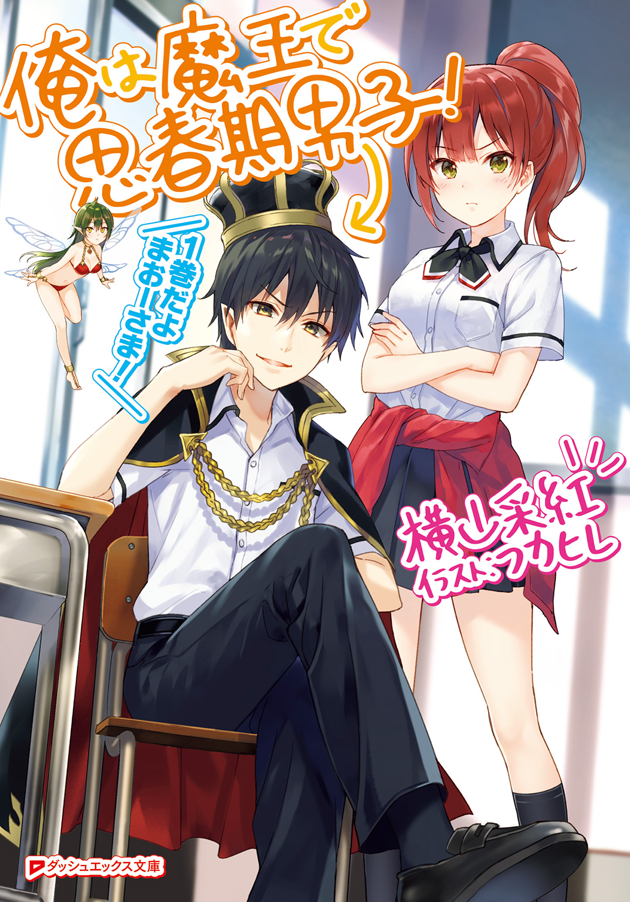
この本は縦書きでレイアウトされています。
また、ご覧になる機種により、表示の差が認められることがあります。
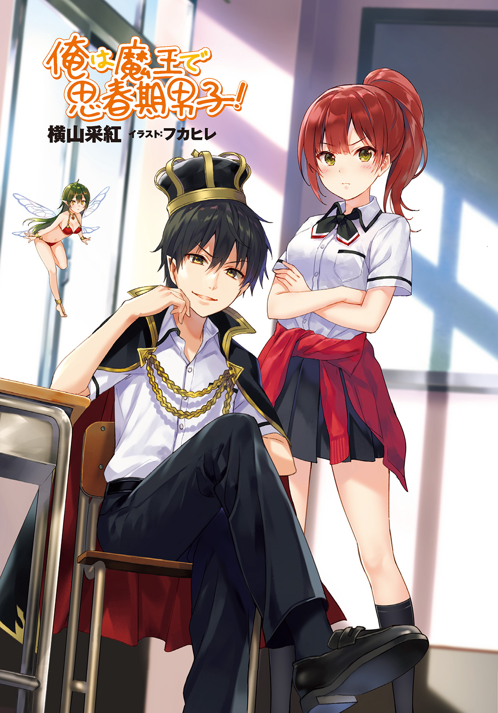
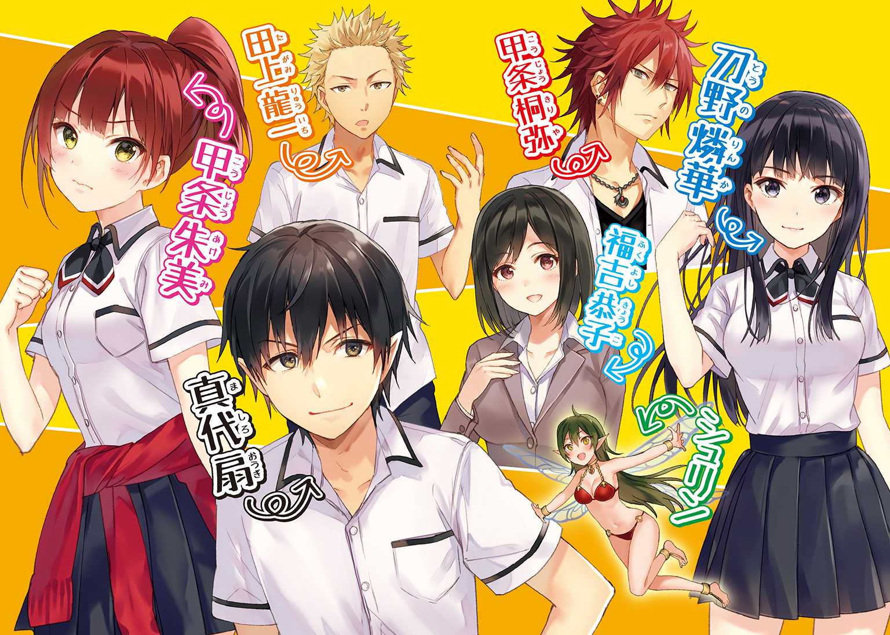
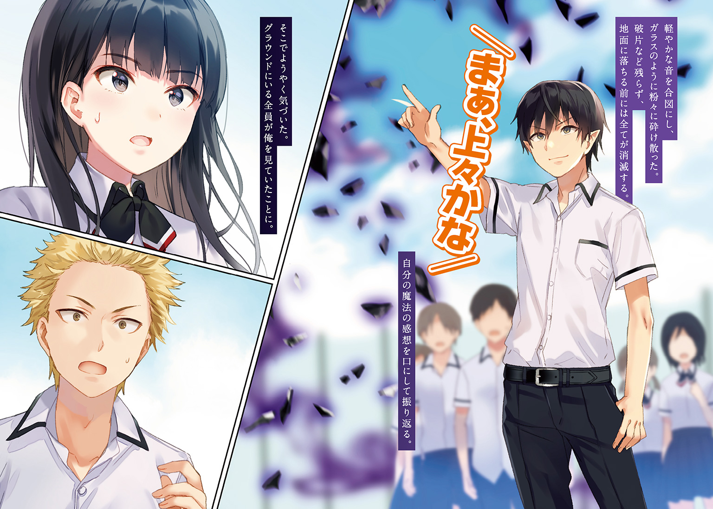
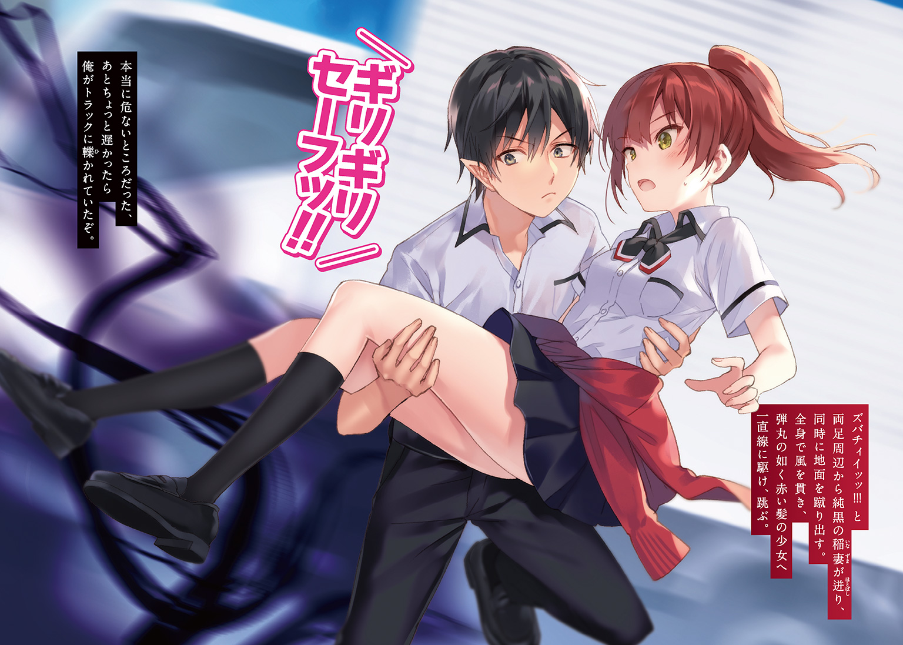
 ダッシュエックス文庫DIGITAL
ダッシュエックス文庫DIGITAL
俺は魔王で思春期男子！
横山采紅
第Ⅰ章 意図した時代の終わりと始まり
世界が終わるとさえ言われた戦いが起きた。
大地は砕け、雲は消滅し、海は引き裂かれ、大気が押し潰される。天変地異のようなそれらの現象は、たった二人の人物の衝突、その余波に過ぎなかった。
片や、あらゆる魔を切り裂き滅する宝剣を手にした勇気と希望を人々に与えた者。
―――人はその者を『勇者』と呼んだ。
片や、世界を手中に収めようと絶対的な破壊と恐怖を撒き散らし植えつけた者。
―――人はその者を『魔王』と呼んだ。
両者の戦いは凄まじく、どちらも譲らず、地球が壊れてしまうのではと危惧するほどの激しいぶつかり合いだった。
どっちが勝ってもおかしくない勝負。
結果――宝剣が魔王を切り裂き、見事勇者が勝利。魔王に怯えて暮らす人々の日々が、この瞬間をもって終わりを告げた。
切り裂かれた魔王は深い谷底へと落とされ、その谷を巨大な岩石で圧壊させて閉じ込めた。
仮に生きていたとしても、もう二度と出てこられないようにと。
―――こうして世界は救われた。魔王に恐怖する暮らしから解放され、世界は歓喜に満ち溢れた。
記念に祝日が出来てしまうほどの偉業に勇者、そして勇者に選ばれしパーティーメンバーたちは称えられ、英雄と呼ばれる。
人類の勝利。栄光の瞬間。
人々はこの時の喜びを、嬉しさを、後世に伝え残していくのだった.........。
「......何これ。拷問？ 俺に対しての精神的拷問か何かなの？」
どこかで誰かが呟いた。
教科書を広げ、制服に身を包み、口元をひくつかせている、『この物語』の登場人物でもある誰かが。
（ま、平和になったんならそれはそれでいいことだけど。今も魔王は谷底にいるんだろうからね）
第Ⅱ章 魔王のこっそり高校ライフ
やあやあ皆さんこんにちは、俺が誰だかわかるかな？
などと訊いてもきっと誰もわからない。誰も俺という人物を知らない。それは当然のことなのだ。
何故かって？ 周りの人間が見ている『俺』という存在は、突然生まれたんだから。今の『俺』が出来る過程を知らない奴には、『俺』がどんな奴なのかは微塵もわかりはしない。
今こうして存在する『俺』は仮の姿.........え？ いやいや、別に中二病とかじゃないよ？ ホントホント。これは『俺』なんだけど、本当の『俺』じゃないんだ。
ぶっちゃけると俺、魔王だったんだよね。
勇者に切り裂かれて死んだはずなのに生きてる訳ないだろ！ と思うかもだけど、マジだから。
大マジですから。マジで俺魔王なんですよ。
いや......ね？ 確かにいきなり勇者とかいう野蛮人が剣を振り回して襲いかかってきてそのまま戦ったんだけど、城とかめちゃくちゃにされたんだけど、やっぱり元を正せば俺たち魔界側が悪い訳じゃん？
原因はどうあれ、脅かしてたのはこっちで、古く長い歴史がそうさせてきてしまっているんだからな。
つまりはそういうこと。俺が死ぬことで怯えて暮らす人間たちの日常を終わらせたのだ。せめてもの償い的な感じで。まぁ魔界側のこともあるからホントには死んでられないんだけど......。
とりあえずは『魔王の死』で世界を平和にした。見た感じ魔王の恐怖から解放されて平穏そのものみたいだし。
で、そんな魔王である俺が人間界にいる理由はというと、端的に言えば勉強のためだ。
魔王という事実を隠し、人間社会に溶け込み、人間のことを勉強する。それが俺がここにいる目的。
また人間と魔物が殺し合うような悲惨な出来事を繰り返さないように、人間たちのことを学び、今後に生かすんだ。
そして俺は、勉強といえば真っ先に頭に過る場所―――学校へ通うことにした。
つまり俺は今からは魔王ではなく、ただの男子高校生となったのだ!!
人間として人間社会を学ぶ、その場所には学校が最適だろう。
だから俺、『真代扇という人間』は今日この日より、高校生になるんだ。
そう、あくまでも、あくまでも目的は人間社会の勉強だ......勉強のためなんだ............。
（っく ！ リアルＪＫ！ スカート短くていいねっ!!）
！ リアルＪＫ！ スカート短くていいねっ!!）
だから......女の子とのキャッキャウフフはただのオマケ！ パンチラとか全然別に興味ないし！
マンガやラノベでよくある学校風景だからって別に興奮とかしてないし！ してないしぃ!!
............フゥ、落ち着け。落ち着くんだ俺。やれば出来る子だもんね俺は。自分の胸の高鳴りくらいコントロール出来なくて何が魔王だよ、なぁ？
「きゃっ！」
「うわっ風が！」
（パンチラァァアアアアアアアアアアアアッッ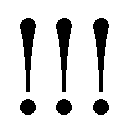）
クワッ!! と目を見開き前方を歩く女子生徒の捲れたベールの下を凝視。
は、初めて見た......まさか、転入早々にこんないいことがあるなんて......今の風ナイス!!
「.........おっと」
慌てて額を叩き、フッと小さく笑う。
これからなるべく目立たないようにしていかなくちゃならないのにパンチラごときに舞い上がってどうする。男はクールでないとな。
「......っと。いつまでも校門前で立ちっぱなしってのはまずいな。転入初日はまずは職員室に行かないとダメなんだったな」
てな訳でようやく校門を通って学校の敷地内へ。目指すは職員室だ。
だが、その時だった。
「うわっ！ 危ないよけろ！」
何やら慌てた声が聞こえたのは。
声のした方へ目を向けてみれば、バスケットボールほどの大きさはあるであろう光の塊が一直線に俺の方に飛んできていた。
光の玉の奥には慌ててこっちに駆けてくる男子生徒が二人見える。あの二人のどっちかが放った魔力の塊だろう。
塊と俺の間には誰も生徒はいない。しかし塊と俺の延長線上、つまり俺の後ろには生徒が何人かいる。
（俺が受け止めるしかないか）
というわけで左の掌を広げ、腕を上げようとしたその直後、いきなり誰かが俺と魔力の塊の間に割り込んできた。
フワリと浮かぶ、日の光により輝いているようにも見える綺麗な赤に、つい目を奪われた。
「せいッ！」
ゴバンッ!! と真正面から右ストレートを魔力の塊に叩き込んで砕いたのは、まさかの女の子だった。
赤い髪をポニーテールにし、カーディガンを腰に巻いたその少女は右手をプラプラと振りながら、
「コントロールもろくに出来ないのに校門の近くでやってんじゃないわよ」
低い声で窘める。言われた男子二人は謝罪の言葉を口にしてそそくさと校舎へと走っていってしまった。
「まったく」と呆れる少女はポニーテールを振り回して軽やかにこちらへと体を向けた。
少女の顔を真正面から見た感想は単純。可愛いという一言だった。攻撃的なつり目が特徴の、ちょっとしかめっ面だがそんなの気にならないほどの、可愛い女の子。
すぐ近くにいる美少女につい見惚れていた俺に、彼女はこう口を開いた。
「ボケッとしてんじゃないわよ、でくの坊」
「.........」
俺は耳を疑った。
しかし彼女の次の言葉に俺の耳は正常なんだと気づかされる。
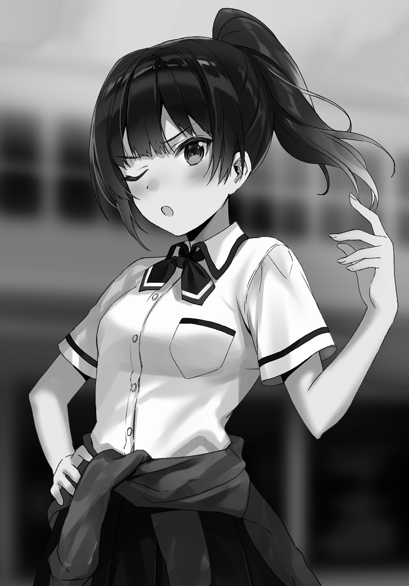
「あんなのも対処出来ないなんて......あんたなんなの？」
なんなのと言われましても......。
「い、いや、一応受け止めるつもりではいたよ？」
「はあ？ 何それ、負け惜しみ？」
何故に？
「ボーッとしてると車に轢かれるから気をつけることね、もやし」
一方的に言うだけ言って、名前も知らない赤いポニーテールの少女は行ってしまった。
一人残された俺はガリガリと歯を嚙み締めながら後ろ姿を睨みつけ、ワナワナと体を震わせる。
周囲に不審な目で見られていることなど気にしなかった。
「...な......なんだ、あの超生意気なガキは......ッ!?」
〇
名前も知らない可愛いが生意気な赤毛の女の子に俺は腹を立てていた。
しかし、しかしだ。
眼前に君臨する巨大な一対のおっぱいに戦慄し、俺の中のイライラは跡形もなく消し飛ばされてしまった。
圧倒的存在感を放つそのおっぱいは自己紹介を始めた。
「初めまして真代くん、私はこの学校の教員で、魔法技の授業を指導する福吉恭子です。よろしくね」
おっぱい......いや、ふくよか......違う、福吉先生の凄まじい圧力に気圧されながらもぎこちなく返事をする俺だった。
肩までの黒髪、凜々しいスーツ姿、芸術的なプロポーション。大人な雰囲気があって、パーフェクトとしか言えない存在である福吉先生に連れられてきたのは薄暗い小さな部屋だった。中央に四角い装置みたいな物が置かれ、それ以外は何一つ物がない。
「これはね、人の魔力量を数値化して出す装置なの。これを今からあなたに使ってもらいます」
点々とある小さな電球の微かな光を浴びる福吉先生は、なんだかスッゴク色っぽい。薄暗い部屋に、男女が二人。大きなおっぱい。
.........なんだかドキドキしてきたぞ。ゴクリ。
「じゃあ、ここに手を置いて魔力を込めて。その魔力の濃度、性質から体内の魔力量を算出するから」
その言葉に、俺の心の内にあるピンク色の何かが静かに消え去っていった。
魔力を数値化する装置、か。俺が魔王だというのがバレてしまう可能性がある......早速ピンチに直面したって訳か......。
（〝大丈夫......だよな〟）
深呼吸して装置に近づく。
「ふふ、そんなに緊張しなくてもいいのよ？」
装置の上には円があり、その中に手型がある。どうやらここに手を置けばいいようなので、俺はそこに手を置く。
俺の手に反応し、装置が作動し至る所がカラフルな光を放ちだした。
「準備オーケーよ、それじゃ、魔力を込めて」
スッと目を閉じ、魔力を掌に集める。
すると、それに合わせるように装置全体が光りだし、正面の空中に光の画面が浮かび上がった。
〇
「という訳で、今日からこの二年四組の新しい生徒になった真代くんです。みなさん拍手」
拍手を黒板の前で浴びる俺は、自分でもわかるくらい固い表情のまま頭を下げた。なんか変に緊張してるんだけど......。
「では真代くん、一番後ろの席に座ってください」
福吉先生がこのクラスの担任教師とか、なんという幸運。毎日この大きなおっぱいを拝めるなんて......絶対休まず学校に来よう。
おっぱいに目が釘付けになっていたが、すぐに言われた自分の席に着く。
（......はーっ......）
そして席に座って眺めた光景に、なんだか感心してしまった。
初めての学校。そして教室の風景。同じ制服を着た生徒たち。席に座ってはっきりと自分がその一員になったのだと実感した。
（よーし、絶対俺が魔王だってバレないぞ。この学校で俺は最高の青春.........違った。人間界を勉強するんだ！）
一人ひっそり決意を新たに固め、俺は机の上で拳を握る。
思春期魔王のハイスクールライフが幕を開けた瞬間である。
第Ⅲ章 このクラス分けは問題アリ
マンガとかでもそうだが、やはり転入生というのは転入初日はスターのように注目を浴びてしまうものなんだなと思わされた。
どこから来たとかどこに住んでるとかなんで転校してきたとかどんな魔法が得意なのかとか。
俺的にはあまり注目は浴びたくないのだがここで突き放すのもそれはそれでまずいだろうな。
やっぱりある程度は仲良くならないと。じゃないと青春を謳歌出来な......勉強出来ないからな！
「初めまして真代くん。私の名は刀野燐華。これからどうぞよろしく」
「あ、ご丁寧にどうも。こちらこそよろしくね、刀野さん」
黒い艶のある綺麗な髪は背中にかかるくらいの長さ。キリッとした目元がそう見せるのか、凜とした雰囲気を身に纏った少女の名前は刀野さんというらしい。
この子も可愛いなぁ...まぁ最初に会った赤毛はともかくとして、この学校なかなかレベル高いんじゃないか？ 他の学校知らないけど。
「わからないことがあれば聞いてくれ。出来る限り力になるよ」
「助かるよ。刀野さんってクラス委員長なの？」
「いや違う、あいにく私はそういう堅苦しい肩書きは嫌いなんだ」
「へー、じゃあ単に優しいんだね」
「別に優しくなどない。困った時はお互い様というやつさ」
「言ってることが男前だね」
「それはそうだろう、私は男なんだからな」
「なっ、なんだとぉッ!?」
「冗談だ」
び、ビビったー......変な汗出たんだけど一瞬......。
「刀野さんって結構お茶目なんだね」
可愛いという言葉をぐっと飲み込む。さすがに馴れ馴れしい気がするし。
「可愛いね」
飲み込めなかったでござる！
「フフ、ありがとう。可愛いなんて言われたのは最近の記憶にはないよ。だが、嬉しいよりもなんだか恥ずかしいな......」
うっすらと赤らめた頰をかく刀野さん。あらやだ可愛い。そういうところも可愛いです。並みの男ならキュンとくるね多分。
「じゃあ、何か困ったら頼っていいかな？」
「ああ。いつでも頼ってくれ」
「れっれれ連絡先とかも交換してくれちゃったり!?」
「それはまだ早いと思う」
ストップがかけられました。残念。
しかし、やはり初対面の得体の知れない相手にこんなにも優しく出来る人なんているもんなんだな。大抵は警戒して接触するのを嫌がると思うんだけど。
このクラスが当たりだったのか他もそうなのかはわからないが、これだけは言える。
優しく美人な刀野さんにおっぱい大きい福吉先生がいる二年四組は最高だねっ！
「刀野さん、グラウンド行くよー」
「あっそうか。わかった」
「？」
気づけばクラスのみんながぞろぞろと教室を出ていく。さっきの女子生徒が言ったようにグラウンドに行くのだろうか？
「なんでグラウンドに行くの？」
「一時限目は魔法技の授業で、この授業は実際に魔法を使って行う授業だから室内では出来ないんだよ」
「ほほぅ」
なるほど、ちゃんと魔法を学ぶための授業もあるんだな。まぁ魔法学校だし当然か。
みんなが校庭に行くのなら俺も行かなければならない。人生初の学校での授業がまさかの魔法関連なのはちょっと気にかかる点もあるんだが、とりあえず真剣に受けないと。
〇
上履きから運動靴に履き替えてグラウンドに集合。まさに学校って感じのチャイムの音により、俺の人生初めての授業が始まった。
「では、魔法技の授業を始めます」
担当教師は福吉先生。そういえば魔法技を指導してるって言ってたな。
福吉先生は先程着ていたスーツではなく、上下のジャージといった動きやすい服装に着替えていた。
先生のおっぱいがジャージを内側から押し退けさっきよりも大きく見える。なんだあれは、あんなのありなのか。
「こらお喋りしない。今は授業中、先生に集中しなさい」
してるよ！ 俺、多分誰よりも先生に集中してるよ！ だから褒めてください先生！
「今日は四組と六組の合同授業です。それではまずペアを組んで、準備運動をしてください」
この魔法技という科目はどうやら他のクラスとの合同で行うらしい。俺が在籍する四組の他にもいるなーと思ったら、どうやら六組の生徒のようだ。
......ただ、六組の生徒たちを見て思ったことが一つある。
（なんか、柄悪いな）
大半が髪を染めてチャラチャラしている。校則がそこまで厳しくないのか、俺がいる四組とは印象が全然違って見える。
「真代くん、一緒にペアにならないか？」
六組を観察していた時だ、人混みから俺に向かって真っ直ぐ歩いてきた刀野さんがそう提案してきた。
「いいけど、刀野さんはいいの？ いつも組んでる子とかいるんじゃないの？」
「構わないよ。私はいつも同じ相手ではなく、より多くの人と組むようにしてる。そうすれば誰とでも話せるし、仲良くなれるからな」
この子はホント真っ直ぐでいい子だな。見た目の通り一本の筋が通った女の子だ。素敵。
「わかった、じゃあ組もう。あと、別に俺はくん付けじゃなくていいからね」
「そうか、なら私も呼び捨てで構わないぞ」
てな訳で刀野さんとペア。さっそく青春をしてしまっているなぁ。可愛い女の子に優しくされて、手取り足取り教えてもらえて......。
「？ ......どうした真代、何かおかしかったか？」
「いやいや別になんでも！」
顔をブンブン振ってニヤケ顔をかき消す。危ない危ない。
ペアも決まったところで、福吉先生の言う通り準備運動をし、一通り終えてから次の指示を待つ。
.........ここだけの話、刀野さんは性格からしても真面目だから真剣に準備運動をしていたんだが、もう距離が近いわ髪の匂いがするわ体は柔らかいわでドキドキでござった。
あっまた顔がニヤニヤしてないか確認しとかないと。
「準備運動が終わったら、まずは魔力体の受け渡しから始めてください。危なくないよう距離を空けて、安全におこなってくださいね」
福吉先生の言葉にはっきりと頷いて、刀野さんに向く。
「で、何すんの？」
「今はっきりと頷いてなかったか？」
「先生の言葉を理解しただけだよ。内容まではさっぱり」
苦笑いを浮かべる刀野さん。
「魔力体っていうのは魔力によって形成された球体だ。それをキャッチボールのようにするんだ」
「ほほぅ」
キャッチボールか.........あ、もしかして今朝校門近くで飛んできた魔力の塊って、男子二人がキャッチボールやってた時のものかな？ じゃないとあんな所で魔力を放つことなんてないだろうし。
「では始めるか。魔力体をキャッチする際は手に魔力を籠めることを忘れないように。体に負荷をかけずにキャッチするには魔力体との比率によって変わるから、このキャッチボールはそのあたりのコントロールの鍛練だな」
魔力ってのは、言うならば内的エネルギーであり、ある一つの物質でもある。
それを塊にするとただのコンクリートよりも固くなることもある。それはまぁ魔力の密度にもよる話だが、塊の形を維持するにはある程度〝固めないといけない〟。
魔力体は意図的に固めない限り些細な衝撃で破裂してしまうから、『魔力体との比率を見極め、破裂させないようにやんわりと魔力で受け止める』という繊細な魔力操作を学ぶものだろう。魔王の俺からしたら手足の指を動かすくらい楽チンな内容である。
すでに周りのみんなはおのおのキャッチボールを始めている。野球ボールくらいのもあればバスケットボールほどの大きさのある魔力体があちらこちらへ飛び交っているのが見える。
その中で、ふと視線が止まる。
その先では六組の連中がキャッチボールをしていた。
「.........」
やってることは同じだが四組とは違う点があった。スピードだ。
山なりに放る四組と違い、まるで野球のピッチャーみたいに豪速球で投げている。しかもキャッチした側もすぐに豪速球で返している。
ただ〝投げている〟のではない、魔力体を掌の魔力を使って打ち出すように放っている。
男子も、女子も。気になったのはそれを〝ただ行っている〟のではなく、〝こちらに見せつけている〟ように見える。
まるで、レベルの違いを見せつけるように。
「六組が気になるのか？」
「え？ うん、まぁ。なんか柄の悪い連中だなーと思って」
「そうか、キミは転校生だからこの学校のクラス分け制度を知らなかったな」
「制度？ そんなのあるの？」
小首を傾げる。刀野さんは右の掌に魔力の球体を作り上げながらも説明してくれた。
「この学校は魔力の量でクラス分けがされているんだ。魔力推定装置はその判断基準で、魔力が多い人間が入るのが六組で徐々に下になっていくんだ」
あれか、朝、福吉先生に連れていかれた部屋にある魔力に反応する機械。
数値化出来るとか言ってたし、なるほど、その量でどのクラスになるのかを決めたのか。
「つまり六組が魔力の多い人が集まって、一組が魔力の少ない人が集まるのか......。でもなんかそれ不公平にならない？ 少ない奴と多い奴をわざわざ分けるくらいだから、それなりに魔力の多い奴らが優遇されてそうなイメージなんだけど」
「確かにそういったものはあるな。魔力の多い人間には魔法の授業が多く、少ない人間はその授業が少ない。それのせいで差別的意識があるのも事実だ」
「なるほど、つまり」
人差し指を立て、自分なりの解釈を口にする。
「あの柄の悪さは天狗になってる証拠ってことか。そう考えたらなんとなく見下してるような目をしてるのにも納得がいくよ」
何の気なしの率直な感想を口にした。してしまった。
どうやらそれがいけなかったようだ。
「おい、今なんつったお前？」
刀野さんから投げられた魔力の球体をキャッチしたのとほぼ同時のタイミングで、一人の茶髪の男子生徒が俺にそう声をかけてきた。
「何が？」
「とぼけんな、今お前、俺たちのことを天狗だとか言っただろうが」
「言ってないよ？」
「いや言っただろ。聞こえてんだぞ白々しい噓つくな」
「じゃあ言った」
「じゃあってなんだよ言ったんだろうが、はっきりしろよ」
「言ってない」
「どっちだよ！ 聞いたっつってんだろが！ 誤魔化すなよお前！」
「授業中は静かにしろよ、うるさいぞ天狗」
「今言ったよな？ 天狗ってはっきり言ったよな」
「言ったよ」
「お、おう......」
男子生徒は僅かに呆れの色を顔の表面に浮かべた。
だが咳払いを一つしてからすぐに真剣というか、威嚇をするような凄みを利かせた顔になる。
「ナメたこと言ってんじゃねぇよ、俺たち六組は言うならエリートの集まりだ。上の人間が下の奴らを見下して何が悪い？」
マジか。見下してる自覚あるのかよこいつ。......えっ、まさかみんな自覚してたりするの？
「チッ、また始まったよ......」
「だから六組との授業は嫌なのよね......」
ボソボソと四組側から不満を口にする声がちらほら。どうやら前から六組はこんな感じみたいだな。
「でもただ魔力が人より多いだけなんだろ？ そんなに威張る要素ないと思うんだけど」
「なんだと？」
「いやぁ、魔力多くてもそれを使う技術とか持ってないと意味ないし、それに魔力多いから強いって訳でもないし、自慢することじゃないと思うよ？ 魔力量なんてさ」
刀野さんから受け取った魔力の球体を指先で回しながら六組のみんなに忠告する。
自分たちの思い上がりを訂正してあげる。うん、俺今いいことしてるな。
「ハッ、技術を持ってないだと？ 舐めんなよお前、自分の魔力量を活かす技術くらい持ってるに決まってるだろうが」
「つかこいつ四組のくせに何さっきから上から目線で語っちゃってんの？」
「アハハ、マジウケる」
何も面白いことは言っていないのに六組のみなさんは笑っていらっしゃる。
どうやら俺には人を笑わせる隠れた才能があったみたいだ............とかいう冗談はいいとして、確実に見下されて馬鹿にされている。
「ていうかこいつ、初めて見る顔だな。転校生か？」
「今日転校してきた」
「ハッ、道理で身の程を知らない口の利き方な訳だ」
ごめんそれ俺のせりふだわ（魔王）。
「お前たちの方こそ身の程を知るべきだ」
なんと、俺のせりふを代弁してくれたのは刀野さんだ。
「六組に選ばれたのは単なる魔力の量だけだ。訓練次第で魔力は増幅するし、個人の強さに魔力の大小など関係ない。真代の言う通り、お前たちは天狗になっているぞ」
「そうだそうだ！ この天狗ども！ 長鼻！ 妖怪！」
「真代、ちょっと黙っててくれ」
「あ、はい」
扇くん沈黙ー。
「今は授業中だ。私語はこの辺にしておきたいが、そのあたりは改めていただきたいな」
「まったくだな」
刀野さんの言葉に続いたのは、予想外にも六組側からだった。
声を発した男子生徒は金髪の頭をかきながら面倒くさそうに、
「魔力量だけで偉そうにするなんざ雑魚アピールもいいトコだ。足を掬われて痛い目を見るのが目に浮かぶ」
「た、田上、お前何言ってんだよ。俺らが足を掬われるなんてある訳ないだろ」
「少なくとも、そこの転校生には掬われそうだがな」
俺に目だけを向けて言う田上という少年。なかなか人を見抜くいい目をしているようだ。
それに、かなり腕も立つみたいだし。
「お、お喋りはそこまでです。授業に集中してください」
ここで福吉先生の注意が入る。さすがにそれには従うのか、六組の面々は渋々と俺と刀野さんから離れていった。
俺は手にあった魔力球を頭に乗せ、刀野さんに尋ねてみる。
「六組があんな感じなのは昔からなの？」
「ああ。まあ原因は社会的思想によるものが大きいんだが」
「社会的思想？ なんだか難しい話だなぁ」
「力のツエーのが偉いっつう簡単な考えだ、別に難しくないだろ」
いきなり話に乱入してきた金髪男子、六組の田上くんは実に馬鹿馬鹿しいと吐き捨てるように、
「ああいうのは痛い目に遭わないと納得しねぇんだ。あんまり真に受けんなよ」
「キミはああいう考え方を持ってないんだね」
「どうでもいいだけだ。ただ魔力量が多けりゃ得することが多いからな、つけ上がるのも仕方ない話ではある」
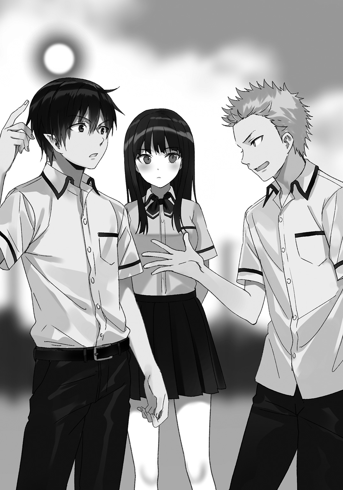
確かに田上くんの言う通り、魔力が多いと何かと得することが多いのが人間社会の根幹みたいな部分があるのは見ていてわかる。だから他より優れているという意識が固定され、学校のクラス分けのような露骨な制度が余計優越感を煽る結果になっている。
「悩ましいところだなー。学校なんだから知力で優劣決めろよって話なんだけど」
「言っちまえばそれだよ、賢い奴が馬鹿を見下す。どうしようもねー世界の理みたいなモンだ」
「世界の理かぁ、カッコいいこと言うね田上くん！」
「ふむ、確かに。深い言葉だ」
「やめろそこを持ち上げるな、恥ずかしくなってくるだろ」
「では次に移ります。一度各クラスに分かれて集まってください」
福吉先生の言葉を聞き、一度田上くんと離れて俺と刀野さんは四組の集まりへと向かう。
（...............チッ、転校生もムカつくが、お前に言われると余計ムカつくんだよ、刀野）
――いくら魔王である俺でも、他人の思考までは読むことは出来ない。
（魔力量が少ないくせに強いお前に偉そうにされると、俺たち六組の立場ってのがなくなるんだよ）
故に、茶髪の少年の思考など読めるはずがなかった。
（......派手にスッ転べ！）
よって、まさか魔法で刀野さんの足下の地面を盛り上げて転ばせようとするなど考えもしなかった――――が。
「ん？」
魔法の発動、それにより地面がどう変化するのかは、多分誰よりも早く気づけた。
だから。
刀野さんの肩を摑んで動きを止め、ゴズンッ と足下前方の盛り上がろうとしたグラウンドを力任せに踏みつけ、押し潰す。
「......ッ!?」
突然の俺の行動に刀野さんが目を見張り息を飲んだが、俺はそんな彼女にニコッと笑いかける。
「虫がいたんだ。俺虫嫌いだからさ」
踏みつけた右足を足形に凹んだ地面から離し、みんなに注目されているのを自覚してそんなふうに言い訳する。
「刀野さん、大丈夫だった？ 俺、足とか踏んでないよね？」
「......あ、ああ」
「よかった。ささっ、早く四組の集まりに行かなきゃ」
「ま、待て真代、押すなっ......！」
背中をグイグイ押して無理矢理歩かせながら、俺は静かに細めた目だけを動かす。
今の土を盛り上げる魔法を使った茶髪の男子生徒へ視線を送り、目が合った。呆気に取られていたようだが、目が合うなり慌てて逸らす。その行為になんの意味もないことに気づいていないのだろうか？
（刀野さんにそんな下らないことをするのはおかしくないか？ 元を正せば俺の軽はずみな発言が原因だろうに）
気にしても仕方がないか。彼にも彼なりに思うところがあったのだろう。
ただ、
（まぁ、『俺』の前でそんな勝手が出来るとは思わないことだね）
学校に来るために弱体化しているからとはいえ魔王は魔王だ。あまり見くびらないでいただきたいものである。
――それからは六組とのいざこざもなく、スムーズに授業は進んでいく。もちろん俺は福吉先生の言葉を一言一句聞き逃さずに真剣に授業を受けています。
「それでは次です。今から私が的を作りますのでみなさんはそれを得意な魔法で的確に破壊してください」
そう言ってグラウンドに手をついた福吉先生。その手から大量の水が放出され、グラウンドの上を水が一直線に走る。
ある程度流れたと思えば川のようになった中からバランスボールほどの大きさの塊が飛び出し、水の柱を支えに空中で留まった。
同じ物が数個、一定の距離を置いて並ぶ光景を見ながら隣にいる刀野さんに尋ねてみる。
「福吉先生って、もしかして水系の魔法が得意なの？」
「ああ。聞いた話によれば、福吉先生は水系魔法に関して言えば校内一の実力を持っているらしいぞ」
「ほー。軽々とやってるからもしかしてと思ったけど、そんなにすごいんだ福吉先生って。ヤバい、惚れそう」
「何を言っているんだキミは」
やめて刀野さん、そんな冷たい目で見ないでっ。
「順番に前に出て、正面にある水の塊を壊してください。属性は問いませんが、一定の威力がないと壊せないので注意してください」
先生の言葉を合図に始まる。大体各クラス四人くらいが並んで魔法を放ち、水の塊を破壊しにかかる。
ただなにぶん、的が水なので破壊は容易ではない。先に福吉先生が言ったように威力は高くないといけないし、属性の相性もある。
主に火、水、風、雷、土という属性があり、またどの属性でもない純粋な魔力を使った魔法......いわゆる無系統魔法などがあったりする。これらが基本の魔力属性だな。
「ちなみに、刀野さんの得意な魔法って？」
「私か？ 私は火が得意だ」
「じゃああの的はどうやって壊すの？ 別の属性魔法でやるの？」
「いいや、私は火でいく。相性は悪いが、火力や単純な魔法の威力さえ高ければ相性など関係ないしな」
相性など知ったことか、そんなもん力押しだーと言わんばかりの強気な意見だ。そういう考え嫌いじゃないです、むしろ好きです。
男らしい思考はもちろん刀野さんだけではない。他にも敢えて相性の悪い火で挑む生徒たちもたくさんいた。
目立つのはやはり六組。個人の強さで大事なのは魔力じゃないといえど、魔力あっての魔法だ。籠める魔力が多ければ多いほど魔法は強くなるんだからこればかりはどうにもならない。
「次、真代くんの番だよ」
「ん、ああ、ありがと」
クラスメイトの女子に言われて魔法を放つ位置に立ち、十メートルほど先に浮かぶ水の塊を見据える。
（バンバン強い魔法を撃ってる六組に対抗なんてしたら、さっきみたいに刺激してまたややこしいことになりかねないな）
というわけで、壊せる程度の無難な魔法でさっさと壊してしまおう。
「転校生がどんな魔法を使うのか」と興味津々で周りから見られていることなど頭にはなかった。
ただ壊して終わらせる、それしか頭になかったんだ。
だから、俺は真っ直ぐ突き出した右掌に魔力を集中させて魔法を放つ準備をし、照準を水塊に合わせる。
パチン、と弾ける音が掌周辺から発せられ、掌に集まった魔力が水塊へと放たれる。
形という形はなく、目にも見えない魔力の波が水塊に接触する。
―――直後、音もなく半透明の綺麗な水が黒一色に染まった。
浮かんでいた水、それを支えていた水柱まで一瞬で染め上げた後、俺は前に伸ばしていた右手の指を弾く。
軽やかな音を合図にし、ガラスのように粉々に砕け散った。破片など残らず、地面に落ちる前には全てが消滅する。
「まぁ、上々かな」
自分の魔法の感想を口にして振り返る。
そこでようやく気づいた。グラウンドにいる全員が俺を見ていたことに。呆気に取られているとも驚愕しているとも表現出来るさまを目にし、俺は思った。これは何かやらかしたのではないかと、直感的に。
「.........黒い、魔力......？」
刀野さんが吐息混じりに呟くのを聞いた。
驚きに満ちた、啞然とした顔のまま。
「.........『魔王』と同じ、黒い魔法......？」
ただの直感が確信へと変わる。
やばい、これはやらかした。
何がどうやらかしたのかなんて考えるまでもない。俺が先ほど使ってみせた魔法だ。
魔法は大きな括りとして二つ。
一つが火、水、雷、土、風、無系統を含めた一般的とされる『白魔法』。
そしてもう一つが、属性という属性が存在しないとされている『黒魔法』。この二つに分類されている。
俺が使ったのはもちろん後者の黒魔法だ。何の気なしに使ったはいいが、この状況はまずい気がする。刀野さんがさっき呟いていた『核心』からなんとしてでも逸れなくては......。
「......ど、どうしたの？ 何か変だった？」
「.........変っつーか、お前、わからねぇのか...？」
六組の田上くんも、みんなと同じような顔をしていた。
「黒魔法を使えた人間は、今まで一人たりともいないんだぞ......？」
「............」
耳を疑う内容だった。
魔法という力が認識されて数千年、人間は黒魔法を使えたことがない？
田上くんの発言やみんなの反応を見るに、黒魔法という存在は知れ渡っているようだ。しかし人間はこれまで一度も、誰一人として発動出来た奴がいないっていうのか......？
だとするなら、
（やっべー、注目浴びないようにしようとしたのに真逆になっちまったー......）
この時この瞬間、俺が人類初の黒魔法発現者になってしまったことになる。
ちょっとやそっとの注目度じゃない、下手をしたら、人間の歴史を変えるレベルの......。
これはまずい、なんとか誤魔化すんだ！ 変な目立ち方は正体がバレるリスクが満載すぎる!!
考えろ俺......！ この場をなんとなく収め、且つ注目を浴びないようにする流れを見つけ出せぇッ!!
「.............................................、エェ？ ソーダッタノー？」
『............』
く、苦しいか......？ それとなく乗っかっちゃおう作戦は厳しいか......!?
「い、いやーその、あれだ............そう！ 魔王！ 俺も勇者たちの力になりたくて黒魔法を研究したんだよ！ だってほら、魔王は黒魔法使うじゃん？ だから実際に黒魔法を使ってみて弱点とかを見つけようとしたんだ！」
「......な、なるほど......？」
誤魔化せたか......!? いや、まだ油断するな俺!!
「研究の甲斐あって使えるようになったんだけど、実はこれ超ヤバくてさ。いつもと違う魔力の練り方をして魔法使ったら出来たんだけど、そのせいで大変なことになっちゃって」
「大変なこと？ なんだよそれ」
「頭から赤いペンキを被ったみたいに血まみれになっちゃった」
俺の言葉にギョッと目を剝くみんなの様子を見て、ここに活路があると見極め畳みかける。
「今もまだ曖昧なところがあるから人に教えたりは出来ないんだ。だから他の人には内緒でお願いね」
「あ、ああ......」
「言った人には黒魔法ぶつけるから」
「さらっと笑顔で脅迫すんな」
田上くんの言葉に笑みを零す人もちらほら。よしやった！ ピンチを切り抜けたぜ!!
一時ストップしていた福吉先生の授業も再開され、そこからはもう目立たないよう黒魔法は使わずにやり過ごす。注目を浴びるのはごめんだからね。
でも意外だったな、人間が黒魔法を使えないなんて。そういやあのクソッタレ勇者やその仲間も使ったところを見てないな。
「......思い出したらイライラしてきた」
「どうした真代？」
「なんでもないよ刀野さん」
「ならいいが。しかしキミが黒魔法を使えるとは驚きだよ。実際にこの目で見たのは初めてだ、施設では魔物が使っている映像でしか見なかったからな」
「施設？ なんの？」
「『勇者パーティー育成施設』だよ、私はそこに通っていたんだ」
「............」
勇者パーティー......育成施設だッ？？？
なぁんだその大変胸糞な施設はあッ
「.........へ、ヘー......ソ、ソーナンダースゴイネー...」
「別にすごくなどないよ、通っていただけだ。私も勇者のように強くなりたいだけだったからな」
「そうなんだ、勇者みたいにねぇ」
まぁまったく共感出来ませんが。
......ごめん訂正、する気がありません。
「それにこの学校には勇者パーティーの一員がいる。光栄でもあるし、いい目標にもなるよ」
「――――、なんだって？」
「そうか、真代は転校生だから知らないのは当然か」
そう言って、刀野さんは校舎を指差した。
生徒が勉学に励む校舎、その天辺。つまりは屋上を。
そこで悠然と風を受け、太陽の光に照らされながら堂々とはためく大きな旗が突き刺さっていた。
大きな金色の剣、その鍔を持つ背中合わせの二羽の鷲が描かれたマークに、俺の二つの眼球が吸い寄せられ、動かなくなる。
見覚えのあるマーク。
忘れることのないシンボル。
知らぬ間に握り締めていた拳を開かずに呟く。
「......予想外だな」
「真代？」
隣にいる刀野さんに一切反応せず、遥か頭上で俺を見下ろすシンボルを睨みつけ、唇を歪める。
「そうかそうか、なるほどね」
なんたる偶然だろうか。たまたま選んだ学校に、憎き勇者のお仲間が在学しておられるとは思いもしなかったよ。
......人間界の勉強とか、こっそり青春ラブコメを送るとか、そんなこと言ってる場合じゃなくなるかもしれないなぁ......。
第Ⅳ章 生意気すぎると可愛くない
いくら勇者パーティーのメンバーがいるとわかったからって、こちらから何かしらアクションを起こしたりはしない。
そんなことをすれば余計目立つし、下手をしたら俺が魔王だってことがバレてしまうかもしれない。勇者ならまだしも、その仲間にそこまでやる必要は感じられなかったからだ。
だから俺は勇者パーティーなんかには関わらず、おとなしくひっそりとなるべく人目につかないように学校生活を送っている。
転校してから半月ほどが経った。まだまだ学校の知らないこともあるが、日常的なことにはすっかり慣れたものだ。
勇者パーティーがいるせいで自由に動けない、コソコソしなくちゃならないといったストレスもあったりするが、それなりに楽しく、学校生活を満喫している。
そして......今日......ついに......!!
「スクール水着のお披露目だぜぇぇええええええ」
朝っぱらからテンションマックス。こう見えても魔王なのよ、俺。
〈うるさいっっ〉
「ごぶはッ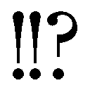」
怒られ殴られ吹き飛ばされる。これでも魔王ですよ、俺。
激突したソファーを引っくり返して床に倒れ伏す。そんな俺の頭を踏んづけながら、か細い声が鼓膜に触れてくる。
〈何時だと思ってるの!? こっちはまだ寝てるっていうのに!!〉
ちなみにここは俺の家だ。
マンションの一室を借り、そこで生活している。
一応一人暮らしではあるが、それが正しいかと言われると答えはノーだ。
何故ならば......一人一匹暮らしだからだ。
「安心しろ、家に張った魔力結界で近所迷惑にはなっていない」
〈そーゆー問題じゃないのー！〉
「イデデッ、ぐりぐりすんなよシュリン、痛い痛い！」
俺の頭の上で暴れるのは体長十五センチほどの小人だ。
深緑の長い髪に黄色い瞳。背中にはトンボのような半透明な羽があり、真っ赤なビキニを身につけたこいつはシュリン。絶滅したとされていた魔物の種族、妖精の一匹だ。
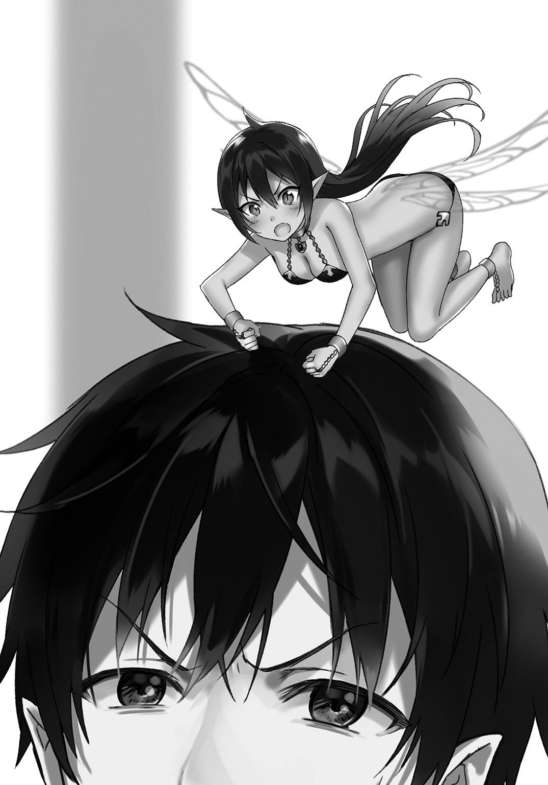
〈気持ちよく寝てたのにビックリして飛び起きちゃったよー、まおーさまがおーごえ出すから〉
「悪い悪い、ちょっとテンションがウハウハだったから」
〈まったくぅ、まだ五時前なんだよ？ ご飯だって炊けてないのにぃ〉
プンプン怒るシュリン。俺は倒れたソファを元に戻しながら謝罪の言葉を放る。
「ごめんって。興奮のあまりめちゃめちゃ早くに目が覚めちゃったんだよ」
〈ハー...私ももー目が覚めちゃったし、ちょっと早いけど朝ごはんにしよっかまおーさま〉
「でもまだ米炊けてないんだろ？」
〈パンがあるからだいじょーぶ。ご飯は夜に食べればいーし〉
とか言ってキッチンへ飛んでいってしまったシュリンのあとを追う形で俺もキッチンに入る。
俺とシュリンの飲み物......パンだから牛乳でいいか。牛乳とコップを持ってテーブルに置き、トースターに食パンを放り込むシュリンに目を向ける。
シュリンとはここに来てからずっと一緒に暮らし、家事の全般をやってくれている。おかげで俺はなに不自由なく楽しく暮らせているよ。
「何か手伝うことあるか？」
〈特にないからゆっくりしてていーよ〉
今となっては欠かせない存在だ。まぁ昔からそうだけど。
〈よし出来た！ はいまおーさま〉
テーブルにトーストと目玉焼き、ベーコンが載った皿を二つ運ぶシュリンの言葉でテレビのニュース番組から目を離す。
シュリンがまだ何かを取りに行く姿を見ながら俺とシュリンのコップに牛乳を入れ、戻ってくるのを待つ。
〈ブルーベリージャムにマーガリン、ストロベリージャムもあるけどまおーさまは何がいい？〉
「ブルーベリーだな。目に栄養を与えて今日のスクール水着を鮮明に見ないといけないから」
〈ブルーベリージャムにそんなそっこーせいはないと思うけど、わかった。じゃあ私もブルーベリー〉
小さい体で俺のトーストにジャムを塗ってくれるシュリン。世話焼きと言うか面倒見がいいと言うか......。
「まるでお母さんみたいだな」
〈おかーさんよりお嫁さんがいいなー〉
「俺よりもめちゃくちゃ年上のくせに」
〈年の差なんてかんけーないよ、愛さえあれば！〉
「わーかっこいー」
〈なんでそこてきとーなの!? ムカつくー！〉
「ジャム塗ったスプーンを振り回すなよ」
トーストにかじりつき、ブルーベリーを体内に摂取。眼球に栄養をぶちこみスクール水着を目に焼きつけるために視力を強化する。
〈まおーさま、がっこーはどーなの？ 楽しい？〉
「そりゃあもう。友達も出来たし、授業も人間界のことを知るのにためになってるしな。おまけに今日はお待ちかねのスクール水着のお披露目だし！」
〈そーいえばプールのじゅぎょーがあるんだっけ。水着の準備はしてるの？〉
「四日前からカバンに入れてる」
〈どれだけまちどーしかったの!?〉
それはもう、学校に行くと決めた時からですよ。
ええそうです、魔王といえど思春期なんです。女の子の体とかに興味津々なのです！ 女体ッ!!
「やべー胸の高鳴りがすごい」
〈しっかりしてよ、まおーなんだから人間のメスの体なんかにこーふんするとかみっともないよ？〉
「俺だって男なんだから異性に興味持ってもいいだろ、あとメスって言うな」
〈じゃーこのシュリンちゃんの体には毎日こーふんしてるということなのかな？〉
立ち上がるや、いろんなセクシーポーズをとるシュリン。確かにシュリンは羽が生えていて小さいってだけで見た目は人間と変わらない。
出るところは出ているし、言ってしまえばナイスバディーではある。それでいながら赤いビキニを着ているんだからエロさがあるかと言われればあるが......。
「でもちっちゃいしなー」
〈こらァ!! おっぱいを摘まむなァ!!〉
「だって揉めないし」
〈うぐッ!? ......くぅっ、人間に負けないくらいのエロボディーなのに......!!〉
「落ち込むな落ち込むな。そこらのフィギュアなんかよりはずっと可愛いんだからいいじゃん」
〈フィギュアと比べるなー！〉
憤慨するシュリンをスルーして牛乳を飲み、一息ついたところでふとあることを思い出した。
「おいシュリン」
〈んー？〉
俺と同じようにコップを両手で担いで牛乳を飲む、ふて腐れたちっこい妖精の顔を真っ直ぐ見つめ、やや目を細めながら尋ねる。
「お前、俺のフィギュアの腕へし折っただろ」
〈ごばふッッ!!〉
牛乳が暴発した。
牛乳まみれになったビキニ妖精。俺はさらに目を細め、担いだままのコップを取り上げる。
白い液体まみれになった哀れな妖精は固まった顔をギギギギッとぎこちない動きで横へ方向転換してから、
〈.........はて、なんのことですか......？〉
「俺の部屋にあるフィギュア、その一体の腕があり得ない方向に向いていたんだよ」
〈そ、そーなの......？ 最初からそーだったんじゃなくて......？〉
あくまでとぼけるスタンスを貫くかこいつ。
「隠蔽しようとしたが失敗だったな。お前は原型を知らなかった、だから腕があんなとんちんかんな向きになってた」
〈.........〉
「そしてお前は何かくっつけるものを探して、見つけたそれでなんとかくっつけた」
〈.........〉
「.........木工用ボンドで」
牛乳まみれのシュリンは無言で土下座。俺はフッと小さく笑う。
そこから僅かな空白の後、
「あれ限定品なんだぞ何してくれてんだワリャアアアアアッッ」
〈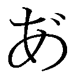―――――――――――――――――ッッ！！！！〉
怒り爆発。両足を握った腕を高速で振り回すという無慈悲スイングの刑を執行した。
全力で、一心不乱に右腕でグルグル円を描く。手にシュリンを摑んだまま。
〈ごっごめんなさい悪かったです――!!〉
「壊したままなら専用接着剤とか復元魔法とかで俺がなんとかしたのに!! なんでボンド!? 木工用って木だぞ!? お前にはあれが木に見えたのかー!?」
〈ボンドはボンドだからなんでもいいと思って――!!〉
「確かにくっつくけど使って隠蔽すんならもっと綺麗にやれよ!! 脇までボンドが垂れてなんか卑猥になってたんだぞ!! ナツヒちゃんはビッチっぽいけど清純派なんだよォオオオ!!」
互いに叫ぶだけ叫び、最後にシュリンをソファーの上にあるクッションめがけて投げつける。
変な声を出してクッションに埋もれ、弾かれて床にボテンと落ちるシュリンを無視して椅子に座り朝食を再開。イライラを抑えるべく牛乳をがぶ飲みする。
〈あう～......まおーさまごめんなさい～〉
「牛乳くさいから流してこい」
〈う～......〉
ふわふわと元気なく飛んでいくシュリン。俺はため息を一つ吐き出し、洗面所からタオルを一枚持ってシュリンが水を浴びているキッチンへ。
「ほら、タオル」
〈あ、ありがとーまおーさま。あとごめんね？〉
「壊したのも許せんが隠蔽しようとしたのがもっと許せん。昨日は見間違いかと思って寝たからすっかり忘れてたけど、壊したならちゃんと言え。いいな？」
〈はい......〉
タオルを受け取ろうとするあからさまに落ち込むシュリンを、摑む寸前でガバッとタオルでくるむ。
〈ムギャッ!?〉
「反省したなら許す。やっちゃったことは仕方ないし、わざとじゃないんだろ？ きっと掃除か何かしてる時にぶつかったんじゃないのか？」
〈そ、そーだけど......〉
「ならもういいよ、許す。お仕置きもしたし、いつまでも怒っててもしょーがないし。だからもう元気出せ」
水を拭っていたタオルからヒョコッと顔を出すシュリンに笑いかけると、目を潤ませながら何度も頷いてみせた。
「何泣いてんだよ。ほら、さっさと食べちゃおうぜ。っとその前に着替えてこいよ。ビキニっつっても濡れたままは嫌だろ？」
〈あい......〉
拭き終わったタオルを受け取り、自分の部屋へ着替えを取りに行くシュリンを見送り、先にパパッと朝食を腹に収めて俺も寝間着から制服に着替える。
学校に行くにはまだ早いので元気を取り戻したシュリンと時間までグータラして過ごし、いい時間になったのでそろそろ登校することに。
「んじゃ、行ってくるよ」
〈いってらっしゃい、気をつけてね〉
シュリンに見送られ、すっかり夏となった外へ踏み出す。
ジリジリと肌を焼くような熱に中てられながら、しかし俺のテンションは高く、暑さなど気にもならない。
シュリンが壊したフィギュアの件もあったが、それはもういい。今はそれ以上に俺の心を支配しているものがあるんだ。
（お初にお目にかかるスクール水着！ 普段見られない女の子たちの、学校だけで見ることが出来る限定的な神秘の姿！ フッハハーテンション上がる――!!）
ルンルン気分でスキップしながらいつもの通学路を進んでいく。スクール水着のお披露目は昼休み前の四時限目、勿体ぶった時間割だぜまったくぅ！
他の授業も大事だが、あくまで今日のメインはスクール水着！ あまりの期待に歌でも歌ってしまいそうだ。
明らかに浮かれている。どう見ても気が抜けている。本人の俺がわかるほどに有頂天だった。
だから。
「イタッ！」
「アウチ！」
曲がり角から出てきた人とがっつり事故ってしまった。
声からして女の子、目を向ければ俺が通う学校の制服を着ていた。
やっちゃったーと心の中で呟き、浮かれていた俺を殴ってやりたいが、まずは謝ろう。という訳でぶつかった女の子に言葉を放る―――前に、
「どこ見て歩いてんのよスカタン！」
鋭い罵声に黙らされてしまった。
俺は目を丸くしながら少女の顔を見る。
（こいつ！ 転入初日に俺をこけにしやがった赤頭じゃないか！）
忘れもしないあの屈辱！ でしゃばってきておきながら人をでくの坊呼ばわりしやがったんだ!!
「ちょっと、ぶつかってきたんだから謝りなさいよ」
「しばきたい......」
「は？」
「ああいや何も!?」
ブンブン頭を振ってなかったことにするが、なんだろう......こいつにだけは正直に謝りたくないな......。
いや、でもぶつかったのは俺からだし、俺の不注意が原因なんだからやっぱり謝らないとダメな気がする......。
（......なんか悔しいが、俺が全面的に悪いんだ。素直に謝ってしまおう）
「ごめんね、ちょっと考え事してたから」
「ふん、どうせ下らないこと考えて浮かれてたんでしょ、スキップなんかしてたし。バカじゃないの？」
「アハハ......」
堪えろ......堪えるんだッ......!!
「目ん玉付いてるんなら周りを見なさい。次は気をつけなさいよね、バカもやし」
ぷっちんっ☆
「誰がもやしだトマトケチャップ!!」
「!?」
「バーカバーカ!! 提灯!! お祭りまで寝てろ!!」
ドヒューンッ!! と言うだけ言って俺は赤頭を置き去りにして走り去る。
「なっ......ま、待ちなさいこのもやし!! ......って、速ッ!?」
通学路を疾走するも、後ろからあの赤頭が追いかけてきやがった。
だが、そこらの小娘に捕まるほど俺はアホではないわっ！
「捕まえられるもんなら捕まえてみろ馬の尻尾!!」
「うっ、馬の尻尾ですってぇッ!? ちょっと足が速いからって――」
地面を踏み鳴らす鋭い音が背後から響き、振り返った時には、
「――逃げられると思ってんのォ!?」
赤頭の生意気娘がさっきとは比べ物にならないスピードで走り、瞬く間に距離を詰めてきやがった。
「お前ッ、『肉体強化魔法』は卑怯だぞ!!」
「やかましい！ このあたしを馬鹿にしたことを後悔させてやるんだから!!」
グングン加速してきやがる赤頭から、俺も負けじと足を動かし道路を駆け抜ける。
時には民家の屋根の上とかも使って逃げるが、なかなかに執念深い。ストーカーの素質があるなあの赤毛......。
「あんたの『肉体強化魔法』もそこそこやるみたいだけど、逃がさないわよ!!」
「しつこい女ってサイテー！」
つい声が裏返って金切り声で叫んでしまう俺。
しかし、まさか魔法まで使って追いかけてくるとは思わなかったなぁ、これは振り切るのが面倒くさそうだ。
（距離を詰めようにも全然縮まらない......あたしも本気じゃないとはいえ、『肉体強化』がかなりうまいわねあいつ）
「じゃあそろそろ本気出しちゃおうかしらァ!?」
本気出しちゃうの!? ホント面倒くさいっつーかもう鬱陶しく感じてきてるんですけど！
「そーですかそーですか！ なら俺だって〝使っちゃうもんねーっ！〟」
コンクリートの地面を踏みつける足に魔力を流し、筋肉を強化。何倍にもなった脚力でもって、ドンッッ と地面を蹴散らし、一気に加速をつける。
「なっ!?」
「ふはーはーっ!! さーいなら――っ!!」
間抜けにも驚いている間に完全に赤頭を引き離した。
このまま走っていればすぐにあいつも諦めて、自分の力のなさに歯痒い思いを―――
「――ッッ!?」
気づき、急停止をかける。地面を靴底で引っ搔き、体が勢いに流されながらも後ろへ振り返った。
「止まれ提灯!!」
「誰が提灯じゃあッ!!」
俺の制止を普通に無視し、さらに加速する赤頭の少女。その姿を目で見て、接近してくる『それ』の音を耳にして息が詰まる。
それでも無理矢理叫んだ。
「トラックだッッ」
俺の言葉が少女の耳に届いた時には、少女は十字路に入っていて。
そんな彼女の右側から、一時停止を無視して直進してくるトラックが眼前にまで迫っていた。
少女に声を発する暇すらなかった。
目を見開いて、しかしどこという場所は見ていない。呆気に取られているため回避行動などもちろん出来る訳がない、頭の中は真っ白になっているのだろう。
―――直撃。
そんな単語が脳裏を過った。
直後。
ズバチィイッッ と両足周辺から純黒の稲妻が迸り、同時に地面を蹴り出す。
全身で風を貫き、弾丸の如く赤い髪の少女へ一直線に駆け、跳ぶ。
そして、間一髪。いや正確には足がちょっと掠ったが、それでもケガなく赤髪の娘を抱え、僅かに地面を滑りながら着地。
大きく鋭く息を吐き、言った。
「ギリギリセーフッ!!」
本当に危ないところだった、あとちょっと遅かったら俺がトラックに轢かれていたぞ。
まぁ轢かれたからって死にはしないけど、事故って被害者側もいろいろと面倒だからな。事故が起きないならそれでいい、面倒事は嫌いなのでね。
「一時停止を無視とか最低だなあのヤロー」
「.........ち、ちょっと......！」
「あ、ごめん」
胸元辺りからの声に思い出す。そういや抱きかかえたままだったな。
俺は赤頭をそっと地面に下ろし、膝をついていた体勢から立ち上がる。赤頭は座ったまま俺の顔から足下へと目線を下げて、
「.........く、黒魔法......？」
「おっと」
少女の呟きで気づき、両足から発生する黒い雷を即座に消し去る。
咄嗟に使ってしまったが、担任の福吉先生に止められてたんだった。『人前では使わないように』って。
「このことは内緒で頼むね？」
「.........あんた、何者なの？」
「フッフッフ、どこにでもいる普通の高校生さ」
「黒魔法使える人間はどこにでもいないわよ......」
呆れた様子の少女に手を差し出す。いつまでもこんな所に座ってちゃダメだし。
「大丈夫？ 立てるか？」
優しく微笑みかける。
「っ......」
「......？ どした？」
「な、なんでもないわよ......！」
「そう？ ならほら、パンツ見えてるから早く立たなきゃ」
「ッッ！ みっ見てんじゃないわよッ!!」
カッと顔を真っ赤にしてスカートを押さえて叫ぶ少女。うん、元気はあるみたいだな。
俺の差し出していた手を無視して立ち上がった少女はまだ赤い顔のまま訝しげに俺に目を向ける。
「......あんた、見たことないけど何組の奴なの？」
「二年四組だよ、ついこの前転校してきたんだ」
「ああ、先輩なの。道理で見たことない顔だと思った」
「というとキミは一年生か。随分態度でかいな」
「ぬっ......！」
「敬語は使えるようになった方がいいよトマトちゃん？」
「こっこのもやし......！ 言わせておけばっ!! ていうか、誰がトマトよっ!!」
憤慨する女の子。怒っているようだが顔が赤い髪そっくりな色になっていて、全然怖くないし、むしろ可愛い。
白い歯を見せて唸る犬みたいな少女を軽くあしらい、やがて背を向けて歩き出す。
「ちょっ、どこ行くのよあんた！ 話はまだ終わってないわよ!?」
「どこって学校だよ。遅刻なんてしたくないからね、無遅刻無欠席が俺のモットーなのだよ小娘」
「こむ......!? どこまでも舐め腐った男ねぇ......!!」
「イライラするならカルシウムを摂るといいよ、それじゃ、俺はもう行くから」
「まっ、待ちなさいよ！」
しかし待たない。俺は彼女を置き去りのままにして学校へ向かい走り出す。
そもそも俺はあの子から逃げていたんだから待つ必要もないし、助けてやったんだから我が儘くらい言わせてもらってもいいはずだ。
（まっ、ケガもなかったんだから考えるのはやめて、スクール水着に集中しましょうかっ!!）
結局後ろから声を張り上げて呼んでくる赤頭を無視し、夢の時間が待つ学校へと駆けていく俺だった。
「.........名前くらい教えなさいよ、バカ......」
第Ⅴ章 スクール水着に大興奮
ドキドキが止まらない。
体がまったく落ち着かず、高鳴る鼓動に発破をかけられるように常にどこかが勝手に動いてしまう。
授業に集中しようにも、すぐに頭の中に授業に関係のない、俺をときめかせるイメージが勝手に浮かび上がってきてしまう。
考えないようにすればするほど考えてしまう.........。
.........まさか......これが、恋......？
「真代、顔がすごいことになっているぞ」
どことなく引いた顔の刀野さんの指摘を受け、間髪をいれずに右頰に拳を叩き込む。
ゴギンッ!! と何やら固いもの同士がぶつかる音が響いた。
「直った？」
「......直ったけど」
「よし」
「......あと、先ほどからずっと前後に揺れているが......どうしたんだ？ トイレでも我慢しているのか？」
「ううん全然？」
「そ、そうか......口から血が出てるから拭いた方がいいぞ？」
「え？ ああ、ありがとう」
気を抜くと顔中の筋肉が弛緩してしまうようだ。キリッとしたポーカーフェイスでいなければならないな、刀野さんの他にも不審がる人がいそうだし。
あくまでもクールに。そうクールにだ。なるべく目立たないようにするのが、学校生活でのちょっとした自分ルールになっている訳だしな。
俺が魔王だと怪しまれないようにするには人目につかないのが第一だ。いくらスクール水着が楽しみだからってそれが脅かされるなんて洒落にならない。
落ち着け俺......やれば出来る子なんだろ......興奮を動きで発散するな、自らの内に閉じ込めろ、飲まれるな......!!
（.........フゥ、よし。落ち着けたな）
そんな一人言を心中で零して腕を組み、次の授業を堂々とした姿で待つ。
煩悩に飲まれるなんて魔王にあるまじき行為だ。そのあたりはちゃーんと弁えている、やれば出来る子なのさ俺は。
（魔王であるこの俺に、隙はないッ...!!）
―――カカカカカカカカカカカカカカカカカカカカカカカカッ!!
『（貧乏揺すりすげぇ......）』
〇
授業もなんなくこなし、俺はまだかまだかと時間が経つのをひたすら待つ。
待って。
待って。
待って。
――そして、ついに来た。
待望のスクール水着の時間、そのお披露目の瞬間がっ!! ウッヒョーゥッ!!
......ハッ！ いかん落ち着け、飲まれるなと言ったはずだ！ 一時の幸福に目が眩むなど情けないぞ、もっと自分を強く保て!!
「フーッ！ フーッ！ フーッ！」
『（息荒っ！ ていうか怖っ！）』
「......ま、真代、目が血走っているぞ......？」
「スク水......いや、寝不足だよ刀野さん。大丈夫大丈夫」
（今のは言い間違いなのか......？）
次の授業は水着に着替えてプールサイドに集合だ。ならば教室でじっとしている理由など微塵もない、即刻着替えに行こうではないか。
「刀野さん、次はプールだから着替えに行こう」
「あ、ああ......けど真代、普通男子が女子を着替えに誘ったりはしないと思うぞ？」
「それもそうだね。確か今日は.........よしっ!! じゃあまた後でね刀野さん!!」
啞然としたままの刀野さんを残し、鞄を持って教室を飛び出す。次の授業が移動のクラスの生徒はみんな教室を出る訳で、俺のお目当ての人物は教室にまで出向かなくても見つけることが出来た。
「たーがみっちぃぃいいいいいいいいいいいッッ」
「ぐぇぶふっ!?」
二年六組在籍の金髪男子、田上龍一くんに背後からタックル気味で突っ込む。勢いが強すぎたのか田上っちは前に倒れそうになったので、代わりに俺が地面に足を付けて踏ん張り、倒れるのを免れる。
「次はプールだねっ！ 早く着替えに行こう田上っちっ!!」
「テメェ待て扇！ 謝るとかの前に下ろせ抱えたまま走るな――ッ!!」
何か叫んでいる田上っちに構わず脇に抱えたまま階段を勢いよく駆け降りていき、運動靴に履き替えてグラウンドの横にある大きな屋外プールへ猛ダッシュ。
到着した時には誰もおらず、どうやら俺たちが一番乗りだったらしい。
「さあ着替えようか田上っち！ 待ちに待ったスク水の時間どばふッ」
田上っちにおもっくそ顔面を殴られ、クルクルと横回転しながらグラウンドに人形のように落下。
「さて、何故俺がお前を殴ったのか理由がわかるか？」
「.........お腹空いてイライラしてた......」
「ンな訳ねぇだろアホがァ!!」
超怒ってる田上っち。俺は殴られた頰を擦りながらムクリと起き上がり、首を傾げる。
「......は？ 何その『マジでわかんない』みたいな顔。お前ブッ飛ばされてぇのか？」
「ご、ごめん田上っち......あっ、上履きを履き替えてない！」
「それもだがそれだけじゃねぇ!! 人を荷物みてーに脇に抱えたまま走りやがって！ しかも階段を全段飛ばしとかで降りやがって......着地の瞬間抱えられてる俺の腹にどんだけお前の腕がめり込んだかわかるか!?」
「田上っちの全体重分がくい込んだ！」
「正解ィッ!!」
「ぼべぅッ!!」
俺は再び殴り飛ばされてしまった。
「俺の靴、下駄箱から取ってこい、あと上履きも持っていけ」
「あい......」
田上っちから上履きを受け取って駆け足で下駄箱に到着。田上っちの靴が入った下駄箱を見つけ出し、外履きと上履きを交換してプール下にある更衣室へ戻る。
「はい田上っち」
「おう。取りに行かせておいてなんだが、俺の下駄箱の位置知ってたのか？」
「ううん？ 匂いで探し出した」
「...............、匂い？」
「うん、俺、人より鼻が利くからさ。大丈夫、田上っちの靴はそんなに臭くなかったから」
「.........すまん扇、もう一発殴らせてくれ」
「なんで!?」
拳を握って歩み寄ってくる田上っちをなんとか説得して殴られるのを回避。一息ついたところで、男子更衣室に入り制服から水着に着替える。
「田上きゅん、いい体をしているね～」
「気持ち悪いからやめろ。つか扇、お前思ったより筋肉ないんだな」
「そう？」
「俺一人軽々と担いであれだけ走れるのに、ヒョロヒョロとまではいかないけどそれでも細いよな」
「そんなに見つめられると照れちゃうよ～」
「クネクネすんな。......あと」
田上っちはさっきとは違って少し躊躇いを見せながら、
「その体の傷はなんなんだ？」
俺の体にある、右肩から左の腰にまで走った傷跡を見据えて尋ねてきた。
俺への配慮で訊くのを躊躇したのだろう。でもここまで大きかったら気になるのは当然かな？
生涯で一番の恥。
拭えぬ屈辱の形。
忌々しい戦の跡。
一年ほど経って随分と回復はしたが、おそらくこの傷は一生消えないかもしれない。
人類最強であろう勇者が持つ金色に輝く宝剣、その一太刀によって刻まれた跡を指先でそっとなぞる。
「......まぁ、答えたくないならいいけどな」
荷物をロッカーに突っ込みながら適当に言う田上っちに小さく笑みを零して、
「じゃあ答えないでおくよ、今は」
「いつか話してくれんのか？」
「それはわからないな～。まっ、気長に待っててよ」
「なら、そうする」
「......よーし!! 水着に着替えたし、行くぞ田上っち!!」
「はいはい」
更衣室から飛び出した俺の後をのんびりとしながらもついてきてくれる田上っち。
もちろん今はまだ言えないけど、ひょっとしたら言う時がくるかもしれない。
誤魔化さず、正真正銘の真実を............。
「真代に田上か、随分と早いじゃないか」
「ん？」
「あ、刀野さあああああああああああああああああああああああああああああああああああああああああああああああああああああああッッ！！！？？」
ひっ......光っている!? 刀野さんの姿が、体がっ!! 眩しくて目を開けていられない!!
「扇、目ン玉落ちるくらい目開いてんぞ」
お、お待ちかね......みなさんお待ちかねのスクール水着だァァああああああああああああああああ
まったく隠す気がない、恥じらいなど微塵もない堂々とした立ち姿！ さっすが刀野さんだねっ
「生きててよかったァ......ッ!!」
「真代はさっきから何を驚いているんだ？」
「それはこいつの保身のために言わないでおいてやる。刀野も気にすんな」
小首を傾げる刀野さん......可愛い......。
しかし刀野さんだけではない、他のクラスメイトや六組の女子たちもぞろぞろと更衣室から出てプールサイドに集結してくる。
基本おとなしめな雰囲気の四組だけではない、髪を染めたちょっとギャルっぽい六組の女子も例外なくスクール水着を装備している。発育のいい子もいればそうでない子もいるが、そんなの関係ない、全てが美しい......。
「ここが天国か......」
「いい加減戻ってこい」
ゲシッと田上っちに尻を蹴られて昇天しかけた魂を引っ張り戻される。フー、危ない危ない。
学校にある大きなプール。普段は水泳部が使ってたりするその大きなプールで授業が始まる。
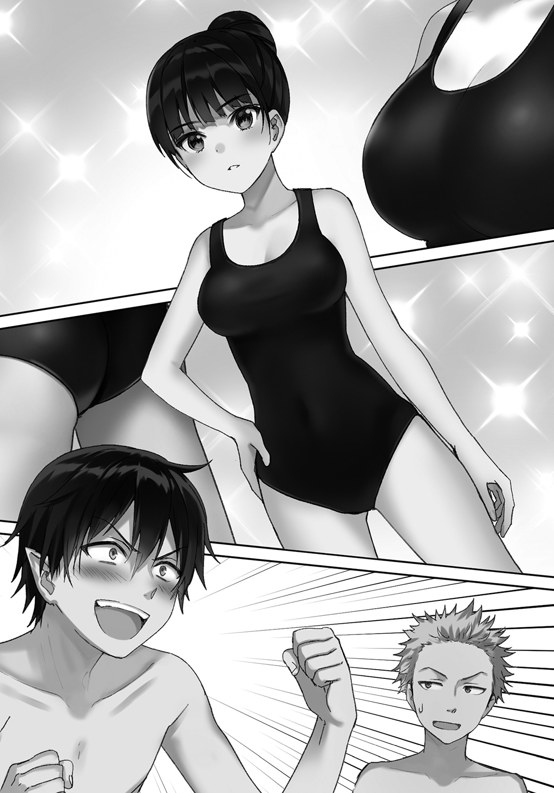
我らが担任女教師、福吉先生の魔法技の授業が。
「授業を始めます、集合してください」
笛を吹いてプールサイドの一カ所に集合をかける福吉先生はパーカーに短パンといった格好だった。
パーカーを内側から押し退けるあの大きな胸だけじゃない、露出した太股にまで目が行ってしまう......あのパーカーの下はどうなっているのかしら、期待で胸が膨らむよ。
だがもちろん、目が行くのは福吉先生だけにじゃない。
「.........」
女子たちが人類の宝、スクール水着を装着しているのだ！ 本物のＪＫのスクール水着姿！ ムハーッ！
（生きててよかった、ホントに......）
「なっ田上っち」
「なんの振りだよそれは」
「ふふ、喜びを分かち合うっていいな」
「だから、なんの話だよ」
「田上っちはなんとも思わないのか......!? あの光り輝く女子たちの姿を目の当たりにしても......！」
「いや、俺スクール水着はあんまりグッとこないな。ビキニとかなら話は違うけど」
「この変態がっ!!」
「でかい声出すなアホ！」
「真代くんと田上くん、今は先生が話しているから、静かにしててくださいね？」
「申し訳ありませんでした」
「「土下座」」
田上っちと福吉先生のハモりツッコミが炸裂。いいね、福吉先生のあの驚いた顔、心にくるものがあるよ。
それからは一通り話が終わるまで口を一切開かずに福吉先生に全神経を集中する。
（うぅ、すごい見てる......真面目で素直なのはいいことだけど、血走った目で正座しながら見られるのは居心地が悪いよぉ）
「え、えー......という流れで今日の授業は進めていきます。では二人一組になって準備運動、その後に魔力体の受け渡しをしてください」
福吉先生の説明が終わり、各自ペアを組むために動き出した。
「俺のペアはモチのロンで田上っち!!」
「気持ち悪いから抱きつくなテメー!!」
「あぶふッ！ イタタ、ナイスアッパー」
「扇、お前もしかしてゲイなのか？」
「何をバカな――俺は女体にしか興味はないぞッ!!」
「せめて『女』って言えよ！」
準備運動は入念に。ケガをして福吉先生に余計な心配をかけるわけにはいかないからね。
その最中にふと気になったのは、俺に刺さる視線とひそひそ話だ。
聞こえるのは俺の体の傷だ。急所は避けたが深いこの傷は魔力で治せないし、回復の早い俺でも完全に消せない。そんな傷なんだから目立つのは仕方ないことだが、やはり注目されてしまっている。
「何見てるのよエッチ！ 見せ物じゃないんだからね!?」
俺がそう言うと、若干引いた顔をしながら目を逸らしていく生徒たち。でもやっぱり気になるようで、少ししたらまた視線が集まってくる。
ヤダなー、何かして隠しておくべきだったかなーこれ。
「適当なこと言ってやれば納得すんじゃねーの？ 噓でもどういう経緯でそうなったのかを聞けば気にしなくなるかもしれねーぜ」
田上っちの小声でのアドバイスを受け、少し考えてみる。
（...............）
俺は体を生徒たちに向けて立つと、何事かとこちらに視線を集めてくる。
「みんな、俺の体の傷が気になるみたいだから言うけど」
自分の傷跡を指差し、真剣な顔を作って口を開く。
「これは、お母さんにやられたんだっ!!」
「噓の内容暗過ぎだろ!?」
「怒ったお母さんに包丁で斬られたんだ、ズバーッと！」
「膨らますなそのクソ適当な話を！」
「なんだよ田上っち！ 適当なことを言えば納得するって言ったじゃないか！」
「適当にしては暗いだろ普通にドン引く内容だぞあれ！ もっと他になかったのかよ!?」
「リアリティーは必要かと思って」
「求め過ぎたらダメだから！ 適度ってのがあるから！」
「じゃあお兄ちゃん？」
「変わらねぇよっ!!」
田上っちとそんなやり取りをしていると、周りから多くの笑い声が耳に届いた。俺は首を傾げ、田上っちは額に手をやる。
「あー......とにかく、こいつの傷に関しては聞かないでやってくれ」
田上っちの言葉を聞き入れてくれたようで、それからは俺の傷に向けられる視線がかなり減った。
ありがたい、これで思う存分スク水を堪能.........授業に集中できるな！
体をしっかりと解してから、福吉先生の指示通り魔力のキャッチボールをプールサイドにて行う。
やけに広いプールサイドでぶつからないように広がり、いくつもの魔力の塊があちこちに飛び交っている。そのうちの一つを放りながら、
「今日はどんな授業なのかな、プールだから水を使ったりするんだろうなーやっぱり」
授業内容にワクワクしながらそんな言葉を口にする。
だってプールだよ？ 水着だよ？ まったく想像がつかないよ！ 一体何をするのかしら!?
「どんな授業って、さっき言ってただろうが。お前福吉の話聞いてなか――」
「『先生』をつけろ田上っち、ブッ飛ばすぞ」
「なんで急にそんな迫力出すの!? わ、悪かったよ睨むな、福吉先生の話、聞いてなかったのか？」
「あー、福吉先生の胸に集中しすぎて半分くらいしか聞けてないんだよ実は。テヘッ♪」
「気持ち悪い。ブッ飛ばすぞ」
コツンと頭を叩いてペロッと舌を出したら田上っちからブッ飛ばす宣言された。さっきの仕返しかな？
田上っちに言い返すついでに魔力体を投げようとした、その時だった。
「真代くんっ!!」
「のわっ!?」
突如背後から聞こえた福吉先生の声に驚いて手が滑り、魔力体を明後日の方向へと投げてしまった。やばい悪送球だ！
誰もいない方向か、はたまた悪送球が山なりならば声をかけて注意を促すだけでよかったかもしれない。
だが残念なことに魔力体はストレートで、しかも進む先にはスクール水着姿の女生徒がいた。
......スクール水着.........。
「スクール水着いッッ......」
ズバチィッ!! と右腕周辺に迸る黒い魔力を掌に集めて球体を作り出し、飛んでいく魔力の塊へ腕を伸ばす。
―――しかし。
「......おっ？」
突如出現した巨大な手が魔力体を摑み取ったのだ。その手は無色透明。形成されているものはプールの水だ。
そして、それを使役するのは、
「ふ～......」
気の抜けたため息をつく、福吉先生だった。
福吉先生は「えいっ」と魔力体を水の腕で握り潰し、水の腕の〝付け根〟であるプールへとただの水にして戻した。
（知ってたけど、やっぱり福吉先生は水系魔法が得意なんだなぁ。美しい......とかは置いといても、福吉先生結構強いかもしれないな）
それは、魔王である俺ですら察知出来ないほどに速い発動速度を元にしての考察だ。.........って、俺今超弱ってるんだ。アテにならんな。
掌に集まった黒魔法を消去させて福吉先生に向き直り、
「すみません、ありがとうございました先生」
「も、元を正せば私のせいでもあるから......それと！ 私は先生なんです、あまり変な目で見ちゃダメよ!?」
「絶賛思春期でして、えへへ」
「もう......それと、黒魔法はなるべく控えるようにと言ったよね？」
「うっ......すみません」
咄嗟に出してしまうなぁ、もう癖みたいになってしまっている。これからしばらく人間社会で生きていくならこの癖は修正しておかないとまずいかもしれない。
（黒魔法の使用と、福吉先生のおっぱいをなるべく見ないこと。前者はなんとかしなくちゃいけないな、後者は無理だけど）
「えー......では次に移りましょうか。各クラスに分かれてプールの正面に移動してください」
四組と六組で二五メートルプールの反対側に集まる。福吉先生は拡声器を手に持ち、全員に聞こえるようにして言葉を発する。
『ではこれより、魔力を使った物体の操作を行います。対象物はプールの水で、量などは問いません。自分が出来る限りの量を浮かせ、私がいいと言うまで維持してください』
魔力単体での物体操作......魔法に変換せずに体内から魔力そのものを出してコントロールするのが目的かな？
固形の物体ならばかなり楽だが、水となるとレベルが跳ね上がる。『魔力で掬う』なんてのは結構難易度あると思うんだが、みんな出来るんだろうか。
「いきなりこれかよ......」
「うっわ俺無理だわぁ」
「私これ苦手なんだよねぇ」
「私もー」
......みんながみんな出来るみたいじゃなさそうだな。
周りからの嫌そうな言葉を耳にしながらつい苦笑いを浮かべる俺。しかし福吉先生はそんな言葉など気にすることなく授業を進めていく。
八コースあるプールにはコースロープというものはないので区切られていない。そのプールを挟むように、競泳の大会とかで使われる若干傾斜したスタート台の上に上がり八×二の十六人がプールを挟んで向き合う。
『それでは、始め！』
先生の合図で十六人が一斉に手をプールへ伸ばす。途端に静かだった水面が波打ち、プールの水が空中に浮かび上がった。
速い人もいれば遅い人もいる。遅い人はみんな例外なく浮かせること自体が苦手で、なんとかしようと必死に魔力を操作している。
それにしても......、
（見るに堪えないなぁ......）
「ねぇ刀野さん」
「なんだ？」
「この水を浮かばせる方法、みんな苦手っぽいけど先生にはコツとかを聞いたりしてないの？」
「当然みんな説明は最初に受けているよ。だがやはり合う合わないがあるからな、苦手な人はとことん苦手みたいなんだ。コツといっても、これは感覚で覚えるようなものだし」
感覚って......。
刀野さんの言葉を聞く限りじゃ、ろくに操作方法を知らないみたいだ。
感覚で覚えるなんて、何かのきっかけを摑まない限り不可能だ。それをやれと言うのは些か厳しすぎますよ福吉先生。
「お粗末すぎる......仕方ない」
「真代？」
プールのスタート台に上がり、なんとか浮かせようと奮闘するもまったく浮かべられない同じクラスの女子に歩み寄る。
ただ一人浮かべられず、しかし後ろから仲のいい友達に応援されながらも頑張っている。
出来なくても諦めない。一生懸命頑張り、それを一生懸命応援する......素晴らしき友情だなぁ！ おじさん泣いちゃいそうだ！
そんな可愛らしい女の子のお尻......姿を見つめながら、スタート台を乗せた、プールサイドよりも高いコンクリート製の台に登る。
「えっ、真代くんっ？」
「そんな操作じゃ浮かべられないよ、いくら魔力を増やしてもね」
突然横に現れた俺に驚いているようだが気にせずに、女子の正面の水を指差す。
「キミの魔力は水を掬おうとしてるけど操作が不充分で穴だらけだ。それじゃあ水は全部流れ落ちちゃうよ」
「え......じ、じゃあ、どうしたらいいの？」
「魔力そのものをただ操作してもダメ、大事なのはイメージだ。魔法と同じだよ、水を掬おうと思ったら何を使う？」
「何って......桶？」
「じゃあ桶を頭の中でイメージして、魔力を放射しようか。ただし放射先はプールの中にだ」
「イメージ......」
「イメージで魔力を操作。ただし〝固めないこと〟。〝固めると形になるからね〟」
俺の言葉を反復するように呟きながら魔力を放ち、プールへ注ぎ、操作する。
「あとは、上げるだけだ」
そして、女の子の正面にバケツ一杯分の水が目の高さにまで浮かび上がった。
「う、うわぁ......!?」
「要領はそんな感じだよ。今回は魔力が多くて水の量が少なかったから重さは感じなかっただろうけど、魔力量と物体の重さが釣り合わないと頭に負担がかかるから、そのあたりは気をつけてね？」
台から降り、感謝の言葉をかけてくる女の子に手を振る。
感謝の言葉なんていらないよ、俺がただやりたかったからやっただけなんだから。
それに。
至近距離で真横からおっぱい見れたしねっ!!
俺は満足感に浸りながら元いた刀野さんの横へ戻ると、刀野さんが微笑みながら、
「的確なアドバイスだったな、聞いていた私もためになったよ。ありがとう」
「それはよかった」
「おい真代！ 俺にも教えてくれよコツ！」
「私にも！ 私にも教えて真代くん！」
「な、なんだ？？」
いきなり押し寄せてきたクラスメイトたちに目を白黒させて一歩後ずさってしまう。
教えてくれって......さっきの聞いてなかったのか？ 一応みんなにも聞こえるように言ったんだけどなぁ......。
「......ハァ、わかった、教えるよ」
『やったー！』
「ただし女子優先だッ！ レディーファースト！ スク水女子第一！ 野郎は後回しだ!!」
「なんだよそれ！ ふざけんなよ真代ー！」
「へー！ 可愛いは正義なんだよ！」
「俺たちだってスク水だぞ！ それに俺のくびれはそこいらの女子にも負けないくらいに美しいし!!」
「やかましいーッ!! 埋めたろかムキムキ逆三角オラーッ!!」
『四組静かにしなさい!! 授業中です!!』
「申し訳ありませんでしたーッ!!」
『『土下座早ッ!?』』
女子優先!! ......と豪語してはいたがそんなことはなく、男子も男子でわからないって言ったらすぐに教えてあげるあたり、ちゃんと男女平等が出来ている。
フフン、何せ初めてのクラスメイトだからな。男子だからって疎かになんてしない、男友達との愉快なやり取りも青春って感じがするし、大事にしないと。
「―――で、結局俺が最後かよ......」
何故かスタート台に上がってるの俺だけだし......つか六組は全員終わってるのか？ え、俺だけとか普通に恥ずかしいんだけど。
『真代くん、準備はいい？』
福吉先生に手を上げていつでもいいと答える。
（まぁ浮かせるだけだし、さっさとやって終わろう）
『では.........始めっ！』
ドバンッッ と、福吉先生の合図に合わせ、プールの水を大量に弾き出して塊にして空中で留める。
弱体化しているとはいえ魔王。こんなのは朝飯前なのである。
（は、速い!? それも手を使わずに、体から放出した魔力を簡単に扱っている......！）
「うわ、爪すげー伸びてる。そろそろ切らなきゃ凶器になっちゃうなぁ」
（しかも、全然余裕そうに......。黒魔法も使えるし、真代くん、あなた一体.........）
......!? 福吉先生に変な目で見られている!? あれッ俺なんかした!? もしかして何か間違ったのか、普通にやっただけなんだけど、あれれ!?
一人あわあわ言っていたが、結局福吉先生は何も言うことなく、水の浮遊を終わらせる指示が出た。
「なーんだ、黒魔法使うかと思ったけど使わなかったなぁ」
「がっかりだなー」
俺が使わないように言われてるのを知っておきながら馬鹿げたことを言うクラス男子たちに、浮かせた水を少量操作して頭上から落とした。
ザバーッと塩素入りゲリラ豪雨に襲われたクラスメイトを指を差して笑ったあと、残りの水をプールに戻してスタート台から降りて福吉先生の次の指示を待つ。
「すごいな真代、魔力の操作方法をよく知っているだけあって操作がうまいな」
「そう？ ありがとう刀野さん」
「実力もあるだろう、もしかして真代も『勇者パーティー育成施設』に通っていたのか？」
「ケッ」
「!?」
「あー、ううん？ 俺は通ってないよ」
「そ、そうか」と若干口角をひきつらせている刀野さん。そういえば、刀野さんはその勇者パーティー育成施設とかに通ってたんだったか。
楽々と水を浮かせていたし、育成施設っていう名前がついてる通り魔法に関してちゃんと育成しているみたいだ。
......ん？ 確かその施設は勇者の仲間になるパーティーメンバーを作るために出来たんだよな。ということはもしかしたら、あと数年タイミングがズレてたりしたら刀野さんが魔界に来てたかもしれないのか......。
そう考えたら勇者どもが早めに攻めてきてよかったな。魔王が（死んでないけど）死んだおかげで育成施設はなくなったらしいし。
（こんな美少女が死地に送られなくてよかった......！）
「真代、何故涙ぐんでいるんだ...？」
「え？ ......あ、ああ、刀野さんの美しいスク水姿が見れてよかったなぁって」
「すまない、素直に気持ち悪いからやめてくれないか」
「ジョークッ！ ジョークだから刀野さん!!」
「つまり、私のスク水姿は美しくはないと？」
「それはジョークじゃない!!」
「そ、そこまで断言されると私も恥ずかしいが......ありがとう、さっきは気持ち悪いと言ったが、実はちょっと嬉しかった」
うわああああああ!! その笑顔は反則だよぉおおおおおおおおおおおおおぉ
今日は......今日はなんて素晴らしい日なんだ......！
これで福吉先生の水着姿も見れたら文句なしの記念日になるんだが、先生が水着姿になるなんて学校の授業じゃあり得ないしねぇ。マンガとかじゃないんだから。
『ではみなさん準備をしてください』
「!?」
えっ！ ヤバい全然聞いてなかったっ！
「と、刀野さん、福吉先生はなんと言ってたの!? 準備って!?」
「プールに入る準備だ。次はプールの中に入ってやることだからな」
ほおっ、ついにプールの中に!?
次々とプールに飛び込んでいく生徒たちに続き、俺と刀野さんもプールへ入る。深さは胸下くらい、普通の学校のプールでこれが浅いか深いかわからないが.........。
「はーっ。気持ちいいな、真代」
おっぱいがっ......なんだかおっぱいがえっちでっ......眼球が吸い寄せられるぅっ!!
なるべく見ないようにプール中央付近に集まる。どうやら四組と六組は別々で、先に四組が入り六組はプールサイドで待機みたいだ。
「何するのかなっ」
「.........うむ、もしかしてだが、これは......」
刀野さんが何かを言う前に、
『私が合図したら、一斉にプールから上がってください』
「は？」
え、今入ったばかりなのに？ と首を傾げる俺の耳に、福吉先生の続きの言葉が届く。
『時間は五分です。それまでにプールサイドに上がること、いいですね？』
――プール全周を囲うように、福吉先生の手から放たれた大量の水。
変化が起きたのは、その水が全周を駆け抜け終えたその直後だった。
長方形のプール、その四辺にまるで阻むように巨大な水の腕がプールから大量に伸びたのだ。
福吉先生の水は壁のように立ち上り、腕の奥のプールサイドに固定化される。
（プールから上がる......時間は五分以内......なるほど、福吉先生の授業はなんて楽しいんだろうか）
つまり、あの水の腕をかわして上がれということ。簡単だが簡単じゃなさそうだな。
『一番に上がれた人には、先生からご褒美があるので頑張ってくださいね？』
.................................ご褒美......だと......？？？？
『私が合図したら、一斉にプールサイドを目指してください。水の腕は魔法で破壊してもいいように外側に水の壁を作っていますので、全力で上がってきてください』
福吉先生のご褒美......福吉先生からのご褒美って......。
『ではいきます、よ～い...』
なんだか......とてつもなく〝すごい〟イメージしか湧かないんですけどぉおおおおおっっっ
『スタート!!』
ドッッボバァア と一度沈んで脚力を溜め、俺は一気に解放して頭からロケットの如く水から飛び出した。
水の腕なんぞ知らん......俺の頭にあるのは福吉先生のご褒美のみ!! 行く手を阻む奴など粉々にしてくれるわァッ!!
「うおッらァァあああああああああああああああッッ！！！！」
全力で握り込んだ右の拳。それを思いっきり振りかぶり、指を広げて待ち構える巨大な柱のような逞しい水の腕へと一直線に突っ込んでいく。
そして。
全身全霊の一撃を、摑みかかってきた水の掌ど真ん中へ叩き込むッ!!
ドパァンッッ と弾け、掌にバスケットボールほどの風穴を開けた。
そこへ頭から突っ込み、腕の向こうへ行こうとするが、
「ぬお!?」
あとちょっとのところで指にではなく水そのものに腰周りを摑まれ、もがく間もなくプールへ投げ込まれてしまった。
「んばはっ！ .........んんんッ!!」
しかし!! 一度や二度で諦める俺様ではないわァ
「水の分際でぇえッ」
再び勢いよく水中から飛び出し、今度は全力の回し蹴りを放つ。切り裂くように水の腕を手首から分断し、今度こそと意気込む―――が、
「ぶばっ！」
手首から噴出した水に阻まれ、その隙に再生した腕にはたき落とされてしまう。
（福吉先生、なかなかに厳しい課題を出したな......あの水を抜けるのは結構難しい............なあんて言ってられるかァア）
魔王はめげたりしない！ ご褒美がある限り!!
「ンガアアアアアアアアアアッ!! 次こそはァ!!」
「ま、真代！ 魔法を使ってもいいんだから肉弾戦で挑まなくても――」
「べぶっ！」
それから五回ほど、休む間もなく飛び魚の如く水からのロケットアタックを試みるもゴミのように投げ捨てられてしまう。
四辺あるプールサイドの全てに突撃し、全て失敗。
だがわかったこともある。
（水の腕全てを福吉先生が操作しているんじゃない。四辺のうち、福吉先生がいるプールサイド側以外の腕たちは独自で判断するようプログラムされた『遠隔操作魔法』が使われている）
理由としては、俺のアタックに対し先生側の腕と比べて反応が速いこと。あとは接近物の妨害行動の違い、それに損傷時の高速再生くらいか。
（さすがの福吉先生も、この数の腕を全部操作するのは厳しいってことかな。でも、そうなると唯一の穴は......）
水中から顔を出し、水の腕、そして後ろの壁の向こう側にいる福吉先生の美しい姿を目に捉える。
.........ちなみに、どういう訳か四組のみんなはプールサイドを目指さずに俺が奮闘する様を見ていた。みんなは福吉先生のご褒美が欲しくないのだろうか？
だったら俺が貰っちゃうもんね！
右手を上げ、水面を叩く。
すると、手の真下にある波打っていた水が一瞬でピタリと止まり、右手を水につけたまま真上に飛び上がって全身をプールから引き摺り出した。
足が水面に触れる。
しかし、沈まない。
つまりは、
「よーし、次で決めてやるぞ」
水の上に立ち、不敵に笑いながら口を開く。ざわつく周囲など気にせず、姿勢を低くし足に力を籠める。
今度は水の中からではない、なんの抵抗も受けない水の上だ。これならさらに動ける。
水の向こう側にいる福吉先生と目が合う。驚いているのか丸くした目もまた可愛い。
そんな先生にニコッと笑ってみせる。
直後、足元にあった水を豪快に撒き散らして全力で駆け出し、右拳を固めて後ろへ大きく引く。
距離を詰め、射程距離へ飛び込み両足でしっかりと水を踏み締め、ダッシュの勢いも殺さないままに振りかぶった右を渾身で叩き付けるように打ち放つ。
―――さっきまでは飛んだ勢いに乗せたパンチだったけど...〝地〟に足をしっかりつけたパンチの方が、当然破壊力はある。
降り下ろされる水の腕に、拳が接触する。
ゴパァァアッッ と、水の腕が飛沫となって砕け散る。忽ち元通りになろうと残った水が蠢くが、そんなものをわざわざ待ったりはしない。
パンチの勢いを殺し切る前に身を翻してジャンプし、空中に舞う飛沫の中を一気に突き抜ける。
着地先は水ではなく、固い地面。
つまりプールサイド。
「イエーイ！ 一着ーっ!!」
俺を見ていた四組全員は啞然としたまま、まだプールの中。つまり福吉先生のご褒美を貰えるのはこの俺だけ!!
高笑いしながら水の壁を飛び越え、福吉先生の前に降り立つ。先生も先生でポカンとしたまま目を点にして俺を見ていた。もっと言えば六組の生徒たちもだ。
「一番は俺！ 福吉先生ご褒美は!? ご褒美はなんですか!?」
もう興奮しっぱなし。テンションは上がる一方である。
そんな俺の言葉にハッと我に返った福吉先生は、
「あ、はっはい、ご褒美ね。ご褒美は......はいどうぞ、真代くん」
パーカーのポケットから取り出して手渡されたのは、掌に収まるほどに小さなもの。
「............」
――それは、新品の消しゴムだった。
「それを使って、たくさん勉強してね？」
ニッコリ微笑む福吉先生は気づいていない。
消しゴムを握り締めて体を震わせる俺は、抑えきれずにこう口を開いてしまう。
「ええええええええええええええええええええ おっぱいはあああああああああああああああああああああああああああ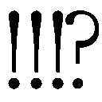」
............その後、福吉先生に正座させられガチのお説教を受けました。
第Ⅵ章 勇者パーティー初対面
「おい、いい加減落ち込むのやめろよ扇」
「消しゴムだっていいじゃないか。ただで貰えたんだから」
「だって...だって...」
授業が全て終わり、生徒たちは自由になる。面倒な授業から解放され、あとは好きにできるとなると普通なら浮かれてしまうものなんだろうけど、しかし俺は違った。
「だってっ、ご褒美って言われたら想像しちゃうじゃん！ 福吉先生のご褒美なんてもうあっち方面しか思い浮かばないじゃん！」
「...... まぁ、わからなくもないが......」
「わかるのか、気持ち悪いな田上も」
「田上っち気持ち悪ーいっ」
「ぶちのめすぞ扇テメー......ッ」
握り拳を固める田上っちを冗談だと宥め、上履きから運動靴に履き替えて校舎を出る。
「せっかくだから、三人でどこか寄っていこうよ！ 俺腹減った！」
「俺は構わねぇが」
「刀野さんは？」
「私も構わないよ、予定は特にないからな」
やったー！ 女の子と下校＆寄り道だー！
「どこ行こっか！ 何食べよっか！」
「元気出たなこいつ」
「真代は結構単純なところがあるからな」
さてどこに行こうか。そういえばこの前シュリンと出掛けた時に新しく出来たたこ焼き屋があったなぁ......。
......ああ、シュリンと出掛けたといっても、あいつはカバンの中に入ったままで外には出ない。出たらその場がパニックになってしまうからね。
「二人とも、たこ焼きとかどう？ この前見つけたんだ、新しく出来たお店が」
「扇の奢りならいいぜ」
「本当か？ ありがとう真代、ごちそうになるよ」
「えっ!? ちょっと待ってよ田上っち冗談でしょ？ ていうか刀野さんも何便乗しちゃってるの？」
「まぁ冗談だけどな」
「ふふ、私も冗談だ。自分の分くらい自分で出す」
「もー、二人ともお茶目なんだからー」
愉快に笑う二人を見てこっちまで釣られて笑ってしまう。
ヤベー、これ今マジで『青春』って感じだなぁ。漫画とかであるごく普通の日常だけど、実際に体験してみたらすごく楽しい。
大人になって「あの時は楽しかったなー」なんてぼやいてしまうのも、これなら頷ける。俺今、青春をスゲー満喫しちゃってる！
「じゃあ、たこ焼き食べに行くってことでいい？」
「遠くないならそこでいいぞ」
「私もいいよ」
「よーっし！ それじゃあ三人仲良くたこ焼きを食べに行こー！」
「いちいちそういうことを言うな恥ずかしい」
「何言ってんだよ田上っち、俺たちは親友だろ!? 心の友じゃないか！」
「いつ親友になったんだよ」
「違う、のか......？」
「マジでへこむなよ............ああ、はいはいそーですね、親友ですね。ったく、恥ずかしいな......」
「親友！」
「抱きつくな気色悪いっ!!」
「ハハハ」
そんな感じで、人目も気にせず田上っちとじゃれあっていた―――その時だった。
まったく突然。
ビリッ、と。
俺の首筋辺りに、妙な悪寒にも似た得体の知れない何かが駆け抜けたのは。
「......あ？ どうした、扇？」
「真代？」
田上っちから離れ、即座に振り返る。田上っちと刀野さんが眉を寄せているが、返事はしなかった。
意識と視線が一点へ注がれる。
校舎の入り口。生徒たちが下校のため中から出てくるその場所から、俺は目が離せなかった。
（......なんだ、何かが出てくる？ .........まさか）
俺の第六感的な何かがそれを察知し、警鐘を鳴らしている。
しかし直後に、その何かが魔力として感じられた。
ズ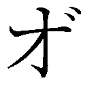ォッ......!! と校舎の入り口から噴き出してくる。まだ出所も視認出来ていないのに、凄まじい魔力を俺の全身が感じ取る。
「おっと、まさかのお出ましか......！」
「久々に感じたがこの巨大な魔力、間違いないな......」
田上っちも刀野さんも感じ取っているようだ。そして、この魔力が誰のものなのかも知っているらしい。
確認など取らない。だって訊かなくたって、俺もわかっているんだから。
これほどの魔力を有する奴なんて、この学校には一人しかいない......。
「......いきなりのご対面だな」
校舎の出入り口からゆっくりと出てくる。
それは一つの群れだった。そして、その先頭を悠々とした態度で歩いているのが、この周囲を埋め尽くす魔力の持ち主。
赤い髪の長身の男。
チャラチャラしたアクセサリーをあちこちに付け、制服を着崩した厳つい雰囲気がある男子生徒だ。
取り巻きのような連中も同様に制服をちゃんと着ていない。校則違反上等って感じだな、見るからにわかる。
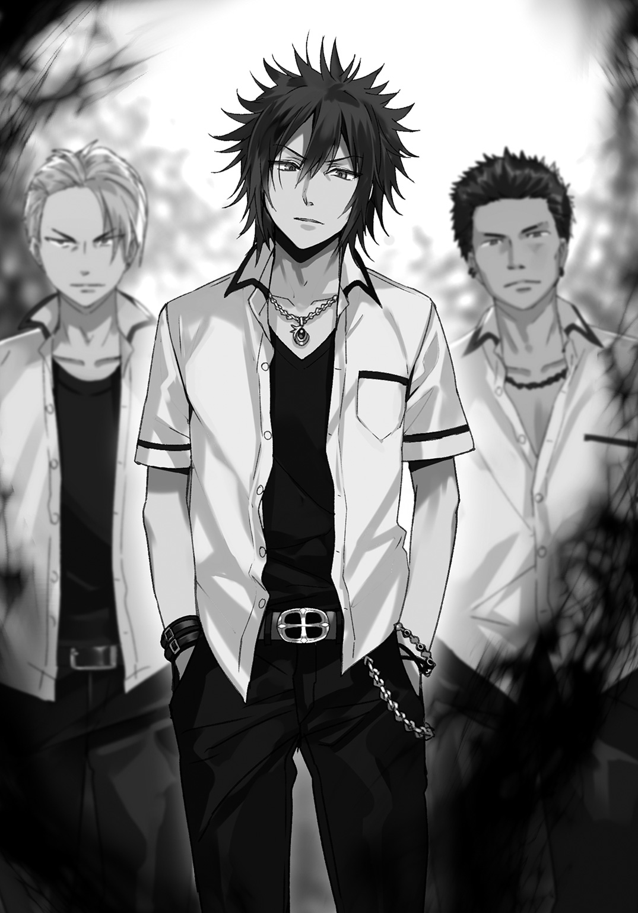
他の生徒たちはその男に気づくや否や道の端に寄ってジッとしてしまっている。まるで道を譲るように。
堂々と我が物顔で歩く連中。ヤンキーって感じのそいつらはスマホを弄ったりでかい声で下らないことを喋ったりと、声だけじゃなく明らかに態度がでかい。
「私たちも端に寄ろう、面倒なことになる前に」
「チッ」
刀野さんの言葉に田上っちは舌打ちするも従い、他の生徒たちと同じように道の端へと歩いていく。
「何してるんだ真代、キミも早く――」
刀野さんの言葉を手を上げて制止し、こっちへ真っ直ぐ歩いてくるその群れを突っ立ったまま見据える。
正確には群れではなく、群れの先頭を歩く赤い髪の男だけを。
「......ん？」
赤い髪の男が俺に気づき立ち止まる。合わせるように取り巻き連中も歩みを止め、俺へと目を向けてくる。
それでも俺の目には赤い髪の男しか映らず、そいつにこう口を開く。
「この学校にいるただ一人の勇者パーティーってのは、お前だな？」
その質問に反応したのは赤い髪の男ではなく、取り巻きの一人である男だった。
ガタイのいい老け顔のそいつはズカズカと歩み寄ってきて、
「おいガキ」
ズイッと凄んだ顔を近付けてガンを飛ばし、低い声で俺を見下ろしてくる。
「誰にタメ口利いてんだゴラ、殺されてぇのか？」
「金魚のうんこに用はないからどけ。あと息臭いから顔近付けんな」
一歩離れてからそいつの横を通り、赤頭の前へ移動。俺よりも身長が高いそいつを見上げ、顔を真っ直ぐ見る。そいつもそいつで俺を見つめ返しながら、不意に唇を開いた。
「――――ん？」
視線が右へと流れた。見えたのは茶色い壁......いや、これは、巨大なハンマーかな？ 俺の上半身くらい軽くぶっ叩けるほどの大きさの。
「おいマジか――」
大気の唸る音を鼓膜に叩き込まれながら呑気に呟く。
ドガァンッッ とぶち当たり、俺の体は勇者パーティーの正面からグラウンドへと真横に弾き飛ばされた。
何度かバウンドしながら転がされるが両足を地面に付けてストップをかける。
これから部活をやろうとしていた生徒たちの邪魔をしちゃったではないか......。
（あのオッサンか）
俺の後ろにいた老け顔の男子生徒は巨大なハンマーを肩に担いでこちらを睥睨している。
脳内でイメージしたものを魔力で形成し具現化する技法、【顕現魔装】。あのオッサン野郎のは土属性の魔力で形成したハンマーみたいだな。
「いきなりやってくれやがる......」
頭をガードしていた右手を軽く振って立ち上がろうとする。が、その時だ。
「おいオッサン」
俺とオッサン男子の間に割って入ったのは、田上っち。
「俺のダチに何してんだ、テメェ......!!」
彼の手にあるのは、薄い水色の西洋の剣を模した【顕現魔装】。両刃の剣先をオッサン男子に向け、怒気の籠った言葉を吐き出した。
「田上か、お前も相変わらず生意気でムカつく野郎だな。口の利き方を知らねぇならお前も潰すぞ？」
「利き方くらい知ってる、ただテメェみてぇな奴に使う価値はないってだけだ」
「殺されてぇのか」
「出来もしねぇのに粋がるなよクソ野郎」
まさに一触即発といった空気だ。刀野さんが田上っちを押さえようとしているが、頭にきて興奮状態の田上っちはまったく下がろうとしない。
しかし、
「やめろ、剛力」
短い、たったそれだけの言葉で田上っち同様興奮していたオッサン男子――剛力とかいう見た目に似合った名前をしたそいつは動きを止めた。
命令したのは勇者パーティーの赤頭。肩書きだけでも威圧感あるのに、雰囲気もすごいと確かに従ってしまいそうにはなるかもな。
「田上っち、抑えて抑えて。俺は大丈夫だから」
「扇......ホントに大丈夫なのか？」
「ギリギリ肉体強化が間に合ったからなんとかね。......お前も下がれよオッサン、用があるのはそこの勇者パーティーだけだ」
「あッ!? だから誰に口利いてんだっつってんだろガキがァ!!」
鬼のような形相で吠える剛力はハンマーでコンクリートの地面を叩き割る。
器物破損だーとか言ってやりたいが、もう相手をするのも面倒くさい。ああいう輩はちょっとしたことですぐ感情剝き出しで嚙みついてくるから嫌いだ。
だから。
「声がでかいんだよ、ゴリラ」
剛力の眼前に瞬く間に詰め寄り、引いた右の拳を顔面へ放つ―――が、すんでのところで頭を振ってかわされてしまった。
左頰に僅かに掠ったが、こっちは完璧に捉えたと思っていたのでいささか驚きを禁じ得ない。
「死ねクソガキィッッ」
大きなハンマーを横殴りに放ってきた剛力の意外な俊敏さに感心したのも、一瞬。
パチンッ、と足元で弾ける音が鳴り、その直後に真上へ大きく跳び上がる。
そこで、
（やっべ、咄嗟にまた黒魔法使っちゃったよ！）
福吉先生の言いつけを破ってしまい焦り、慌てて足に巻き付くように発生した黒い雷を消す。
一瞬だったからバレてないかな......と心配になる俺めがけ、勇者パーティーの取り巻きにいた二人の男女が突っ込んできた。
片や帽子を被った男子。もう一人は耳にいっぱいピアスをつけた金髪女子。
二人は白い棒状の【顕現魔装】を手に摑み、俺を挟むように振るう。それに対処すべく両手を上げようとする―――が、その前に。
ガギギィィン と固いもの同士が激突する甲高い音が二度連続した。
「しゃしゃり出てくんじゃねぇよ」
「ああ？ 先輩に向かって何言ってんだお前？」
一つは、帽子を被った男子の棒を水色の剣で受け止めた田上っち。
「暴力行為を黙って見逃すことは出来ないから、加勢させてもらう」
「邪魔だっつーの」
そしてもう一つは、金髪女子の棒を赤みを帯びた日本刀で切り裂いた刀野さんだ。
互いの得物をもう一度ぶつけ合い、その衝撃で離れた場所に落下する四人。
そして、俺の着地ポイントには、ハンマーを振りかぶった剛力オジサンが待っていた。
（着地を狙うか、ていうかそれ振り下ろしたらまた道が潰れちゃうじゃんか......）
器物破損もお構いなし。最近の若い子はヤだねーホント。
「潰れろやボケェッ」
相手への配慮などない。剛力は巨大ハンマーを容赦なしに振り下ろしてきた。
頭上から落ちてくるハンマーを真っ直ぐ見据え、俺は全身から魔力を放出しハンマーに直接ぶち当てる。
ただそれだけ。
直後、音もなく。
一瞬にして、剛力の持つ【顕現魔装】を漆黒に染め上げた。
そこへ拳を突き上げながら、ぽつり。
「【ブラックユーモア】」
ただ拳を上げただけで、力は必要なかった。
真っ黒になった【顕現魔装】のハンマーと拳が接触。それだけで、ハンマーは黒の破片となって俺を包むように粉々に砕け散った。
「............な......」
赤髪男の取り巻きだけではない、田上っちや刀野さん、周囲で目撃した生徒たちは例外なく啞然としていた。
俺は硬直しているオッサン男子の横を通り、再び赤髪男の正面へと立つ。
赤髪男も、目を見開いたまま固まっている。こいつも勇者パーティーだったんなら黒魔法くらい見たことあるだろ......と思いながら、俺はそいつへ適当な調子でこう尋ねる。
「お前、勇者パーティーなんだよな？」
「............あぁ、そうだ」
認めたな、まぁこれほどの魔力を持ってるんだから勇者パーティーじゃないと言われると、こっちも困るんだけど。
なら次に訊かなければならないことは、これだ。
「〝じゃあ、勇者が魔王と戦ってるところとかも見たのか？〟」
真っ直ぐ、目を見つめて尋ねる。赤髪男も俺の目を真っ直ぐ見返してくる。
少し間を空けて、奴は言った。
「〝ああ、見た〟」
はっきりと、肯定してみせた。
「............、そっか、ならいい。てっきり〝勇者パーティーに選ばれたからってただ偉ぶってるだけの人〟なのかと思ったからさ」
ピクッと、赤髪男の眉が片方震えた気がした。
周りでは取り巻き連中がやかましい。
「ナメたこと言ってんじゃねぇぞクソガキ!!」とか、「誰に向かって口利いてんだ!!」とか。予想通りっちゃ予想通りの反応だ。
「甲条さん！ そんなナメ腐ったガキぶっ飛ばしてやってくださいッ!!」
剛力が後ろで鋭く吠えた。おいおい仮にも勇者パーティーにいた人間だぞ？ ただの一般人（魔王）に危害を加えるようなことはしないだろ。
「......ん？」
勇者パーティーは右手の中指を親指に引っかけ、俺の顔の前まで持ってきた。
それはデコピンの形だ。
眉を寄せ、頭の中にクエスチョンを浮かべた―――直後。
ッドバァン という鈍い音が響く。
頭にあったクエスチョンが、意識共々吹き飛んだ。
〇
「まったく......何を考えているんだ。勇者パーティーのあの人に喧嘩を売るなんて」
「むー......」
翌日、机に両腕をダラ～ンと投げ出していた不機嫌ですよオーラ全開な俺の正面で、刀野さんは腕組みしながら呆れたような物言いをする。
「別に喧嘩なんか売る気はなかったよ。ただちょっと話そうと思っただけさ」
「あれはどう見ても喧嘩を売っていたよ。それに、そこら中で噂になっているんだぞ？ 『黒魔法を使う人間が勇者パーティーに喧嘩を吹っかけた』とな」
「あんまり目立ちたくないんだけど、黒魔法使っちゃったし......まぁ噂になっちゃったんなら仕方ないか」
現在昼休み、俺の額にはガーゼが貼られている。当然原因は昨日のあの赤毛野郎のデコピンだ。
「あの魔王を倒した勇者の仲間だから話してみたいという気持ちはわからなくもないが、いきなりあの態度はいくらなんでも無礼だぞ真代。ただの先輩じゃないんだから」
「刀野さんまでヘコヘコしてるの？ たかが勇者パーティーの一員だからってそんな気ぃ遣うことないじゃん」
「何？」
「第一魔王と戦って倒したのは勇者一人で他の奴らなんか何してたか知らないし」
「......な、何を言ってるんだ？ 魔王は勇者とその仲間たちが力を合わせて倒したと勇者本人が言っていたじゃないか」
――これが、世間一般の常識と化してしまった偽りの真実ってヤツだ。
「.........あ、そうだっけ？ 勇者が全部やったと思ってたよ」
勇者は〝みんなで成し遂げた〟ということにしたかったからそんなことを言ったんだろうが、実際は魔王である俺と戦ったのは勇者一人だけだ。
仲間の連中も何人か顔は見たが、少なくとも、『あの戦いの中』には俺と勇者しか間違いなくいなかった。
そう、つまりだ。俺は知らないのだ。勇者パーティーだったあの赤毛野郎のことなど見たこともないのである。
（〝肩書き〟振りかざしてリア充生活だと？ ......ふざけやがってあのチャラ男が!!）
もはや歯軋りものである。
だってこれじゃあ俺の死をダシに使われているようなものなんだから。
絶対仕返ししてやる......俺は密かにそんな野望を抱いていた。
昨日のことが噂になっているとなると目立ったことは出来そうにない。あまり目立ちすぎるのは好ましくないから、目立たずに効果的な仕返しを考えないといけない。
そこで思いついたのは、
「上履きを隠してやろう」
「ま、真代？」
陰湿ながら効果的。
上履きの次は教科書、体操服、椅子、机と時間をかけてじっくり攻め、奴を退学にまで追い込んでやる......!!
フッハハー！ 勇者パーティー、お前は魔王を敵に回したことを後悔するのだーッ!!
これは俺の問題だからもちろん俺だけでやる。刀野さんには迷惑をかけられないから内緒でひっそり動こう。
「......真代、何を考えているんだ？ まさかまだ勇者の仲間であるあの人に何かする気なのか？」
「なーんにもしないよ」
（.........なんだか怪しいな）
「じゃあ俺、ちょっと田上っちの所に行ってくるよ。昨日のお礼もしたいし」
「そうか、わかった。もう勇者パーティーにはちょっかいを出してはダメだぞ？」
「ハッハッハ」
「........................否定しなかったな、今」
一人何かを呟いた刀野さんを残し、俺はさっさと教室を出て六組へと足を運ぶ。
目指す場所は俺の教室の二つ隣である別の教室。そこは学年のエリートが集められている六組の教室だ。
他のクラスに入るのって妙な抵抗感があったりする。しかし俺はお構いなしにスライドドアに手をかけ、勢いよく開けてこんな言葉と共に中に飛び込んだ。
「田上っちゃーん」
「ごぶっ」
窓際の一番端に座ってストローでジュースを飲んでいた田上っちが何やら噎せているが気にしない方向でいこう。
「ゴホッゲホッ！ ......い、いきなりなんだよビックリすんだろうが」
「いやーちょっとお礼が言いたくてさ」
「は？」
田上っちの隣の席にドカッと腰かける。周りは何事かと驚きながら小声でなんか言ってる。気にしないしどうでもいいので俺はニッと田上っちに笑ってみせ、
「昨日はありがとね、保健室に運んでくれて」
「......そのことかよ、昨日何度も言ってたじゃねぇか」
「言い足りないくらいだよ、一方的に俺が始めて巻き込んだようなものなのに保健室まで運んで、しかも目が覚めるまで待っててくれたんだから」
「それは刀野も同じだろ」
「うん、だからいっぱいありがとうって言った。言い過ぎだって怒られちゃったけど」
田上っちは「だろうな」と言いながら笑う。
「お礼を言いに来ただけだから戻るね、たこ焼きはまた日を改めて行こう」
「わかった。あ、待て扇」
席を立ったところでストップをかけられ、何かと田上っちに顔を向ける。
「お前、もう勇者パーティーには関わらない方がいいぞ？」
「噂のこと？」
「ああ。俺も気に入らないが、いくらなんでも相手が悪すぎるからな」
「田上っちも勇者パーティー嫌いなんだね」
「いや、勇者パーティーの甲条さんは別に嫌いじゃねぇよ。嫌いなのはその周りの連中だ、自分が偉い訳でもないくせにでかい態度取りやがって」
忌々しげに吐き捨てる田上っちは頰杖をつき、窓の外を睨み下ろす。
「あんな連中相手にする必要ないよ。所詮はただの腰巾着なんだからさ」
あんな連中なんの脅威にもなりはしない。いたからといって、何がどうとなる訳ではないんだ。強い奴に擦り寄っていい気になってるような馬鹿はスルーするに限る。
「まぁ、早い話がそうなんだけどな」
「問題はあの赤頭だ。甲条......って言ったっけ？ 勇者パーティーだかなんだか知らないが、そんなんで調子こいてるあの腐れリア充を叩きのめさないと俺の気が収まらない」
「......マジで言ってんのか？ 相手は世界的に有名な英雄の一人だぞ？」
「知らないね。英雄だからってなんでも許される訳じゃない。だから俺が天誅を下すんだ！ 奴の上履きを消し去ってな！」
「叩きのめすって......そんなショボいやり方かよ」
「昨日のアレが噂になっちゃってるからねぇ。あんまり目立ちたくない俺の出来る仕返しなんて物を隠すくらいしかないんだよ」
「もっと他にあると思うんだが.........いや、俺もこれといって思いつかねぇけど......」
「他......他の仕返しかぁ......」拳を口元に置いて数秒唸りながら考えて、
「......じゃあ、あいつを物理的にブッ飛ばすとか？」
「はぁっ!?」
目を丸くして普段と違う甲高い声を発した田上っち。
「あんまり目立ちたくないけど、それであの腐れリア充をギャフンと言わせられるんならそれしかないかな......昨日のデコピンの借りもあるし」
「ちょちょっ......！ ちょっと待て扇！ お前正気か!? 相手はあの勇者パーティーだぞ！」
「ん？ だから？」
「こいつなんでこんなすました顔してんの......？ お前ホントに頭大丈夫か!? よく考えてモノ言えよ!?」
「確かに昔から思ったことが勝手に口から出ることはあるな、悪いクセだよアハハ」
「笑い事じゃねーよ...」
「んじゃあちょっと行ってくるよ。田上っちは巻き込みたくないからついてこなくていいからね」
「はっ？ おっおい待て扇！」
俺は呼び止める田上っちに手を振り、颯爽と六組の教室を飛び出した。
......あっ、そういやあの赤頭が何組なのか聞くの忘れてたな。まぁ探知したらいいだけだけど。
よしとりあえず、三年のいる校舎に行くとしましょうか。
昼休みの時間も限られている。ちゃっちゃと行って用事を済ませてしまおう。
「............〝巻き込みたくない〟って、どの口が言ってんだあいつは.....................っああ！ クソッ!! 覚えとけよバカ野郎」
〇
三年生がいるのは別校舎。そこは一年、二年のいる校舎とはまた違った雰囲気が満ちていて、『ここは最上級生のエリアだぞコノヤロー』みたいな空間になっているように感じた。つまりは威張り腐ったオーラが充満してるって感じだな。
当然、そんなオーラを出してる三年生だ。下級生がずかずかとテリトリーに踏み入ってきたら目ん玉光らせるわな。気にしないんだけど。
三年生も一年二年と同じくクラスは六組までで、多分仕組みも同じはずだ。あの膨大な魔力量ならどこにいるかは見当がつくんだが......、
（魔力探知に集中してるんだけどまったく感じられない、あの勇者パーティーの膨大な魔力が感じられないってのは......そこまで探知能力弱ってるのが原因か？）
すれ違う三年生の魔力は感じ取れるから探知は出来てる。けどなんだ、この妙な感覚......。
（まぁ探知出来なくてもいる場所はわかってるから、今は気にしないでおくか）
ジロジロと見てくる三年生の間を早足で抜けていき、お目当ての教室――三年六組へと到着する。
クラス分けの仕組みが変わらないんなら、魔力量の多い奴らはここに集められている。つまり勇者パーティーのあの赤頭も......。
俺はスライド式ドアを開けて中を見渡す――前に、自然と目に留まった。
あのド派手な赤い髪が。
「ビンゴだな」
ニッと笑い、俺は教室の中へと踏み込む。
一歩踏み込んだその直後だ。後ろから乱暴に肩を摑まれた。
「ハァ、ハァ......ホント、何考えてんだ、お前は......」
摑んでいたのは息を切らした田上っちだった。まさか来るとは思ってなかった俺は驚きの色を顔に浮かべながらも、
「どした田上っち？」
「どしたじゃねーよっ......！ 三年生だぞ、三年六組だぞここは......！ 何アホ面下げて入ってんだバカ......!!」
「アホ面とは失礼なことを言うなぁ田上っちは。俺はアホ面じゃないぞ絶対！ きっと！ 多分！ ............アホ面じゃないよね俺？」
「自信ねーのかよ」
ため息をつく田上っちを見ていると、ふいに周囲から魔力の反応を察知。感じ取った俺と田上っちはすぐさま周囲に顔を向ける。
教室にいる全員ってわけじゃないが、半分くらいの生徒がそれぞれの【顕現魔装】を出していた。その中には昨日見た取り巻きの連中の顔もちらほらとある。
その中から一人の生徒が歩み寄ってきた。巨大なハンマーを持った、剛力とかいう名前のオッサン男子だ。
厳つい顔で、額には血管が今にも切れそうなくらいピキピキと浮かび上がっていらっしゃる。
「ゴラァガキ共ォッ!! 調子に乗りやがってぇ、マジでグチャグチャにすんぞオラァッ!!」
「オッサン邪魔だ。用があるのはあの赤頭だ」
オッサンの横から覗き込むようにクラスの一番端である窓際最後列を見る。そこには勇者パーティーの赤頭、確か甲条とかいう奴が座っていた。そいつもまた、俺を真っ直ぐ見ている。
「昨日のお礼参りに来ましたよぉセンパイ。よくもデコピンしてくれたな」
ガーゼの貼られた額を親指で差す。あのデコピンのせいで気絶してしまい、田上っちと刀野さんに迷惑をかけてしまった。福吉先生にも余計な心配をかけさせてしまったしなぁ！
「......おい、お前」
すぐ近くから低い声が聞こえた。剛力の声だ。
「さっき、言ったよな......グチャグチャにすんぞってよぉ......！」
「田上っち、ちょっと下がってて」
血走らせた目を俺に向け、巨大ハンマーの柄を握り潰さんが如く握り締めて。
「潰れたトマトみたいにしてやるよォォッッ！！！！」
豪快な一撃を、真上から落とす。
トマトになんの恨みが......というのは置いといて。
「学習しろよ単細胞―――【ブラックユーモア】」
迫るハンマーへと俺の魔力をぶつける。瞬く間に漆黒に染まったそれに左の裏拳を叩き込み、真っ黒な塵にする。
昨日と同じ光景なのに驚愕して固まる間抜けなど、ただの邪魔でしかない。俺は右手を剛力の顔の前に翳し、
「邪魔だから、ちょっと闇でも見てろ」
続ける。
「【ブラックアウト】」
掌で、小さな黒い〝光〟が瞬く。たったそれだけで、剛力の意識は途絶した。
「おっと」
ぐらついた剛力の力の抜けた体を軽く押し、空いていた近くの椅子に腰かける形で倒す。後ろにいる田上っちも周りの三年六組の奴らも沈黙したままだ。
「俺が用あんのは勇者パーティーのあいつだけだ。言っとくけど俺軽くキレてるから、まだ邪魔すんなら――」
バヂッ、という音が右手から響く。黒い魔力を雷のように手の周りで弾けさせながら、
「――ここにいる全員、闇に落とすぞ？」
息を飲み、何人かが後退りする。もう邪魔しようとする奴はいないようで、俺は赤頭、甲条へと歩み寄る。
「さぁ選ばれし戦士サマ、いっちょお手柔らかにブッ飛ばさせてもらおうか」
「.........」
チャラチャラした格好で椅子にどっかりと座りやがって、なんだその態度は。まさかその態度で授業受けてんのか？ ナメすぎだろコンニャロー......。
「.........彼に」
「あ？」
「彼に、何をした？」
「あぁ、軽く昏睡してもらっただけだ。まぁ魔力の濃度もスッカスカだからすぐに目を覚ますだろうし、別に気にしなくていいぜリア充野郎」
今俺が使ったのは、精神系黒魔法。
俺考案の黒魔法【ブラックアウト】は、黒い光を目で見た相手の意識を強制的に失わせるという効果を持つ。
ただこの魔法の発動には、相手の視界を【ブラックアウト】で半分以上埋め尽くす必要がある。単純に光を見ただけでは効果は出ないのだ。
今の俺の魔力じゃ掌いっぱい分しか出せないから、相手の顔の真ん前でやらないと魔法の効果を与えられない。
ちなみに説明するならさっき使ったもう一つの黒魔法【ブラックユーモア】は、俺の魔力を魔力体にぶち当て、相手の魔法としての効果や役割を〝消滅〟させるものだ。
ただ効果対象は魔力で出来たものだけで、それ以外にはまったく効かないんだけどね。
「ではでは、勇者パーティーサマ」
ゴキリと首の骨を鳴らし、口角を僅かに上げて笑いながら唇を開く。
「伸びて先端が見えなくなったお前の鼻をベッキベキにへし折ってやるよ。場所変えるか？ それともここでやるか？」
「.........」
甲条はゆっくりとした動きで腰を上げ、立ち上がった。俺よりもずっと高い背丈で、じっと見下ろしてくる。
「......勇者パーティーがなんだよ、魔王倒したのがそんなに偉いのか」
見下ろしてくる目を真っ直ぐ睨みつけながら、心に溜まった怒りを吐き出す。
「魔王倒したら偉いのか！ 高校生なら制服くらいちゃんと着ろカッコつけやがって！ 魔王倒したからってリア充になれるのか？ 魔王はお前をリア充にするために倒された訳じゃないんだぞ！ ナメんなよ腐れリア充!! 女の子に囲まれやがって!! 全然羨ましくねーんだよバカヤローッ!!」
（ただの妬みじゃねーかっ!! ダサっ!!）
田上っちが後ろで口元をひきつらせているが気にしない。まだまだ言い足りないぞ!!
続けて文句を言ってやろうと口を開いたが、その時だ。
「ちょっと、なんの騒ぎなのこれ？」
「あ!?」
明らかに部外者と思われるその声に振り向く。
教室の入り口にいたのは、一人の少女だ。赤い髪をポニーテールにし、カーディガンを腰に巻いている。
つーか、思いっきり見覚えのある少女だった。
「赤提灯!?」
「あ、あんた昨日の!? や、やっぱり噂の『黒魔法使い』っていうのはあんただったのね、あたしの兄に喧嘩を売った馬鹿ってのは！」
「......は？ 兄？」
耳を疑う言葉に、俺は訊き返してしまった。
「朱美......」
「」
「何があったの兄さん、こいつに何かされたの!?」
に.........兄さん.........だと......？？
「.........けん......よ」
「......？」
「ふっざけんなよコンチクショォォォォ リア充のくせに！ いいやリア充なのにッ！ リア充なのになんでさらにあんな可愛い子が妹にいんだよ羨ましすぎんだろテメェマンガの主人公か何かなんですかァァアアアアアアアッッ」
（やっぱり妬みじゃねーか...）
勇者パーティーの胸ぐらを摑み上げながら腹の底から絶叫する。もうなんか目から血とか出てきそうだった。
なんなんだよッ！ よりどりみどりじゃねーかッ!!
この野郎だけは許さんッ、奈落の底にドロップキックして落とさなきゃ腹の虫が治まらんぞ！
力一杯握った右拳をこいつの顔面にお見舞いしてやろうかと振りかぶった―――その時、背後から大きな魔力の反応を察知した。
「まっ、待て朱美......！」
甲条が目を見開くのなど見ずに俺は即座に振り返った。
眼球に突き刺さる、強烈な〝赤〟。
その右の拳を赤く染め、ロケットの如く一直線に突っ込んできながら、
「あたしの兄にッ――」
朱美と呼ばれていた赤提灯が、赤く輝く拳......手首から先を包んだ魔力のグローブをつけた拳を振るいながら、叫んだ。
「――何をしようとしてんだァァアアアアアアアアアアアアアアアアアアアアアアアアッッ！！！！」
ゴバガアアアアアンッッ！！！！ という紅蓮の大爆発が三年六組の教室内を埋め尽くす。
開け放たれた窓から砲弾のように頭から弾き飛ばされた俺は、校舎四階の高さにある上空に投げ出される。
「がッふはぁッ!? ......ば、爆炎魔法をオートに組み込んだ、【顕現魔装】......!?」
首から上が焼けるように痛いし熱い。顔面にヒットして爆発したんだ。焼けて当然か......！
校舎から十メートル以上水平に飛ばされ、ようやく重力が作用し始めたところで口元に伝い落ちる血を拭う。
（寸前で黒魔法使って丸焼きは免れたが、さすがに全部は消しきれなかった......わかってたけどここまで魔力が使えなくなるとは......!!）
下を見ればグラウンドで、次の授業で体育をする生徒たちがいた。誰もが皆例外なく校舎四階を見上げ、そして落下してくる俺を目にして悲鳴を上げている。
「チッ！」
手足を振り回して体の向きを変え、グラウンドに足から着地する。校舎からはざっと三十メートルくらいの位置か。
（.........もうすぐ昼休み終わるな......しゃーなしッ！）
両足に魔力を集中させる。すると両足の周囲に漆黒の雷が絡みつくように発生した。
直後、地面を全力で蹴散らす。
ドッッ と前方向に高速で突っ走る......というよりはもう飛んでるか。
最初の一歩で勢いをつけ、地面の僅か上を校舎に向かって滑空する。
黒い雷を纏う左足を地面につけて勢いを急停止させ、それでも前方に流れる体を......、
「よいっ――しょォッ!!」
同じく黒い雷を纏う右足でもって、強引に真上へと方向転換させるべく地面を力任せに蹴った。
重力に真っ向から逆らい、ロケットさながらの勢いで真上へと跳び上がる。ものの数秒で、爆発地点である三年六組へとカムバーック！
「ただいまっ」
まさかのカムバックに全員が啞然としていた。
教室には煙が充満し、机や椅子が派手に散らかっている。しかし教室そのものは至って綺麗なままだった。
（なるほど、校舎に魔力を無効化する『キャンセルマテリアル』を混ぜてるのか。魔法学校ならそれぐらいはするか）
生徒たちは皆無事（俺以外）。まぁ俺が殴られたその直後に甲条が全員を魔力でコーティングして防いでたのはわかってたんだけどね。
俺は窓枠に座る形で近くに立っていた甲条へ人差し指をズビシィッ！ と突きつけて、
「もう昼休み終わるからこれで終わりだがな、今日の放課後、屋上で待つ!! 絶対一人で来いよギャルゲー主人公!! ..................てな訳で帰るぞ田上っち」
棒立ち啞然の田上っちは名前を呼ばれてハッと我に返った。田上っちの腕を引っ張り教室を出ようとして、
「あっ、一応」
入り口から教室に向けて両手を前に出し、机と椅子をそれぞれ同じ位置へと魔力で運ぶ。
「うっわキツ......！ 魔力使いすぎたかなぁやっぱり......」
一通り元に戻してから一息ついて、
「お邪魔した」
ドアをピシャッと閉め、足早に自分の教室へと帰る。
.........突然荒らしに来て颯爽と立ち去った俺たちがいなくなった教室で赤提灯、朱美ちゃんがこんな言葉を零していたなど、俺には知るよしもない。
「.........あいつ、一体何者なの......？」
〇
そして舞台は屋上へ。
本日の授業が全て終わるとすぐさま屋上へダッシュしてきた。呼び出しといて後から来るとか、そんなダサいことはしたくなかったからな。
グレープ味のガムをクチャクチャと嚙み、屋上の隅っこにまとめて置かれていた鉄パイプを一本肩に担ぐ。まるで不良マンガに出てくる不良のようなスタンスで、あの憎きリア充を待ち構える。
「.........何、その鉄パイプ」
「雰囲気出るかと思って」
「なんの雰囲気だ......」
「まぁいいじゃん。ほいガム、ぶどう味だよ」
「......サンキュ」
「でもちょっと意外だったな、田上っちも来てくれるとは正直思わなかったからさ」
ガムを口に含む田上っちはめんどくさそうに頭をかき、目を逸らしながら、
「お前が果てしないバカだとわかったからな、放置したら、もしかしたら甲条さんに殺されるかもしれないから止める役を買って出てやったんだよ」
「さっすが親友♪」
「チッ。つーか、お前甲条さんをブッ飛ばすとか言ってたけど、勝てる見込みあんのか？ 昼休みでほぼ魔力使い切ってたんだろ？」
「大丈夫、もう全快したから」
「は？ 噓だろ、魔力は体力みたいにすぐ回復したりはしないはずだぞ......」
「やろうと思えば誰にでも出来ることだよ？ 今度田上っちにもやり方教えてあげるよ」
鉄パイプで野球のスイングを練習。ブンブン振り回しながら待っていると、不意に魔力ではなく単なる人の気配を感じ取った。
「お待ちかね」
「あ？」
屋上に繫がるドアのノブが音を立てて回り、開かれる。
途端に、僅かな隙間から噴き出す強大な魔力が肌にビリビリと突き刺さる。魔力無効という特性を宿す『キャンセルマテリアル』に囲まれた校舎内だと微弱だったが、それがない屋上だとありのままに魔力が周囲に溢れている。
「.........なぁ扇......マジで勝てんのか、あの人に」
「普通に無理だね」
「!?」
甲条の方へ歩き出し、鉄パイプの先端を相手に真っ直ぐ向ける。
「よく来たなリア充。ここがお前の墓場だ！」
（勝てないとわかっててなんでこんな態度なのこいつ......）
甲条は赤い頭をポリポリとかきながらも俺へと歩み寄りながら、
「何故、俺にそこまで突っかかる？」
「気に入らないむかつく羨ましい腹立たしい。理由なんて指の数じゃ足りないぞ」
「......キ.........お前の言ってることはわからないことだらけだ」
「？ ......わからなくていいさ、とりあえずブッ飛ばされればいいんだからな。俺のありとあらゆる負のオーラの全てをもってリア充を叩きのめす!!」
（今さらだけど、理由がホントに浅ましいなぁ......）
「なぁ扇、やっぱやめようぜ。こんなのただお前が惨めなだけだぞ」
「シャラップ田上っち」
（もしやこいつ、実は自覚あり......!?）
「惨めだろーがなんだろーが、俺にはこいつも含め勇者パーティーの連中が許せないんだ。一番は勇者だけど」
「っ？」
「ど、どういうことだ扇？」
鉄パイプを持つ手が小刻みに震える。思い出すだけで腹の中から沸々と湧き上がってくる灼熱の何かが、今にも全身から溢れ出そうだった。
「リア充とかももちろんブッ飛ばしたい理由だ。だけどそれはおまけで、俺は〝こいつら〟に個人的な恨みがあるのさ」
「...すまないが、身に覚えがないんだが......」
「だろーな、ないのが当然なんだから」
「？」
「いや、意味わからんぞ扇」
「詳しい話は省くが、俺はこいつらに壊されたのさ」
「.........俺たちが、壊した......？」
「ああそうだ」
鉄パイプを頭上に振りかぶり、全身の力でもって振り下ろしてもう一度甲条に突きつける。
―――ズォアッ!! と鉄パイプを黒一色に染め上げて。
俺は、腹の底から吐き出した。
「お前らは、俺の希望を壊したんだ。無慈悲に、粉々になぁッ......!!」
「............」
「お前にはわからないかもしれない。壊したことなんて知らないだろう.........だけどそれでも許せないんだ。こればかりは、とてもじゃないが水になんて決して流せないッ！」
思い出し、歯を食い縛り、漆黒の棒の握った部分がメキッと軋む音を発する。
震える声で、あらんかぎりに俺は叫んだ。
「俺はお前ら勇者パーティーに、俺の恋人を殺されたんだッッ」
息を飲む甲条と田上っちの目に映りながら、怒りに呼応するように鉄パイプに大量の魔力が注がれ黒い雷が渦巻き迸る。
空気を裂き、弾く鋭い音を周囲に響かせ、今にも殴りたい思いを必死に抑え込む。
「...............恋......人......？」
「ああ、そうだ」
「......扇の恋人が、勇者パーティーに......殺された......？」
「ああ、見るも無惨な姿になッ!!」
「ま、待ってくれ!! 知らない！ そんな、殺したなんて......何かの間違いじゃ......！」
「間違いなもんか......俺はその光景を見てたんだからな......」
「ッ......!?」
「.........殺された。殺されたんだ......」
「............」
「............」
「―――アカネちゃんにルカちゃん、シオリちゃんにミコにゃん!! ユキネちゃんやサヤキさんにトモミちゃんまでッ!! お前らは俺の〝恋人たち〟を粉々にしたんだァ」
「「....................................................................................................................................は？？？？」」
「好感度マックス、スキルオールＳのパーフェクトすぎる俺の癒しちゃんたちだけじゃない!! 等身大ミユカちゃん抱き枕やショーコちゃんオッパイマウスパッドまでッ!! なにもかもが粉々!! 見るも無惨な有り様!! あのコレクション集めんのにどんだけ時間注ぎ込んだと思っとんじゃワリャアアアア！！！！」
「「..................」」
鉄パイプを投げ捨て、泣き崩れて屋上に転がる俺を見る二人の目なんて気にならない。思い出すだけで次から次へと涙が零れ落ちてくるぞコンチクショー......！
「うぐっ......ひっく......！」
（なんつーか......マジ泣きしてるのを見たらくだらないとか言えないなぁ......）
「...............あの」
「ふぐっ......？」
「？」
顔を上げると、甲条は明らかに表情を落ち込ませながら肩にかけていた学校指定ではないリュックに手を突っ込み、
「冗談のようには見えないし、もしかしたらキミの言う通りのことがあったのかもしれない......だから、これ」
そう言ってリュックから取り出した手にあったのは、何やら制服を着た掌サイズの女の子のフィギュア............って、こ、これはっ......!!
「エルシアちゃんの限定フィギュアじゃねぇか!! ま、まさか、数個しか出回ってないっていう超レア物だろこれ」
「僕のお宝の一つでね、いつも持ち歩いてるんだ。これを見て元気を貰ってたんだけど......キミにあげるよ」
「マジかっ!? フォォォォォォォォォォォッ!!」
「......えっ......いやいやいやいや！ えぇっ!? ちょちょちょちょ、ちょい待って!! えっ」
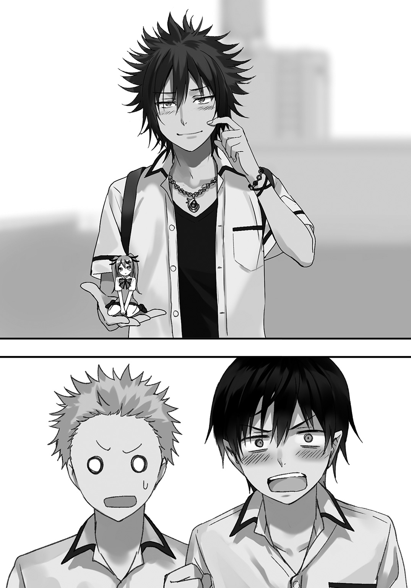
何やら田上っちがパニックに陥っている。彼は一体何が言いたいんだろうか。
「え、甲条先輩.........もしかして......」
甲条は頰をかき、照れ臭そうにはにかみながらも田上っちの言葉の続きであり、答えでもある真実をあっけらかんと口にした。
「うん、実は僕、オタクなんだ」
〇
勇者パーティーの一人である甲条はオタクだったという衝撃的真実を目の当たりにしたところで、今は落ち着いて三人で向かい合うように屋上に座っていた。
「......実は、ずっと前からアニメやゲームが好きでね。今はこんなハデな格好をしてるけど、昔はもっと地味な感じだったんだ」
指を弄りながら俯いて話す甲条。俺は貰ったエルシアちゃんフィギュアをクルクル回して見つめながら、
「勇者パーティーに選ばれて魔王倒して有名になったから、自分がオタクだってのを隠してきた。そんなところか？」
「......その通りだよ」
「道理で口調がどことなくぎこちないと思ったよ。よほど無理してたんだな、アッハッハ」
「のんきに笑ってる場合かよ......俺はまだ状況に追いついてねーってのに......」
「アハハ、ごめんね」
「あっ、いや、別に甲条先輩が悪いって訳じゃ......」
「いやこいつのせいだろやっぱり」
「お前はなんでそんな偉そうなんだよっ!!」
「スゲー！ エルシアちゃんのパンツまでメッチャ作り込まれてる！ さすがレア物!!」
「話聞けよっ!!」
「アハハ......キミたちは仲いいんだね」
「親友だからな！」
「堂々と言うんじゃねぇよ恥ずかしい......」
「にしても、まさか勇者パーティーが隠れオタクだとは思わなかったなぁ。こればっかりは俺も予想外だ」
甲条は乾いた笑みを浮かべながら、
「魔王を倒した英雄みたいに言われて、周りからもてはやされて......気づいたら周りには柄の悪い人たちが集まってグループ作ってて。だからこんな意味わかんない格好してたんだ。なのに誰も、先生さえも注意してくれないから、どうしようかと思ってた......」
でも、と続けて俺に目を向けて笑った。今度の笑みには乾いた様子はない、本当に嬉しそうな笑みだ。
「キミが文句を言ってくれた時は本当に嬉しかったんだ。......だけど昨日は雰囲気的にキミに攻撃しなくちゃいけなかったから......あの時は本当にごめん」
「いいだろう、俺様は寛大だからな。許してやる」
「偉そうに......」
「アハハ、いいんだよ。僕はむしろこんな感じでフレンドリーな方が嬉しいから。キミも別に敬語じゃなくていいからね？」
「そんなっ！ いやいや無理ですよそんなの！」
「田上っち、取り乱しすぎだよ」
「田上くんっていうのかぁ。僕も田上っちって呼んでいい？」
「えっ......」
「アハハ、嫌そうだから普通に田上くんって呼ぶよ」
「は、はい......」
「そんな畏まらなくていいだろ、勇者パーティーっつっても一個上の普通の高校生なんだし」
「いや、それが一番重要なんだが......」
「確かに魔王を倒しに行ったメンバーなんだろうけど、魔王を倒したのは勇者一人なんだよ？ そーんなヘコヘコしなくていいじゃん」
「「っ!?」」
田上っちは『何言ってんだこいつ？』みたいな感じで驚いていたが、甲条の驚きは田上っちの比ではなかった。甲条は目を見開いたまま、
「.........どうして、それを知っているんだい......？ それは勇者も含む、あの場にいた者しか知らないことなのに......」
「え......!? そ、それホントなんですか!? 扇が言ったことって、事実なんすか!?」
甲条は俺を、田上っちは俺と甲条を交互に見ながらワタワタしている。
............しまったな、言うんじゃなかった。これだと俺が何者なのかといろいろ詮索されそうだ......。
（............、よし）
「え、今の冗談で言ったんだけど、マジだったの？」
さも適当なことを言って実は正解でしたーみたいな流れに急遽変更。素早い機転でなんとかこの場を乗り切ろうと試みる。
結果としてはうまくいった。
ただ、二人の沈黙とあの白い目に、どことなく居心地の悪さを感じさせられていた......。
〇
「とりあえず、和解ってことで終了だな。俺的にはこのエルシアちゃんフィギュアが貰えたから万々歳なんだけど」
「喜んでもらえて嬉しいよ」
「あと、お前ちゃんと制服着ろよ。アクセサリーとかも全部外せ。勇者パーティーだからって調子乗んな」
「ごめん、明日からはちゃんとした格好で来るよ」
（真代の奴、目上の人に対する態度がまるでなっちゃいないな......）
時間もいい具合だ。もう学校にいる必要もないし、甲条に関してはもう許してやることにしたし、そろそろ帰りますか。
「つーか甲条、お前魔力だだ漏れだぞ。もうちょい抑えたらどうだ？ お前の魔力量はずば抜けて多いんだから他の連中がピリピリしすぎてストレス溜まっちまうよ」
「あー、それは勇者にも言われたなぁ。でもうまく抑えられなくて、一応勇者にレクチャーしてもらったんだけど......」
「教えるのヘッタクソだな、あの野蛮猿......」
「え？」
「いいやなんでもないよ。勇者がどんな教え方したかは知らないけど......」
甲条の下っ腹に拳を軽く打ち込む。僅かに声を漏らして腹を押さえる甲条に目を向けず、カバンをひょいと肩に担ぎながら、
「そこに力を圧縮するイメージをしろ。実際に魔力を圧縮するんじゃなく、圧縮のイメージをそこに向けて、下っ腹に力を込めるんだ。そうすれば魔力を抑えられる。まぁお前はバカみたいに量あるから抑えんのも一苦労だろうけどな」
「わ、わかった......やってみるよ」
「よーし帰るかぁ！ なんか腹減ってきたし、帰り何か食べに行かないか？」
「俺も腹減った。主に気の遣いすぎで」
「どした田上っち、何に気なんか遣うんだよ？」
「全部お前だよ原因はっ!!」
目を三角にして嚙みついてくる田上っちをあーだこーだと受け流しながら屋上を出ようとしたら、いきなり甲条が呼び止めてきた。
「あ、あのさ......僕の名前、甲条桐弥って言うんだ。そ、その......」
突然の自己紹介の後に口ごもり、頰を赤くしながらおずおずとした様子のままこう続けた。
「よ、よかったら、僕と......と、友達になってくれないかな......？」
「......だってさ田上っち、どう思う？」
「......いや、俺からしたらむしろこちらこそって感じなんだが......」
何を改まって言うのかと思えば......と小さく笑い、貰ったフィギュアを見せながら、
「なんか食いに行こうぜ、桐弥っち」
「......！」
「お前の名前の後につける何々〝っち〟ってのはなんなんだ？」
「面白いだろ？ 特に理由はないんだけどね。まぁ、てな訳で。これからよろしくな桐弥っち、俺の名前は真代扇だ」
「俺は田上龍一です。こちらこそよろしくお願いします」
「だーから固いって田上っち」
「お前、言っとくけど相手は先輩なんだからな？」
「関係ないね、友達に上も下もない。だろ、桐弥っち？」
「うん！ その通りだよ、扇くん！」
「......ハァ」
「へへー。じゃあたこ焼き食べに行こう！ 昨日どこかの奴にデコピンされて行けなかったし！」
「うっ......、ご、ごめん扇くん......」
「やめろ馬鹿」
「イテッ」
―――正直、こうなるとは思わなかった。まさかあの憎き勇者パーティーの一人と友達になるなんて、人間界に来た時には思いもしなかったことだ。
勇者もその仲間も許せない。だけど、いつまでも恨んでいたら『人間と魔物の今の関係』はずっと変わらない。なら、少なからずとも心を開いて、自分を抑えてでも歩み寄っていくしかないのかもしれない。
桐弥っちも悪い奴じゃないし......まっ、これからの学校生活に関しては、少しは面白くなりそうだ。
第Ⅶ章 妖精さんとのんびり外出
ある日の休日のことだった。
〈外食したい！〉
ソファーに座ってマンガを読んでいると、俺の頭の上にいたシュリンがいきなりそんなことを口走った。
「どうしたよ急に」
〈テレビ見てたらすっごくおいしそーだなと思ってさ。私まだ人間界のお店で食べたことないでしょ？ だからまおーさま〉
「ダメ」
〈まだ言ってないじゃん！〉
どうせ外で食べたいから連れてってとか言うのだろう。そんなの話の流れですぐにわかる。ていうかさっき「外食したい」って言ってたし。
〈いーじゃんまおーさまー！ 私もお店の中でおいしーもの食べたいのー！〉
「ダメだって。ていうか、無理だろうが」
〈なんで!?〉
「いやなんでって、お前魔物だろうが。バレたらテレビ局か研究所に連行されるか、はたまたその場で殺されちゃうかもしれないんだぞ？」
〈それならだいじょーぶだよまおーさま、なんと！ 個室で食べられるお店があるんだって！〉
「それくらい知ってるよ」
俺はマンガのページを捲りながら適当に返す。そんな俺の態度が気に入らないのかシュリンは髪の毛をぐいぐい引っ張りながら、
〈行きたいー！ 私もおいしいもの食べたいー！ 自家製トンコツラーメン食べたいー！〉
えらくピンポイントだな、ていうかそんなんでいいのかよ。
頭の上でジタバタ暴れて訴えてくるうざったいシュリンを摘まみ上げ、前にある小さなガラス製のテーブルに下ろす。
「そんなに行きたいのか？」
〈行きたい！ 特大メンチカツとかもんじゃ焼きとか食べたい！〉
「なんかパッとしない品ばっかだな......」
妖精であるシュリンは当然一人では外出出来ない。俺と一緒に、俺が持つカバンの中に入って隠れながらしか家の外には出られない。
週に一度は外をぶらついてシュリンを楽しませてはいるが、確かにシュリンの言う通り外食は一度もない。俺が買って帰るものしか食べられず、『お店で食べる』というシチュエーションに憧れるのもわからなくもないが。
「......じゃあ、行くか。個室ならなんとかなるかもしれないし」
〈ホント!? わーいまおーさま大好きー！〉
「ぶえっ」
顔にタックル気味に突っ込んで抱きついてきたシュリンを引き剝がして隣に落とす。ソファーの上で楽しみのあまりバタバタと暴れているのを見つめてため息を吐き、マンガを前のテーブルに置いて立ち上がる。
〈およ？ どーしたのまおーさま？〉
「着替えてくる。明日の予定だったお前の外出日を今日にして、そのまま外食する流れにしよう」
〈てことは、今からお出かけ!?〉
「そういうことだな」
〈いえーい！〉
自室に戻ってクローゼットを開け、適当に服を引っ張り出す。
着替える間、部屋の外からシュリンの喜びの声が聞こえてくる。よほど嬉しいんだろうな。
（いつも世話になってるし、たまには我が儘にも応えてやらないとな）
人間界に来てからもそうだが、魔界にいた頃からもシュリンにはいろいろと世話になっていた。言うなればシュリンは魔王の側近みたいなもので、魔王である俺といつも一緒にいた。
ガキの頃、魔界の森の中で偶然出会った滅んだはずの種族――妖精。それがシュリンだった。
シュリンは妖精という種族の最後の生き残りだったようで、最初の出会いは無茶苦茶だったけど、なんやかんやあって俺の家......つまり魔王城で一緒に暮らすようになったのが始まりだ。
朝起こしてもらったり、飯の準備してくれたり、洗濯してくれたり、俺の仕事の予定を覚えててくれたり。
シュリンのおかげで魔王としてやってこられたってのも少なからずある。優劣をつけるつもりはないけれど、『魔王臣下』の中では一番身近にいて、信頼出来る奴だ。だからこそ人間界にも連れてきた。
〈まおーさま、準備出来たっ？〉
「んー」
着替えて部屋から出るなり目の前をブンブン飛びながら訊いてくるシュリンに生返事をし、カバンを開ける。
そこに迷うことなくダイブしたシュリン。俺は上部から側面にまで続くファスナーを側面だけ少しばかし開ける。
〈いざ、出発ー！〉
ニュッと開いた隙間から顔を出して叫ぶシュリン。テンションがお高いようで何よりだ。
妖精の入ったカバンを手に、俺は微笑みを浮かべながら家を出た。
〇
やってきたのは少し遠い繁華街。電車に乗ってやってきたこの場所は、シュリンには初めて見る場所だ。
シュリンは基本近くのショッピングモールくらいしか連れていかないから、初めて来たここなら結構楽しんでくれるだろう。
『まおーさままおーさま！ なんだかすごいね！ いい匂いもあちこちからしてくるよ！』
シュリンの声がカバンから聞こえてきた――のではなく、頭に直接響いて聞こえてきた。
妖精が持つ【エネア】という特殊な魔法で、指定したターゲットと脳内で会話をすることが出来るいわゆるテレパシーみたいなものだ。
『何か食べたいものがあったら言ってくれ、それ買ってやるから』
『な、何？ 今日のまおーさま、不気味なほど優しくない？』
人の親切を不気味とは、この野郎......。
『......まっ、たまにはいいかなと思っただけだ。金もあるしな』
『わーいやったー！』
お金に関しては問題ないが、さて、何故俺たち魔界の連中が人間界の金を持っているかというと、実はものを売ってお金を得ているのだ。
魔界に有り余り、人間界では希少でレアなもの。
それはずばり、宝石だ。
魔界じゃ綺麗な石っころ程度の認識だが、人間界じゃすごい高価なものだと聞いていた。だからこっちに来る際、ある程度の宝石を持ち込んで質屋に売っ払ってお金に変えたのだ。
そのおかげで、こちらの生活はなんの不自由もなく送れている。
『じゃーじゃー......コロッケ！ あそこのコロッケが食べたい！』
『おし、了解』
シュリンの要望に答え、揚げたてを売っているコロッケ屋へ足を運ぶ。種類が違うものを一つずつ購入し、一つを俺が持ち、もう一つをカバンの中に入れてシュリンに渡す。
『ふわー......！ おいしそー......！』
『ちなみに、シュリンのは普通のコロッケ。俺のは肉じゃがコロッケだ』
『肉じゃがコロッケ!? 何それおいしそー！』
『まずは普通のコロッケを食べてからな、半分やるから』
『じゃー私も半分あげる！ 交換しよまおーさま！』
脳内で直接会話をしているため誰かにバレるはずがないし、いちいち俺をピンポイントで見てる人間もいないだろうからシュリンとのトレードも別に怪しまれたりしない。
バレないといえば、当然シュリンの魔力もバレたりしない。その辺の対策は抜かりない。
『んまんま』
『肉じゃがコロッケめちゃくちゃ旨いな。今度家でも作ってみるか』
『いいね！ じゃー二日目に余ったのでやろーよ！』
『でも肉じゃがは二日目の方が旨いんだよなぁ。じゃがいもがいい感じに溶けてて味も染みてるし』
『むっ、それは確かに......』
『まぁ多めに作ればいいだけの話だけどな』
『だね。味の染み込んだトロトロ肉じゃがと、肉じゃがコロッケ。これだけでご飯が進むよ』
『腹へったな』
『まだお昼には早いけどねー』
シュリンと交換し、俺も普通のコロッケを口にする。肉じゃがコロッケのあとだと印象薄れるかなとも思ったが、普通に旨いじゃないか。あそこのコロッケ屋は当たりだな。
『シュリン、どこか行きたい所とかもあれば言ってくれよ。そこに行くから』
コロッケを頰張りながら脳内でそう言うが、シュリンは肉じゃがコロッケに夢中で答えてくれなかった。
やれやれとため息を吐き、自販機でペットボトルのジュースを買ってから歩みを再開。
七月ともなれば季節はもう立派な夏だ。道行く人たちみんな、額に汗を滲ませて歩いている。
日傘を差したりうちわで扇いだりしているが、そんなのでこの暑さは凌げないだろう。気温三十度越えをナメてはいけない。
......とかいう俺はというと、この程度の暑さなどてんで大したことない。魔王が暑さなんかでヒーヒー言うはずがないのである。
『脆弱な人間ドモめ！』
『まるでまおーみたいだね』
『魔王ですから。まぁ今のは冗談なんだけどな』
『私らからしたらまだまだ涼しいよねー』
『ああ。眩しいのはちょっと堪えるけど』
『一面青空なんて魔界じゃ滅多にないもんね』
『でも、いいなこの景色』
『なんで？』
『女の人が薄着だから』
『............』
『あっ見ろシュリン！ パイスラだ！ オッパイスラッシュだぞ!!』
〈オッパイスラッシュっっ!!〉
ビクゥッ!! と、突如周囲に響き渡った声に全身で飛び上がってしまった。
飛び上がったのは俺だけではない、周りにいた人たちも同様に突然のすっとんきょうな大声に体を震わせて何事かと目を剝いている。
声がした方に顔を向けるのは自然なこと。
その中心点に俺がいるのもまた、ごく自然なこと......。
数秒固まってしまっていた俺は、フッと弱々しく笑って、
「――すんませんでしたぁぁああああああああああああああっっっ」
と、
『――このちんちくりんがあああああああああああああああっっっ』
を、外と中で豪快に叫び、一目散に『オッパイスラッシュ』で固まっていた空気と人たちを残して猛ダッシュした。
〇
「ふっざけんなよこのクソ妖精ぃいいいいいいいいいいっ」
〈あびゃああああああああああああああああああ〉
カバンから引きずり出し、引っ摑んだまま全力で摑んだ右腕をブンブンブンブンブンブンブンブンッ と振り回す。俺はこの技を【フェアリースイング】と名づけた。
「貴様ァ！ 自分がなんなのかわかってないようだなァええ!? バレたらダメだって何度も言いましたよねェ私聞いてなかったんですかァ」
〈ばばばだばだっ、だってまままおーさまがパイスラららに見とれてるから―――〉
「そんなんで魔物発見大事件とか馬鹿にもほどがあんだろ！ 下手したら今日の夕方にはテレビの中にいるかもしんないんだぞォォ!!」
〈ひゃあ―――!! ごめんなさ―――――いっっ〉
雑巾絞りのようにシュリンの体を両手で摑んで捩じ上げるとあばあば叫ぶシュリン。こいつには危機感というものがないのだろうか？ そんな訳ないよな！
「まったく......不用意に声を出すんじゃない」
〈めんごです......〉
反省してないようだ。ギューッ。
〈あばばばばー!! ごめんなさいごめんなさい絞らないで――!!〉
人間たちには妖精がどれだけの価値があるのかは知らないが、魔物だというからには当然捕獲するだろう。そんでテレビとかで放送して一躍人気者になるに違いない。ただし悪い意味での人気者。
あ、でも妖精って人間には神秘的とか幻想的とかでいいイメージ持たれてるし、もしかしたら手厚い対応が待ってるのかもしれないな。
まぁだからってシュリンを見せ物にしていいわけがないんだけどな、お父さんそういうの許さないからね、断じて。
深いため息を吐き出し、手に持つシュリンをカバンの中に投げ込む。シュリンをお仕置きするために駆け込んだビルとビルの間に続く細い路地からさっさと出ようと回れ右した、その時だった。
「よー兄ちゃん、こんな所で何やってんのー？」
「おわっ！」
ババッとシュリンの入ったカバンを背後に隠す。
あんだけ騒いでたら人が来てもおかしくなかったか......？ ていうかシュリンのことバレてないよな......？
冷や汗ダラダラの俺の方に歩み寄ってくるのは三人の男と一人の女だ。男三人が前を歩き、女が後ろから続く。
「兄ちゃん、ちょっと金貸してくんね？ あとで返すからさぁ」
（なんだ、ただのカツアゲか）
俺がカバンを慌てて隠したのがお金たくさん持ってますアピールになってしまったっぽい。けど安心した、シュリンがバレたとかじゃないんだな......。
「な？ 頼むよ兄ちゃん、優しさを見せてくれよ」
「断る」
きっぱりと言い切る。
「お前らみたいなタコ野郎どもに見せる優しさなんてないからお金貸さない。まず返ってこないし、返すつもりないだろ。なら最初からちょうだいって言えよ頭悪いな。まぁちょうだいって言ってもやらないけど」
「？ 殺すぞテメェ、いいから持ってるモン全部出せや」
「むーりー」
こんな連中相手にするのも無駄だ。ここはちゃっちゃと逃げるに限る。
とはいえ後ろは行き止まり。前にはカツアゲ軍団。暴力反対主義の俺にはぶちのめすなんてことは到底出来ないのである。
「じゃあ痛い目に遭ってもらうぜ、覚悟しろやネクラ野郎」
「誰がネクラだぶっ殺すぞ」
「ッ!?」
おっとイケネ、素が出ちゃった☆
それはともかくとして、逃げ道が前にも後ろにもない。左右にはビルがあり、高さはざっと三〇メートルくらいか？
（これくらいの幅なら、魔力なくてもいけるかな）
カバンの持ち手を口にくわえ、勢いよく屈んで足に力を籠める。
男たちが何かを言おうとしていたが、それを俺が聞く義理はないので......、
「ふッ!!」
力いっぱい地面を蹴り出し、俺は大きく跳躍する。
三メートルほどの高さまでジャンプし、ビルの壁に足を付けた瞬間に再び跳躍して反対側のビルへと上に向かって飛び移る。それを繰り返すだけで、『上』という逃げ道を作り上げる。
下でギャーギャー喚いてるタコどもを鼻で笑い、よいしょよいしょと跳んで跳ねてで登っていく。
「.........面白いじゃない」
その呟きは聞こえなかった。
だけど、真下に発生した魔力には反応することが出来た。
ッボォ!! と、狭く薄暗いビルの隙間を目に見えない何かが駆け抜けた。
コンクリート製のビルの壁を僅かに震わせ、空気を貫いて空へ向かって飛来するそれは、ビルからビルへと飛び移っていた俺へ一直線に向かってくる。
（やばっ）
現在俺は滞空中。もちろん、かわすことなど出来なかった。
ゴパァンッ!! と鈍い音を響かせて、斜め上に進んでいたはずの俺の体が真上に進行方向を変えさせられた。
「げっほッ......！」
腹に直撃したのは恐らく空気の塊。
カテゴリーは風魔法か、圧縮した空気弾が標的に当たった瞬間に弾ける仕組み......魔法自体は野球ボールくらい小さいくせにかなりの威力してやがる。
どこにも摑まるなんてことが出来ずなすすべなく、あとちょっとでビルの屋上に届くって所から落下した俺は肉体強化魔法で足を強化し着地に備える。
が、全身を真上に押し上げる風魔法が地面スレスレで吹き上がり、俺の体を一瞬浮かせてから地面へ落とした。わざわざ気を遣ってくれてありがたいが、しかし当然感謝の言葉なんて言ったりしない。
「ケホッケホッ......そこの女子がやったな？」
見つめる先は男たちの後ろに立つ女だ。ロングの茶髪、大量のピアス、胸元やヘソ、脚を大幅に露出させた奇抜な服装の、見た目的には同年代に見える少女は茶色の髪を手でかき上げながら、
「あんた、かなり強いね。さっきの動きを見るだけでわかったよ」
「いやいや、俺なんてその辺にいる気弱でいたいけな男だから強いとかないし」
服の上から腹を擦り立ち上がる。
ガードは間に合わなかった分、服が破れないように魔力で服だけ強化した。大したことないレベルの威力と判断してしまったからな、腹も強化しとくんだった。
「でもダメじゃないか、特定の場所以外での魔法の使用は原則禁止のはずだろ？ 自警団に捕まるよ？」
「そんなのどうでもいいし。とにかく、あんたが今持ってる金全部出しな。さもないとさっきのをもっかい叩き込むよ」
面倒なのに絡まれたなぁ......と内心呆れる俺は頭をかく。男たちの前に出た少女が突き出した掌に再び透明の空気の塊が凝縮される。
「カツアゲなんてやめとけ。バレたら停学か、最悪退学だよ？ お金が欲しいならパパママに頼むかバイトして稼ぎなよ」
「この状況で減らず口？ なんなら顔に当てて口を利けなくしてあげてもいいんだよ？」
「ひー、それはやだなぁ。でもキミさ、一つ忘れてない？」
「は？」と首を傾げる茶髪の少女に、ニコッと笑ってみせながら口を開く。
「俺が反撃する可能性を、だよ」
そう言って――俺は前に歩き出す。
合わせるように、警戒心を強めた少女は生成していた空気弾を掌から射出。空気を貫く音を発して高速で飛ぶ。
「腕はいいようだけど、運が悪かったね」
空気弾は寸分違わず俺の顔へと飛来する。距離にして五メートル程度。射出から着弾までに一秒も満たない。
瞬きなんかしていられない、それほど一瞬のうちに、空気弾は眼前にまで迫っていた。
ただ。
俺の鼻面にぶつかるよりも。
歩みを進めた俺の足が地面につく方が――早かった。
空気弾が通過する。
捉えるべき標的がいた場所を、しかし何も捉えられずに直進していく。
標的である俺は僅かに姿勢を横へ傾けるだけで避けて地面を蹴る。
鋭く、力強く。
驚いていたのか目を見張る茶髪少女の顔の前へ、右の拳を突きつける。拍子に髪が激しく揺れた。
焦点の合っていない目をした少女はまるで時間でも止まっているように固まっていたが、
「カツアゲした相手が魔王（俺）だったっていうのは、同情するレベルで運が悪いよ」
俺の言葉を耳に入れ、鼓膜を通して脳で理解し、ようやくそこで少女の時間が世界に追いついた。
後ろへ二、三歩よろめいた茶髪少女の横を通り、後ろにいた男たちに向けて口を開く。でもその言葉は少女も対象者だ。
「今回みたいなのを『藪蛇』って言うんだよ、勉強になったね」
男たちの間を通り、振り返ることなく路地から立ち去る。
もしかしたらさっきの魔法に使われた魔力を察知して自警団が駆けつけるかもしれない。面倒事にはなるべく関わりたくない俺はそそくさと早足で薄暗い路地から歩道へと歩み出た。
「いてっ」
直後、曲がった先に人がいたようで、俺はその人と正面からぶつかってしまった。
顔を押さえながらぶつかった相手に目を向けようとすると、視界に相手の顔を収める前に舌打ちと暴言が飛んできた。
「どこ見て歩いてんだボケが」
むっ、と押さえていた顔をしかめて相手を見る。
「.........あ？ お前確か......」
見覚えのある顔だった。しかも最近で、いい印象では記憶されていない人物の顔。厳つい老け顔、タッパがあってガタイもしっかりした大柄の少年だ。
「てめえッ......！」
そいつも俺に気づいたようで、目を剝きすごい顔で見下ろしてくる。
同じ学校に通っている勇者パーティーの一人、甲条桐弥の周りにいた連中の一人だ。名前は確か、剛力......だったかな？
「あ、悪い。ちょっと急いでたから」
「あ!? 態度デケェんだよ土下座くらいしろやカスが!!」
何故か凄まじくキレていらっしゃる剛力は鬼の形相で胸ぐらを摑みかかってきた。
「よっ」
なので上体を後ろに傾けて伸びてきた手から逃れ、軽いステップで後ろに下がる。
「ぶつかっただけでそんなキレんなよ、牛乳飲め牛乳」
「逃げんなゴラァ!!」
「キレすぎだろ......、悪いが逃げる！」
怒鳴られようが無視して反対方向へダッシュで逃走。
追いかけてくるなら追いかけてこい、俺の全力ダッシュに追いつけるならな！
〇
「クソがァ!!」
吐き捨て、路地にあったゴミ箱を豪快に蹴り飛ばす。そこにいた男三女一のグループは怒りを剝き出しにしている大柄な少年に声をかける。
元々剛力と同じグループだった彼らは、つい先ほど分かれたばかりなのにここまで怒りを露にしている剛力に眉を寄せながら、
「どうしたよ剛力、なんでそんなイラついてんだ？ 年確されてタバコ買えなかったのか？」
「さっきのネクラ野郎、知り合いなのか？」
「知り合いだぁ......？ ンな訳ねェだろがッ!!」
「ど、怒鳴るなよ、俺たちに当たるな」
もっともな意見に少し落ち着きを取り戻した剛力は、ビルの壁に固く握られた右拳を叩きつける。
「お前ら......あいつをつけろ」
「は？」
「あの野郎だけはぶっ殺さなきゃ気が済まねぇんだよ!! 二度と楯突けないように徹底的になァ!!」
「その話、乗った」
唯一の女である茶髪の少女は腕を組みながら真っ直ぐに剛力に目を向ける。
「さっきは油断したけど、あれで勝った気でいられるのは癪だからね。でもいいの？ あいつ、ただ者じゃないような気がするけど」
「ああ、確かにただ者じゃねぇ。......だからこそ今潰すんだよ。今後あの面で外を歩けないようにしてやるんだよッ!!」
血走った二つの目で、吠える。
異義を唱える者は、誰もいなかった。
「覚悟しやがれ、真代ォ......!!」
〇
『あんなのやっつけちゃえばよかったのに』
憮然としたシュリンの言葉につい苦笑いが零れる。
『まおーさま見下されてたんだよ？ 世界で一番強いのに』
『世界で一番かどうかは知らないけど、〝今は確実に違うだろ。お前もわかってるくせに〟』
『それはそーだけど、でもまおーさまならあんなのやっつけるくらい赤子の手を捻るくらい簡単でしょ？』
『.........赤子の手を捻るって、どこでそんな言葉覚えたんだ？』
『この前テレビでやってたえーがのセリフ！ なんかかっこよかったから覚えちゃった！』
『かっこいいより渋い感じだろ』
『いぶしぎんだね』
『どこで覚えた』
シュリンのボキャブラリーの多さに驚きを隠せない俺だった。
ともあれ、カツアゲや剛力から逃れられたのはシュリンがバレる危険性から逃れられたって意味もあって一安心だ。平和的解決には逃げるというのも一つの手なのだとわからされた瞬間だった。
『そろそろいい時間だし、昼飯にするか』
『ピザ食べたい！』
『今絶対ピザ屋が見えたから言っただろお前.........まぁいっか。お持ち帰りでどこかで食べるか』
シュリンの要望通りピザ屋さんに入り適当に注文。混雑している分時間がかかるとのことで、店内で待つこと一五分程度、出来たてのピザが入った箱を袋ごと受け取り店の外へ。
『広場みたいな場所で食べたいな、確か近くにあったはず......』
『広場でなんて食べたら私見つかっちゃうよ？』
『広い場所で人のいない場所に行けば、気配を察知して対応出来るだろ？ いつまでもカバンの中にいるのも疲れただろうしな』
『ま、まおーさま、私のために......？ いやーんまおーさまだいちゅきー！』
『はいはい』
僅かな記憶を頼りにめったに来ない町中をふらつくこと一〇分程度、お目当ての広場を発見することに成功した。
鯉が泳ぐ池もあれば噴水もあり、遊具もあればグラウンド、頂上に木が生えた小高い丘などといろいろある綺麗な広場だ。
『おー！』
カバンの隙間から覗いているのかそんな声を頭の中でも発するシュリンは、きっと心から感動したのだろう。
俺はピザの入った袋とシュリンの入ったカバンを持って広場に入り、夏の太陽の下でも元気に走り回っている子供たちや噴水で戯れる親子たちを眺めながら昼飯を食べるのに最適な場所を探す。
『思ったより人少ないな、まぁ暑いしお昼時だからってのもあるけど』
『こーつごーだね、早くピザ食べたい！』
『はいはいちょっと待て。............んー、あの丘の上で食うか。見晴らしはそこまでかもしれないけど』
『いーね！ なんだかピクニックみたい！』
というわけで意味もなく猛ダッシュし、誰もいなかった丘の頂上を陣取る。
高い場所じゃ回りから見られそうなものだが、シュリンくらい小さかったらある程度近づかれない限りは虫か何かと勘違いするだろう。シュリンが虫に見えるとかは本人には口が裂けても言えないが。
シュリンが入ったカバンを地面に置き、セミが鳴いている木に背中を預けて座り、ピザの入った箱を開く。
木陰に眩しさから守ってもらっていることに感謝しつつカバンのファスナーを開けると、たちまちシュリンがフワーっと飛んで出てきた。
『んうーっ......！ やっぱり外はきもちーね！』
「今は口で喋って大丈夫だぞ、周りに人いないし」
〈あ、そっか。......ふーっ、〝今の状態〟で【エネア】使い続けるとキツいなー〉
「そりゃあ家から今までずっと使いっぱなしだったからな。ほら、さっさと食べるぞ」
〈わーいピザピザー！〉
丘の上からなら周りがよく見えるし、いざとなればシュリンを隠せばいいだけなので特に気を張ることはない。俺も（一応周りは気にしながらも）リラックスし、シュリンとともにピザを楽しむとする。
〈んまい！〉
口からチーズを引きながら満面の笑みを浮かべて頰張るシュリン。こういう感じで外で食べるってのも『こっち』に来てからは初めてで、いつも家の中だったからな、多分家で食べるよりずっと美味しいと感じていることだろう。
律儀に正座して、小さな手でさながら布団のような大きさのピザを食べるシュリンは本当に幸せそうだった。
「うまいなピザ」
〈さいこーだよ！ これだけじゃ足りないよ絶対！〉
「あと三枚あるから食べるだけ食べたらいいよ。種類も全部違うから飽きないだろうしな」
〈うわーい！〉
それからは周りの景色や遊ぶ子供たちを眺め、シュリンと雑談を交わしながらも昼食であるピザ四枚を一五分足らずで平らげた。
「ハーッうまかったー」
〈うぐごぉ......〉
「無理して食うからだぞ、おバカ」
もはや妊婦なんてところじゃない、『そういう形をした風船』みたいに膨れた腹をして横たわるシュリンは重苦しい呻きを発した。
「一瞬で消化する妖精の腹とは思えない有り様だな」
〈めったに食べられないし......まおーさまに全部食べられちゃうと思って〉
「そこまで食い意地張ってないっつーの」
木陰の下、木にもたれかかりながら食後の休息をとる。呻いていたシュリンも一分も経たずして元気になり、半透明の羽を動かして木の周りを飛び回っていた。
その姿から目を離し、丘の上から下の広場だけでなく町を行き来する人たちに視線を投げてみる。
子供たちや親子、カップルや主婦や仕事をするおじさんなどなどが何の気なしに町を歩き、この地で生活している。
魔界とはまったく違う風景、日常、平和。これらは人間たちにはとってはごく当たり前で、それでいて尊くて、必要で、大切なもの。
「......魔王がいた時はどうだったんだろうな、この場所は」
到底わかり得ないことだった。
わかろうと思えばいくらでも時間はあった。だけどわかろうとしてこなかった。まぁ早い話、興味がなかったってことなんだが。
魔王だから魔界のことだけ見てればいい、考えていればいいとばかり思っていたけど、少し視野を広げるだけでこうまで世界は変わって見えるものなのだと、人間界に来てまもなくそう感じた。
（『逆の立場の目で見て悩め、さすれば答えは見えてくる』.........か）
遠い昔に言われた言葉を思い浮かべた直後、小さく笑ってしまう。まるで俺が〝こうする〟ことを知っていたかのような言葉だ。でもきっと言った本人は想像もしてなかっただろうから、俺が人間界で過ごしてるなんて知ったらどんな顔をするやら。
〈まおーさまどうしたの？ 何笑ってるの？〉
「ちょっと考え事をしてただけだよ、そろそろ行くか」
〈うん、私えーが見てみたい！〉
「映画か......何気に俺も行ったことないな」
てな訳で次の目的地は映画館に決定。俺はピザの空箱やジュースの空き缶をしっかり分別してまとめた袋を持って立ち上がり、シュリンにカバンの中に戻るよう指示する。
「シュリン、【エネア】も繫いどけ」
〈りょーかい〉
キンッ......と特に不快に感じない甲高い音が俺の脳内に響く。それがシュリンの魔法が繫がった合図だ。
『接続完了！』
『わああああああああああああああああああああああああああああああ！！！！！』
〈うるさいッ〉
小さな拳骨が脳天を直撃し、顔が地面にめり込んだ。
〈耳塞ぐとか出来ないんだからおーごえ出さないでよ!!〉
「.........接続の......確認にと思って......ていうか魔王に容赦なさすぎ......」
〈今さら確認なんていらないじゃん！ あとよーしゃも情けもいらない！〉
「最後のはあってほしいなー......」
顔についた土を払い、膨れるシュリンをカバンにねじ込んで丘の頂上から下に降りて広場を出る。
映画館となると、駅の近くの大きなビルにあった気がする。戻ってしまうが、やっぱり映画は大きくて広い空間の方が迫力あって面白いだろうし、そんな小さいことは気にしないでいよう。
今日はシュリンに付き合うと決めたんだ、シュリンが行きたい所に行って思いっきり楽しんでもらわないと今日の外出の意味がない。
『映画っていっても、何か見たい映画あるのか？』
『特にないかな。ただえーが館で見てみたいってだけだし』
『じゃあ着いてから何見るか考えるか。俺もこれといって見たい映画とかないし、今何やってるかも知らないけど』
『アクションがたくさんあるのがいい！』
『じゃあアニメだな』
『違うよ！ 外国のえーが！ 戦ったりするのがいい！』
『アニメのアクションシーンだってすごいんだぞ？ ド迫力で緊張感溢れるシーンとかたくさんあるんだから』
『アニメはなし！』
『そんな......』
大スクリーンでのアニメとかめちゃくちゃ興味あったのにぃ......。
『............、まっいいか』
『あ、いーんだ』
特にアニメ映画が見たいっていうこだわりはないから、シュリンが嫌だって言っても俺はノーダメージ。仮に見たいアニメ映画があったなら、シュリンの言い分を無視してそれを見るだけである。
魔王さまの命令は絶対！ なんつって。
『えーが楽しみだねー。まだ着かないの？』
『もうちょいだな。なんなら走るか』
『別に走らなくてもいーよ？』
『早く着いた方がいいだろ？ それに.........』
『......それに？』
『いや、なんでもない』
俺はシュリンが入ったカバンの揺れに注意を払いながら軽快に走り出す。その際肩越しから後ろに目をやり、一瞬だけ後方を確認。
（広場を出てすぐくらいから跡をつけられてるな......見てみたらさっきカツアゲしてきた連中みたいだし、いつまでもつけられるのは気分よくないからいい加減撒くか）
最初はジョギングくらいのペースで走っていたが、角を曲がって後ろの連中の視界から消えたと同時に猛ダッシュ。通行人の間を縫うように走って撒きにかかる。
『まおーさま、なんでそんな全力ダッシュなの？』
『運動不足の解消だよ、特に意味はないからお前は気にしなくていい』
映画館までの最短ルートを走る途中で、つけてくる連中の姿は完全に見えなくなった。視線や怪しい気配もないのでうまく撒けたようだ。
『よーし、これで心置きなく映画を見れるな』
『よくわかんないけど、えーが楽しみ！』
ビルに入り、映画館へと赴く。
休日ということもあり人が多く、ビルの中は混雑している。映画館もまたしかりで多くの人たちが溢れていた。
そんな中、広告として貼り出された映画の看板を端から順にシュリンと眺めてどの映画を見るかを考える。
『どれがいーかなー......！』
『あんまりパッとしないのばっかだなぁ.........、お？』
ふと一つの看板に目が止まり、ニタリと笑う。
『おーいシュリン、これにしようぜこれ』
『どれー？』
シュリンに見えるようカバンの角度を変え、俺が見つけた映画を見せる。
『暑い夏には、ヒヤッとしたホラーがいいんじゃないか？』
〇
ホラー映画、『故人の戯れ』というタイトルの映画は日本が舞台で、若者グループがひょんなことから悪霊に目をつけられてしまい、友達が次々に命を落とす中それでもなんとか生き残ろうと奮闘する内容らしい―――と、貰ったパンフレットに書いてあった。
ホラー映画に恐怖し、声を必死に抑えながら怖がるシュリンの様子を見ようという目論見。だからホラー映画を選んだんだ。
だというのに............。
「―――――――っっ！！！！」
『まおーさまうるさいっ！』
『こっ、こわっ、こわひ......！ 怖すぎるだろこれ......!!』
『静かにしてて、今いーところなんだから』
『だっ、だだだだってこれ......オバケ、オバケがいきなりドアッ――』
――キャアアアアアアアアアア!!
「ぷあああああああああああああああああああああああああああああああああああ！！！！」
―――きっと、今日の夜は一人で風呂もトイレも行けそうにないなぁと、半泣きになりながら思う情けない魔王がいるらしい。
一体どこのバカだって？
ここにいるんですよ、そのバカな魔王が......。
『まおーさまビビりすぎ』
『だって怖かったから......』
俺は映画が終わった頃にはげっそりしていた。映画館を出る際何人かにクスクスと笑われていたような気がしたが、特に気にしなかった。気にする余力がないってのが正しいんだが。
『でも、やっぱりすごいねえーが。真ん中で見られなかったのがちょっと残念だけど』
『それは我慢してもらうしかねーなぁ。最後尾の一番端にある二席を取ったのも、カバンから出てもバレないようにするために選んだんだし』
『その点はもー感謝しかないけどね。ありがとーまおーさま』
映画館を出て適当にビルの中を見回りながら、次はどうするかをシュリンと話し合う。晩飯はシュリンの要望に応えるとしてどこか個室のある店で食べるから、それまでどこで時間を潰すか考えないと。
『まおーさままおーさま、シュリンちゃんはなんだか小腹が空いてきたのです』
『あそこに植木があるぞ』
『だからなんなの？ ぶっ飛ばすよ？』
『悪かった冗談だ。で？ 具体的に食べたいものでもあるのか？』
『デザートがいーな！ 夏だからアイスとかかき氷とか！』
難しいことを言うなこいつ......。
カバンの中で食うとすると、かき氷はなしだな。零れる可能性があるし、それならまだある程度固形のアイスの方がいいか......。
『ソフトクリームでいいか？ ソフトクリームならビルの外に出店があったし』
『ソフトクリーム！ いーね！』
涼しいビル内から灼熱の外へ。眩しい太陽の光に目を細めて呻きながら、少し離れた位置にあるソフトクリーム屋さんへ足を運ぶ。
『何がいい？』
手に持っていたカバンを肩にかけてシュリンの視線を高くし、ソフトクリームのメニューを見えるようにしてやる。
『イチゴとバニラのツインソフト！』
「えっと、イチゴとバニラのツインが一つと、チョコチップバニラ一つで」
『中までビッシリ入れてもらって！』
「たっぷり入れてください」
若いお兄さんは手際よく動き、注文した二つのソフトクリームをお金と交換して貰う。
シュリンのイチゴとバニラの二種類が渦巻いたツインソフトクリームと、俺のバニラクリームの上にチョコチップがちりばめられたソフトクリームを両手に一つずつ持ち、どこか座れる場所を探す。
この日差しの中だと早くしないと溶けてしまうし、日陰で快適な場所はないものか......。
『早く早くー！』
『急かすなよちょっと待て。あ、うまいなこれ』
『ずるーい！ 自分だけ食べるなんてー！』
ギャーギャー喚くシュリンがカバンの中で暴れている。あまり派手に動かないでほしいんだが、誰かに見られたらどうするんだ。
そんな心配をして、不意に思い出す。
（見られたらで思い出したが、映画前につけてきてた連中はまだ俺を探してんのか？）
何が目的かは知らないけど、カツアゲの際の仕返しみたいなのだと面倒極まりない。魔法を躊躇なく使ってくるような奴らだ。次絡まれたらもっと過激に魔法を使ってくるかもしれない。
（アイス食べたら、電車で地元に戻るか。この辺をうろつくと見つかる可能性もあるし.....................あ）
『ヤバい、シュリンのアイスが溶けてきた』
『はー!? まおーさま早く！ 早く渡してよ！』
『揺れてる中だとカバンにつくかもしれないだろ。大丈夫、俺がなんとかする』
『まさか溶けてる部分を舐めるとか言わないよね？ 言わないよねまおーさま!?』
『おっ、イチゴもまあまあいけるな』
『貴様――!!』
『おい、一応俺魔王なんだから貴様とか言うなよ』
『あ、ごめんなさい。じゃー............このボケ!!』
『もっと酷いんだが!?』
臣下にボケって言われたよーうえーん。
.........いや、ちょっとマジで傷ついたんだが。
と、とにかく。モタモタしてられないな、早くシュリンにアイスを渡してやらないと......。
もう日陰とかベンチとかそんな贅沢は言っていられない。どこか人の邪魔にならない場所で座らないと......。
『............ん』
『？ どしたのまおーさま？』
『いいや、―――なんでもないよ』
左に飛び退く。すると、直後に真後ろから走ってきた男が俺の立っていた場所を通り、そして派手にすっ転んでしまった。
立ち上がろうとする前に俺は動く。
「なんの用かな、タコ野郎」
腰の辺りを踏みつけ動きを縫い止める。耳に十字架のピアスをつけたその男は、先ほどカツアゲしてきたグループの一人だった。
「ずっとつけてたのは知ってるぜ。撒いたと思ったけどえらくしつこく探し回ってたんだな。お疲れさん」
「ぐっ......！」
徐々に乗せた右足に力を籠めていく。動こうともがく男だが、そう易々と逃がしはしない。
「それで、まだ俺に何かあるのか？ 言っとくけど面倒事は嫌いだから、次はもう手加減しないぞ？」
ざわつく周囲も気にせずに冷たい眼光で見下ろす。
「.........」
「おい、早くしろよ。こっちはソフトクリーム持ってるんだぞ、早くしないとアイスが溶け―――!?」
反対の肩口から覗いた掌から無系統の純白の魔力体が放たれ、それを腹部に受けた俺は体をくの字に折って吹き飛ばされてしまう。
その拍子に左右の手に持っていたアイスを落としてしまう。それどころかシュリンの入ったカバンまでも落としてしまった。
『いて！』とかいう声が頭の中に響く。ヤバい怒られる......ていうか俺が怒られるのかこれ？
理不尽な展開が目に浮かんだまま足から着地し、魔法を受けた腹を手で擦る。
「お前、こんな人がいる中で魔法を......」
「うるせェ!!」
起き上がるやすぐに両手を突き出し、直径二メートル近くあるであろう炎の塊を撃ち出してきた。形振り構わないってかこいつ、関係ない人が周りにいるってのに。
「まったく......」
アイスを失い空いた右手で拳を握り、後ろに引く。足を広げて姿勢を低くしてから、ドゴンッッ!! と炎の塊を下から押し上げるように拳を叩き込んだ。
軌道を九○度ねじ曲げて真上に飛び、弾けて消滅した炎には目も向けずに啞然としたまま正面で立ち尽くす男に、
「周り見てもっと考えろよ。無関係な人巻き込むな」
「くっ、..................へへ」
焦った表情から急に余裕が見え、怪訝に眉を寄せる。男は手を上に伸ばし、掌に火球を作りだした。
まだわかんねぇのかこいつは......と口の中で呟いた俺は一歩前に踏み出す。
―――前に、俺の隣を猛スピードで何かが駆けていった。
後ろ姿しか見えないそいつは帽子を後ろ向きに被った男で、肉体強化魔法を使っているのか瞬く間に歩道を走っていく。
途中で、シュリンの入ったカバンを拾い上げて。
「.........な......」
今度は俺が啞然とする番だった。
火球を掲げていた男はカバンを持つ男が隣にまで来たところで一気に腕を振り下ろし、火球を地面に叩きつける。
弾けた炎は広がり、やがて大きくなる。
歩道の端から端までを埋め尽くす炎の津波が発生し、空気を熱する低い唸るような音を響かせながら俺を飲み込むように襲いかかってきた。
周りには人がいると言った直後にこんな魔法を使うあたり、他人の言葉を聞かない奴らしい。
そして、そんなことよりも俺の意識を持っていくのは、
「ふざけるなよ」
足を一度踏み鳴らす。それを合図にコンクリートの地面から壁が迫り上がり、激突してくる炎の津波を受け止めた。
被害はなく、誰一人ケガをしていない。確認はしていないが間違いない。
仮にケガ人がいたとしても、構っていられない。
出現したコンクリートの壁を地面に戻す。その向こう側にはもう誰もいなかった。炎を使った男も、帽子を被った男も。
「やられたな......」と独り言を呟く俺だったが、表面上落ち着いているように見えて内心かなり焦っている。
奴らの目的はだいたいわかっていた。カバンを取っていったのは俺を誘き寄せるためなのだろう、あの帽子の男は見たことがないが、もう一人の男はカツアゲしてきた連中の一人だ。あの時慌ててカバンを隠した俺を見てカバンに何か大切なものが入っていると判断し、俺を誘うためのエサとして取っていった。
その判断は、極めて正解だった。だってあのカバンの中には、人類にとっては敵である魔物が入っている。バレては俺の正体が怪しまれるどころの話じゃなくなる訳だ。
『シュリン、聞こえるか』
『聞こえるけど声がちーさいよ、まおーさま何が起きたの？ なんで走ってるの？』
【エネア】の精度が悪くなっている、炎で足止めされてる間にかなり離されたみたいだな。
どこを走っているかはわからないが、とにかく俺も走り出す。全力で、手当たり次第辺りを見渡しながら。
『シュリン、今どこにいるかわかるか!? 何か目印はあるか!?』
『わ――ないよ、何も見―ない――』
（まずい、【エネア】が切れかかってる......！）
ここで切れたら手がかりを失ってしまう、あの連中の魔力を辿ろうにも探知能力が超ショボくなってる今の俺じゃあ人が大量に密集した街中では探すのは困難だ。下手をしたら、探すために意識を集中した途端【エネア】が切れるかもしれない。
誘き寄せるために取っていったんなら何かしら手がかりを残しておけよな間抜けども！ と悪態をつき、現状をなんとかするべく俺は決断をした。
『......聞こえるか、シュリン』
『――、―おーさま!?』
こちらの声は聞こえているのか、それも怪しい雰囲気だった。だけど躊躇っても迷ってもいられないと、俺は頭の中でシュリンに言葉を張り上げ、飛ばす。
『―――俺の【ロック】を一つ開けろ！ 質問は受けつけない、これは命令だ！ 今すぐに開けるんだ!!』
どこへ走っているのかわからないままに、全力で脳内で吠える。
『―――――』
返答は聞こえなかった。
だけど、直後。
言葉ではない応えが、確かに俺の中に返ってきた。
カチン、と。
体のどこかで『形のない箱』が一つ、鍵を外して開かれる。
〇
「あづ～い......」
全体的に元気がない声で心から出た言葉を吐き出す。
額から滲む汗を拭い、買い物袋を片手にぶら下げる赤いポニーテールの少女はうんざりだと言いたげな顔だった。
勇者パーティーの一人を兄に持つ少女、甲条朱美。彼女はぶつぶつと文句を呟きながら、炎天下をゾンビのようにノロノロと歩く。
「買い忘れたんなら自分で買いに行ってよねぇ......なんであたしが行かなくちゃなんないのよぉ」
母の命令によって家から叩き出された。近場で買えばいいものをポイントがつくからとかいう理由で離れたスーパーにまで買い物に行かされた朱美はグロッキー寸前の状態であった。
特売と割引の言葉に弱い主婦の気持ちがわからない少女は忌々しげに太陽を睨み、しかしその眩い光にすぐさま俯いてしまう。
「は、早く帰ってエアコンのきいた部屋に避難しないと......このままじゃ息絶えちゃうわマジで......」
なんて冗談めいたことを言える程にはまだ余裕がある朱美。
そんな彼女の前方から男が二人、曲がり角から必死の形相で飛び出してきたのは直後のことだった。
「？」
眉を寄せる朱美。何かに怯えているようにも見えるし、それ以前に追われているようにも見える。しかし後から続くように曲がり角から出てくる人物はおらず、距離が空いているだけかとどうでもいい考察をする。
ズダンッッ!! と、こちらに走ってくる男たちと朱美の間に人間が上から落ちてきた。
思考が一瞬飛んだ朱美のやや前方に立つのは黒髪の少年。走ってきていた男たちは上擦った声を発して急ブレーキをかけて止まった。
（え、あれっ、こいつって......!?）
「どこだ、俺のカバンは」
男たちは答えない。
回れ右して来た道を戻ろうと駆け出す姿を見て、黒髪の少年は小さく息をつく。
足の周りで黒い雷が弾けたのを見たのは、朱美だけだった。
パチン、と雷が音を鳴らす。
そのすぐ後には、黒髪の少年は逃げていく男たちの正面に回り込んでいた。
少年は握った右の拳を内側から外へと水平に振るい、二人いる男の片割れである帽子を反対に被った男の頭部に裏拳を叩き込み、住宅地を囲う塀に男をぶち当てた。
その男はたったそれだけで気絶し、ぐにゃりと力なく道に転がる。
もう一人の、耳に十字架のピアスをつけた男は黒髪の少年に首を摑まれ動けなくなっている。
「答えろ、俺のカバンはどこだ」
ギリギリと絞める少年の声音は冷たい。炎天下にいながらも寒気が走るほどの眼光を見て、男はなりふり構わず右手を少年の顔に突きつけた。
「なっ!?」
声を発したのは朱美だ。
放たれた炎が少年の首から上を丸飲みし、見ていた朱美は目を見開き驚きを露にする。
モロに食らっては、いくら小規模とはいえ炎は炎。軽い火傷なんかでは決して済まされない。
はずなのに、
「次で最後だ、タコ野郎」
「......がッ!?」
帽子の男が激突した住宅街の塀に乱暴に叩きつけられ、ピアスの男は痛みを堪えながらも驚きの色を浮かべている。
離れた所から見ていた朱美に関しては啞然とするしかなかった。
黒髪の少年は、まったくの無傷。
魔法で相殺した訳でも肉体強化魔法で堪え忍んだ訳でもない。
何もしないで炎を浴びた。
だけど、無傷。
「俺のカバンがある場所を言え。さもないと―――殺す」
「......ッッ！」
あれは脅しなんて甘いものではない。見ていた朱美も直感的にわかった。
紛れもない本物。
はた目に見てもわかるほどの明確な殺意。
返答次第では、あの男は間違いなく首をへし折られ、殺されてしまう。
「.........早音橋の......河川敷だ......！」
「.........」
「がァ!? ......ほ...本当だッ...噓じゃ...ないッ......！」
「みたいだな」
解放され、咳き込みながらへたり込む男。黒髪の少年から溢れていた殺気も消え、どういう訳か関係のない朱美まで安堵してしまっていた。
「早音橋下の河川敷、ね」
「ああ......本当だ、そこに、お前のカバンはある......」
「じゃあお前はもういい、そっちの奴連れてとっとと失せろ」
パキッと指が乾いた音を発する。それだけで男は悲鳴を上げ、気絶している男を担ぎ上げて走り去っていった。
「さて、早音橋に行くか。場所わかんねぇけど、まぁ〝誰かに聞けばいいか〟」
そう言った少年は顔を向ける。
立ち尽くしていた甲条朱美の方に。
「偶然だな、赤頭」
「っ！」
声をかけられてようやく全身の感覚を思い出した朱美は肩を小さく震わせる。
「悪いけど教えてほしいんだ、早音橋ってどこにある？」
「.........そこに、何しに行くのよあんた」
「取られたものを取り返しに行くだけさ。あのゴリラ野郎からな」
どうやらカバンを取った相手はわかっているようだった。さっきまでのピリピリとした雰囲気はない。だが決して穏やかという訳でもない気がした。
「時間がないから早く頼む。早音橋の場所を教えてくれ」
「......あっちよ。とにかくこの方向に行けばあるわ」
「助かるよ」
それだけだった。
再びパチン、と電気が弾ける音が響く。
その時には真っ直ぐに、少年は家や塀を軽々と踏み越えて朱美が指差した方角へと一直線に跳んでいってしまった。
ポツリと残されてしまった朱美は、ただただ少年が消えていった方向を見ているだけだった。
あれだけ悩まされていた暑さは、いつの間にか気にならなくなっていた。
その代わりに。
さっきまでなかった悩みが、いや、とてつもなく小さくて、自分でも気づかなかったほどの何かがこの時、明確に膨らんだ。
〇
「大切そうに抱えてたこのカバン、いったい何が入ってるのか気になるわね」
人の持ち物が気になってしまう時は誰にだってあるものだ。
それがいけないことだとわかっていても、時には欲望が勝ってしまったりする。むしろその『いけないこと』をすること自体に背徳感があったりする訳で、こういった人間の浅はかさが出てしまうのは仕方ないことなのかもしれない。割り切っていいことでもないのだが。
もっとも、彼ら彼女らの原動力は先の背徳感などではなく単純な好奇心によるもの。配慮も遠慮もなく、躊躇うことなくカバンを開けた。
「あ？ ......うぇ」
開いて、覗き込んで。
ピアスやネックレスといったアクセサリーを大量につけ、露出度が高い服装をした茶髪の少女は顔をしかめてそんな風に呻いた。
「何が入ってんだ？」
周りにいた男たちも覗き込む。みんながみんな気になる訳ではないようで、タバコを吹かしたりスマートフォンを弄ったり雑談したりする人間も何人かいた。
そんな中で、覗き込んでいた男たちは茶髪の少女と同じような顔をする。代表して茶髪少女がカバンの中に手を突っ込んだ。
引っ張り出した手に握られていたのは―――赤いビキニ姿で背中に羽がある女の『フィギュア』だった。
「何これ、こんなのカバンの中に入れて歩いてんの？ 普通にキモいんだけど」
「スゲーリアルなフィギュアだよな。本物みてえ」
フィギュアなど興味の欠片もないのに、そのリアル過ぎる造形についまじまじと見つめてしまう周りの男たちだったが、茶髪少女は不快感を露にした顔で口を開く。
「ホントキモいんだけど。なんか妙にあったかいし」
「今ってここまで技術が進化してんだなぁ、体温まであるとかまさに本物」
「いやそんなんじゃねぇだろ。カバンの中にあったから熱持ってるだけだろ普通に考えたら」
「まっ、そんなのどうでもいいのよ。とりあえず......」
茶髪少女はフィギュアを握っていた手を開き、地面に落とす。背中から落ちたフィギュアを見下ろしながら彼女は言った。
「キモいから潰す。別にいいわよね、剛力」
「ああ」
タバコを口にくわえた大柄で厳つい顔つきの男、剛力は目を向けさえせずに許可した。
だから、容赦なしに。
少女は地面に転がるフィギュアを勢いよく、思いっきり踏んづけた。
〈ぶげふっ〉
『.....................』
場の空気が凍りついたのは、その直後だった。
（ぎぃや――――!! しまったついうっかり―――――!!）
その『フィギュア』は............いいや違う、〝本当にフィギュアみたいな大きさの生き物〟は心の中で絶叫した。
踏まれた痛みにではない、踏まれた驚きについ反射的に声が出てしまったのだ。
「なっ、何!?」
慌てて足をどける茶髪少女の他にも、先ほどあがった声に驚いてギョッと目を剝いて声の出所を凝視していた。
地面に転がる彼女は必死にフィギュアのふりを続行する。
（どどどどーしよっ！ 絶対怪しまれたよバレる私が魔物で妖精だってバレちゃう――!!）
ひょっとしたら、もうバレているかもしれない。
一度は驚き離れた少年少女らはまたジリジリと近づいてくる。しかも最初集まってきていた人数だけではない、その場にいる全員が集まってくる。
どこからどう見ても大ピンチだった。
（ぐくくく......！ こ、こうなったら、もー私の声を耳にした人間を消すしか～......!!）
〝大ピンチなのはお互い様〟。
それに気づける者はこの場に一人もいない。
よそからやってきた、『彼』以外―――。
地響きを発して日の当たる場所に現れたのは、黒髪の少年。
彼は橋の下の河川敷に集まる柄の悪い少年少女らを一瞥し、途中であるものを見つけた。
あるものとはもちろん、地面に転がるフィギュアのふりをした一匹の妖精。
間に合ったのかそうでないのかが極めて怪しい状況下、声を発したのは大柄の男、剛力だった。
「待ちくたびれたぜ、真代ォ!!」
荒々しく吠える彼に、少年―――真代扇はうざったそうに視線を注ぐ。
「よくも俺に恥をかかせてくれたなァ!! お前はここで確実にぶっ殺す!!」
「逆恨みもいいところだな、ちょっかいかけてきたのは全部お前のくせに」
肩を竦めた扇は歩き出し、橋の下にある影の中へと踏み込んだ。
「お前を殺すために集めたメンバーだ。お前がどれだけ強かろうが、この人数相手に生きて帰れはしねぇだろ!?」
ざっと十人以上はいる。見るからに柄の悪いチンピラ集団だ。中には見知った顔もちらほらとある。まぁ、今日カツアゲしてきた連中のことだが。
険しい顔で敵意剝き出しで睨んでくる相手方を見て、扇は鼻で笑う。
「これだけ？ たったこれだけでやるってのか、この俺を？ 傑作だな、大爆笑だぜ」
言葉のわりに口元に浮かんでいたのは、純粋なる嘲笑だった。見下し、馬鹿にし、嘲る。その姿にカチンときたのは茶髪の少女だ。
「余裕満々だね、今度はさっきみたいにはいかないよ」
「わかってたけどやっぱりキミもいたのか。女の子を殴るのは趣味じゃないししたくないんだけど」
「ハッ、いつまでそんな態度をとってられるか見ものだね」
茶髪少女は開いた左手を真っ直ぐ伸ばした。
―――地面に転がって必死にフィギュアのふりを続けている妖精へと。
ピクリと扇の片方の眉が動く。
「大事なものなんでしょ？ 目の前でぶっ壊されたら、あんたはどうなるのかしらねぇ」
（ひえ――！ まおーさま助けて―――!!）
少女と妖精を交互に見てから首の骨を鳴らして、扇は細めた目を少女に向ける。
「やるならやればいいさ」
（ちょいっ!?）
「何？ 強がり？」
「そんなんじゃないよ、ただ余裕なだけ。キミの魔法なんかじゃ〝そいつ〟は潰れたりなんかしないからね」
「ほぉ......！ だったらやってやろうじゃない!!」
「ただ、やるならその前に一つだけ忠告しとく」
真っ直ぐ目を見て。
扇は感情のない顔と声で続けた。
「やったらその瞬間、キミを殺す。ついでに目撃者も全員殺す。〝そいつ〟は俺にとって大切な奴なんだ、傷つけられて黙ってられるほど、俺は温厚じゃない」
背筋が凍る声音に息を飲む者も少なくはなかった。
そのうちの一人でもある茶髪少女は、無理矢理にでも笑い飛ばして声を張る。
「......上等よッ!!」
「え」
ドバンッ!! と野球ボールほどの空気の弾をぶち当てられて、妖精はまさしく人形のように吹き飛ばされてしまった。
「..................、マジでやりやがった」
引き攣らせた顔を妖精に向ける。
仰向けからうつ伏せになった妖精の顔は偶然（？）にも扇の方を向いていて、目が合った。
.........真ん丸に開かれる血走った目と。
妖精は口パクでこんなことを扇に伝えた。
『殺 れ 。 な ん な ら 私 が 殺 る ぞ』
（女の子だから殺気は出さなかったんだけど、それがミスだなぁ...............うわっ、シュリンさんマジギレしてはる......）
ジェスチャーで落ち着くよう促し、扇はやれやれとため息を吐き出した後に、
「手を出したな、後悔すんなよ？」
「後悔すんのはお前だよ、馬鹿野郎が」
剛力の言葉を合図に、十人以上の人間たちが一斉に扇へと殺到する。もちろん、魔法を生成しながら。
「ハッハー!! 久々に暴れてやるぜ――!!」
「楽しませてもらうぜ！」
「どんなもんか見せてみろよオラァ!!」
などなどといろいろ言いながら迫る血の気の多い連中に、扇は真っ直ぐ言葉を放る。
「悪いけど、今の俺はいつもより〝ちょっとだけ〟強いぜ？」
その直後だった。
扇の全身に炎やら雷やら風やら水やら土やらどれでもない無系統魔法やらが叩き込まれ、地面もまとめて粉々に吹き飛ばす爆発が橋の下で起きる。
「ハッハハハー！ おいおいモロに食らったぜ!? なんか言ってた気がしたけどあっという間に終わりかよつまんねぇなぁおい!!」
「お前うるさい」
「おあ？」
ズッドンッ と。
一人の男が振り向いたところにグーを腹に打ち込んで振り回し、二、三人ほどにぶつけるように殴り飛ばした。
埃すらついていない完璧な無傷で姿を見せた扇に気づいた者たちは例外なく目を見開く。
「なっ!? こいついつの間に!?」
声を発するくらいの猶予は貰えたらしい。
直後―――手足や頭を使った打撃音が連続した。攻撃は一人一発ずつ叩き込まれ、扇はバッタバッタと打ち伏せていく。
だがその中で、
「......へぇ」
扇の高速で強烈な攻撃をかわす、または耐える者が二人ほどいた。
「なかなかやるようだけど、いちいち相手にしてられないからちょっと本気を出すよ」
感心したのも束の間、扇はすぐさま行動に移す。
低姿勢で、まるで獣のように一直線に距離を詰めた扇を振り払うように男の一人は雷の魔法を横に薙ぐように放つ。だが捉えられず、気づけば扇は頭上を渡る橋の裏側に足をつけていた。
「チィッこの......!!」
即座に両手を真上に伸ばし、掌に雷を集中させて橋に張りつく扇を撃ち落と―――ヅンッッ
放つ前に、扇はもう地面に降りていた。
「！！！？？」
雷を放とうとした男の足を踏んづけて。
声にならない悲鳴を上げる男の意識を頭突き一発で消し飛ばし、離れた所にいるもう一人に右手を突きつける。
「ひっ!?」
扇の一撃を防げるほどなのに、その男は情けない声を発して逃げ去っていく。敵わないと判断しての撤退か。
「それも悪くないが、させないんだよなぁ」
追いつき、並走し、頭蓋に踵落としを入れて意識を刈り取る。糸の切れた人形のように転がった男へはもう目すら向けていない。
半ば棒立ちだった剛力と茶髪少女を見据えて笑う。
「あっとふったり☆」
「ッ!!」
「ちょっと、どうなってんのよ剛力！ こんな化け物なんてウチは聞いてな―――」
取り乱す茶髪少女の言葉が途切れる。
全身の筋肉が僅かの間硬直した彼女の背後から、茶髪を搔き分けてこめかみに触れる。
ピストルのような形にした右手、その人差し指で。
「化け物かぁ、実は正解なんだよなー」
「...............ね、ねぇ......？」
「んー？」
「あ、あんたの大事な『フィギュア』を傷つけたこと、謝るわ。本当にごめん......も、もうあんたには関わらないから許して？ 許してくれたらウチ、なんでもするからさ......」
「なんでも？ ほぉほぉ、それは大変魅力的だなぁ。キミみたいな可愛い子がなんでもしてくれるなんてドキドキしちゃうなー」
「な、なら―――」
何かを言いかけたが、扇はそれを遮る。
「でも」と。
打って変わった低い声音で。
「キミがどれだけ可愛くても、やっていいことと悪いことはあるんだよ。そんで、許せることと許せないこともある」
「............」
「許せることはカツアゲ。何も取られてないし、そもそもまったく気にしてない。だからカツアゲはもう許した。許す許さないの天秤にすら乗ってないほど小さいことさ」
「............」
「許せないことはさっきキミが言ったことだよ。キミは傷つけた。俺の大事な『臣下』を、〝まるで人形のように〟」
「...............さい......」
「やる前に言ったよな、やったらどうするか。まさか聞こえなかったとか言わないよな？ 上等ーとか啖呵切ってたんだし」
「......ごめんなさい......ごめんなさい......」
「許さないことされて許す訳ねぇだろ。誰をナメてしまったのか、キッチリわからせてやる」
「ごめんなさい!! もうしない、しませんから！ ごめんなさい許してぇ!!」
もう泣く始末だった。
泣きながら必死に謝る少女を細めた目で見る扇は、スゥッとこめかみから右手を離す。
「ハァッ、ハァッ......ゆ、許して、くれるの......？」
「だから許さないって」
パアアンッッ と。
眼前で鳴り響いた大きな音に、少女は驚きを通り越して気絶してしまった。
後ろにいる扇の体を伝うようにズルズルと崩れ落ちる少女から一歩下がり、合わせていた両手を下ろす。
「おまたせゴリラ野郎、メインイベントだ」
言葉の後に空気を引き裂き弾けるのは、漆黒の稲妻。
ゆったりと歩み寄ってくる扇。膝を地面につけた剛力の顔は、まるで絶望の淵にでも立たされたように酷く歪んでいた。
「お前......いったい...なんなんだよ......」
「『王』」
一言を、告げる。
真実を、叩きつける。
「だけど『王』は小物の相手を本気でしたりなんてしない訳で、今から拳でボッカボッカ殴るってのも違うんだよなぁ」
漆黒の雷は次々に生まれ、再びピストルの形をした右手の人差し指に集まっていく。
指先に形成されしは、闇を形にしたような、ビー玉ほどの小さな球体。
「つー訳で、邪魔な奴は消すことにする。幸い目撃者は一人もいないからなんの迷いもなく出来るんだよ」
「...............」
「安心しろよ、もう追い込むようなことは言わねぇ。一瞬だ。痛みもないから楽にしろ」
闇色のビー玉を浮かべたピストルを、眼前に突きつける。
剛力は、震えていた。
歯と歯がぶつかってカチカチと音を鳴らすほどに。
そんな状態でも、
「..................あ......」
剛力は、今見た光景で一番に思う一言を吐き出した。
「.........悪魔......!!」
「おめでとう―――正解だよ」
数秒後、橋の下、影の中で。
「【ブラックナイト】」
闇が辺りを瞬く間、黒く染めた。
〇
カチンッ、という音が体内で鳴った直後、俺の体から一気に力が抜けてカクンと膝が折れた。転けそうになるがしかし、なんとか堪える。
『はい、ロックしたよまおーさま』
『ありがと。しっかし、この脱力感はいつ体験しても気だるげさが半端ないな』
回収したカバンの中のシュリンと【エネア】で会話しながら肩をグルリと回したり伸びをしたりと体を解す。
『ロック』。それは妖精特有のものではなくシュリンオリジナルの魔法だ。対象者の魔力を封印するみたいな効果がある魔法で、俺は常にその魔法をかけられた状態にある。
そりゃあ腐っても魔王だからな、全開状態でいたりなんてしたらバレるとかの話じゃない。
ちなみにシュリンも同様に、外出時は自身にその魔法をかけている。だから人に魔力を察知されることもないって訳。
ちなみにもう一つ言えば、この『ロック』はシュリンにしか解けない。〝壊す手段はあれど〟外すことは出来ないので、俺は好きな時に自分の力を使いたい放題出来たりしないのだ。
『なんならもー少し魔力おーめにちょーせーしてあげよーか？』
『いや、もう魔力量を学校に知られてるからそれは出来ないよ。それに、平和になったこの世界で何かあるなんて滅多にないだろうから大丈夫だろ』
『まおーさまがいーならそれでいーけど』
『それより、悪かったなシュリン。せっかくのお出かけだったのにえらい目に遭わせちゃって』
『まったくだよ！ 必死にバレないよーにフィギュアの真似してたのに魔法ぶつけられるとか酷すぎる!! ......けど、まおーさまが「大事な臣下」って言ってくれたの、すっごく嬉しかった。それに、なんだかんだ楽しかったし！』
カバンの中でパタパタと暴れるシュリン。
楽しかったと言っているのが本心であるのは、長い付き合いだからわかる。今日の一件は本当ついてなかったけど、シュリンがそう言ってくれるのは俺もなんだか嬉しい。
『.........まぁ、まだ時間はある』
『うん？』
『今日はとことん遊ぼう。嫌なことを忘れるくらいにな』
『えっ、ホントに!?』
『ああ。全力で遊ぼうぜ』
〈うわーやったー!!〉
突然の大声に、周りを行き交っていた人たちが驚き立ち止まって俺の方へと視線を向けてきた。人の声よりは妙に細い女の声。それが聞こえてきた場所にいるのは、俺ただ一人。
不審な目が、一点に注がれる。
「......あ......あはは」
もはや苦笑いしかなかった。
そしてこの後取るべき行動もまた、これしかなかったのである。
「失礼しましたあああああああああああああああああああ」
なんて言いながら走って逃げ出す俺の頭には、愉快でのんきな妖精の笑い声がどこまでも響いていた。
この妖精には、後でまた折檻が必要みたいだ。
〇
早音橋の河川敷。遅れてきてみれば、そこには十人以上が意識を失い地面に転がっていた。
〝見覚えのある顔もあり〟、例外なく、男女問わずみんな仲良く気絶していた。
「.........たった数分で、たった一人で、これをやったの......？」
啞然とするしかなかった。
買い物袋を手にしたまま立ち尽くす甲条朱美は、吐息混じりにポツリと呟く。
ほとんど無意識に。
「一体、何者なのよ............真代扇」
第Ⅷ章 爆炎握りしツンデレ少女
太陽がすっかり沈み、見上げる暗くなった空にはちらほらと小さな光が明滅していた。
七月。夏真っ只中なだけはあり夜であろうとむし暑さは健在であった。
それでも昼間に比べれば幾分かマシというのはありがたいもので、陽の光がない今、汗が伝い落ちるような状態にもなっていない。吹きつける風もどことなくひんやりしているおかげか、薄着ならそれほどの暑さを感じない。
遠くから車やバイクのエンジン音が聞こえてくるが比較的静かな空間。そんな中で、
「.........ハァ」
大きなため息をついた赤い髪をポニーテールにした少女は缶ジュースの中身を口に流し込む。
口に含み、喉の奥へ落とし、さっきのため息とは違う吐息を零す。
世界的に有名な英雄、勇者の仲間に選ばれた兄を持つ少女、甲条朱美はボーッとした顔で再び夜空を仰いだ。
ふと一人になりたかった。
家の自室ではなく、開放的で外の空気が吸える場所にいたかった。
彼女がいるのは公園。遊具も多彩で敷地は広く、木々も多い。ランニングや森林浴にも最適な大きな公園である。
昼間は子供連れの家族だけでなく運動目的で訪れる人も多いこの公園は、夜になると打って変わって人気がなくなる。夜の公園はなかなかにロマンチックでカップルや若者たちが集まってきそうだが、この公園はそうではなかった。
もちろん最初からではない。静かだし公園内も綺麗で景色も悪くない。恋人たちの憩いの場になっていた時代は確かにあった。
だが、今は違う。
人が寄りつかなくなった理由がある。
およそ一年ほど前のことだ、この公園には中央辺りに小高い丘があった。丘には滑り台も作られ、子供たちには大変人気だった。
しかしある日―――その丘が跡形もなく消失したのだ。
消失した時間帯は最も人気がなくなる日付が変わる頃と推測され、一時期ニュースにも取り上げられたほどの出来事だった。
だが結論から言って、この消失事件は解決されなかった。
目撃者もいなければ何かしらの証拠もなく、『誰が』、『どのようにして』消したのかはわからなかった。
つまり、犯人を特定出来なかった。
自然に消失するはずもなく、重機を使った痕跡もない。そもそもそんな可能性すら、この事件に関わった人間の頭には過らなかった。
人知を超えた現象......という表現は間違っている。
これは言うなら、想定外に起きた事象だ。
決してあり得ない話ではなく、しかしどうすればこうなるのかがわからない。
矛盾。
関わった人間に突きつけられた問題。
とはいえ、この問題の答えは簡単に出た。それも、関わった人間全てがその答えを口にした。
そして、それは正解だった。
―――『魔法でこうなった』。
単純だが疑いようのないその解は間違ってはいない。
〝だからこそ〟、消失事件は解決しなかった。
何故か......『丘を消した魔法がどんなものなのかを解明出来なかった』からだ。
答えは魔法。理由付けは出来ても説明が出来ない難問は結局解決されず、ある日を境に途絶した。迷宮入りを果たしたのだ。
その丘があった場所は現在何もなく、砂を敷き詰められてただの広場の一部となっている。
人が寄りつかなくなった理由はそれだ。
半年以上経ち、昼間はようやく人が集まってくるようになったが夜間は誰も寄り付かない。丘一つが消失したとされる夜など不気味でしかないのだから来ないというのは当然と言えば当然なのだった。
まぁ、人がいないからこそ朱美はここに来たのだが。
丘が忽然と消失した不気味な公園とか、そんなことをいちいち気にしたりしない女の子なのである。
おかげで静かで快適な空間になっているのだ、気にせず考え事に没頭する。
「......なんなのよ、あいつ」
頭に浮かぶのは一人の男。
黒髪に、良く言えば陽気な、悪く言えば間抜けな笑みを浮かべた同じ学校の少年だ。
その少年にはいろいろな印象を持っていた。
ヘラヘラ笑う頼りないひ弱な印象。
黒魔法を使いこなす怪しげで不気味な印象。
身を挺して自分を助けてくれた優しくも逞しい印象。
尊敬し誇りである自分の兄に喧嘩を売る無礼で腹立たしい印象。
冷酷さや残忍さが滲み出し、人を殺すことさえ躊躇わないであろう危険な印象。
すべてがまったく一致しない。
言葉を交わしたのは数える程度だからあの少年が本当はどんな人間なのかはわからないが、それでも自分が抱く印象のそれぞれがかけ離れている。
直近の記憶にある、兄に喧嘩を売る様子を思い浮かべてイライラが込み上げてくる。胸ぐらを摑み上げ、舐めた態度を取っていたあの様が少年の本当の姿なのかと考える。
さらに新しい記憶には、別人のような顔つきと雰囲気が刻まれている。
わからない。本当に、どれが本当の彼なのかが。
もし先に上げた記憶の中の少年が本当ならば、身を挺してまで助けてくれて、柔らかい微笑みを向けられたあのつい目を奪われてしまう姿は............。
「......っ！」
突如フラッシュバックした少年の顔に、何故か急激に恥ずかしいような気持ちが満ちて顔に熱が籠った。
あいつは許せない男なんだ、機会さえあれば自分がボコボコにしてやろうと意気込むのだが、そんなタイミングで件の少年の微笑みがちらついて気持ちが鈍る。
「う......!!」
一人頭を抱えて俯き唸る。
自分の心理状態がよくわからない。初めての感覚に混乱して目を回しそうになる朱美は、頭の中にあるごちゃごちゃしたものを振り払うように勢いよく立ち上がった。
（もう一回あいつと向かい合って、確かめよう）
朱美は缶ジュースの中身を一気に流し込み、空にして近くのゴミ箱へ投げ捨てる。
考えも纏まったところで帰ろうと足を動かした、ちょうどその時。
「ねーカワイコちゃん、今暇してるー？」
どことなく癇にさわる声が鼓膜に触れ、顔をしかめながら聞こえた方向に目をやる。
男が四人。髪の毛を派手な色に染め、タバコを吹かした〝いかにも〟って感じのチンピラだ。手にはビールの缶もあり、かなり出来上がっているご様子だった。
「俺ガキには興味ねーぞ」
「いいじゃねぇか可愛いんだし」
「よかったら俺らと遊びに行かね？ 何かうまいモンでも食べに――」
「死ねゴミカスども」
女の子の口から出たとは思えない暴言に一瞬固まる男たちだが、どうやらそれで諦めるような連中ではなかったようだ。
「おーい、あんま舐めた口利くんじゃねぇぞーガキ」
「カチンときたなー今......痛い目見たくなかったらおとなしく俺らについてこいよぉ、楽しませてやるから」
「まぁ楽しむのは俺らだけかもしれないけどなー！」
下卑た笑みを見せびらかす男たち。酔いで気が大きくなっているんだろうが鬱陶しいのは変わらない、心底面倒くさいとため息を吐いた朱美は右肩を回し、
「それじゃあ、あたしも楽しませてもらおうかしら」
「お？」
「ボランティア活動みたいな？ あたしそういうの結構進んでやるタイプなのよ」
ニタリと歪む唇から、続きが出た。
「例えば、不快なゴミの処理とかね」
ビリ......ッ!! と全身を刺激する重い威圧感が朱美から放たれ、たちまち男たちの顔色が変わる。
喧嘩を好み、酒を飲んで判断力が少々低下している彼らでさえ、その威圧感に中てられて一歩後ずさりしてしまうほど。
「逃げるなら逃げなさい、けど、やるなら容赦はしないわ」
並んで間抜けに硬直していたが、朱美の言葉に酔いでぼーっとしかけていた頭と体に熱が回る。
「ハッハ、じょーとーだよ。ちょいと痛い目見てもらうとするか」
男たち四人は全身に魔力を流して肉体強化魔法を発動。
特定の場所以外での魔法の使用は条例で禁止されているが、バレなきゃいいの思考の持ち主はそんなことをいちいち気にしたりしない。
そしてそれは、対する少女も同じだった。
「先にちょっかいかけてきたのはそっち。しかも男が四人、魔法まで使って乱暴しようとしてる」
ボボシュンッッ!! と高温の空気が弾けるように吹き出す。そんな音が、少女の掌辺りから発せられた。
細い綺麗な十指が、掌から吹き出た蒸気を弄ぶようにゆっくりと蠢く。
「これだけあれば、正当防衛ってことでお咎めなしよね？」
男たちの顔つきが一層険しくなり構える。引く気はないということならば、朱美としても情けをかける必要はない。
空気が張り詰める。
小さくとも、何かきっかけさえあれば激突を起こしそうな緊張感が満ちている。
まさに、一触即発の状況下。
―――だが、そこに。
『こーんばーんは～』
気の抜けるほど陽気な声が、静寂な公園内に響いた。
水を差す、空気の読めない間抜けな声。
だというのに。
ゾワッッ と、全身に悪寒が駆け抜け、肩が飛び上がり、冷や汗が一気に噴き出した。
それが恐怖によるものだと、この一瞬では誰一人気づくことが出来なかった。
目から先に首が回り、顔を向ける。
朱美が座っていたベンチ、その後ろにある林。
月明かりの差さない木々の奥。
闇の向こう側。
『寄ってたかって女の子を苛めるなんて酷い話だな～。まぁその赤いのは見てくれだけで、中身は小生意気なお子ちゃまだから相手にするのはやめた方がいいよ～。だからさぁ......』
声は変わらず陽気なままだった。そしてその声は、闇の中から聞こえてくる。
でも、だというのに。
生ぬるい風に体を舐められた時には、声の主は、いつの間にか反対側......つまり真後ろに立っていて、
「さっさと帰れ」
毛色がまったく違う低い声音でもって、一言。
慌てて朱美も男たちも振り返り目が合う。
「あ......」
唯一朱美だけが言葉を発することが出来た。
何故なら、視線の先にいる『少年』を知っていたからだ。
長い黒髪に華奢な体つきの、自分にとって今もっとも〝ややこしい〟少年だ。
「あれ？ もしかして聞こえなかった？」
カクンッと首を横に傾け、少年は腕を組みながら、
「もう遅いし、早く帰りなよ。その子は放っといていいからさ。もしも、本当にもしもだけど、まだこの子を諦めないっていうんなら仕方ない」
真っ直ぐに目を向け、ニコッと柔らかく微笑む。
「ちょっと痛い思いをしてもらうけど、構わないかな？」
『っっ!?』
アルコールの大量摂取は判断機能を低下させたりする。それでも男たちは例外なく恐怖し、息を飲み、酔いが吹き飛んだ。
男たちが全速力で走り去っていったのはそのすぐ後のこと。よほど少年に恐怖を感じたのだろう。
朱美にはわからない、目を見ていた当人たちにしかわからない恐怖を。
情けなく逃げていった男たちの姿が見えなくなったところで、朱美は頭を巡らせ少年を見る。
呑気にあくびをしているそいつは革製の黒いバッグを手にぶら下げ、何故か高校生のくせにスーツにネクタイを締めているといったまるで社会人のような服装だった。
「......あんた、なんでこんな所にいるわけ？」
頭に浮かんだ数ある質問の中から一つ選び、まずそれをぶつける。
それに対し、少年も少年で素っ気なく言葉を返す。
「夕食食べに行った帰りでね、ここを通って家に帰るとだいぶショートカットできるんだよ。この公園無駄に広いから」
「ああそう。それでスーツなんか着てる訳？ 高校生のくせにどこで食べてんのよあんた」
「いいだろ別に、俺の自由じゃん。......あ、もしかして、遠回しに連れてけって言ってる感じ？」
「なんであんたと夕食一緒しなきゃなんないのよ！ 死んでもごめんだわ！」
「酷いっ！ 言い過ぎだよさすがにっ！」
手で顔を覆ってクネクネする少年を汚らわしいものを見るような目で見つめる朱美。
こんな奴に一瞬でも恐怖したのか自分は......と、腹が立ち舌打ちした朱美は赤い頭をかき、
「邪魔しないでよ」
「ん？」
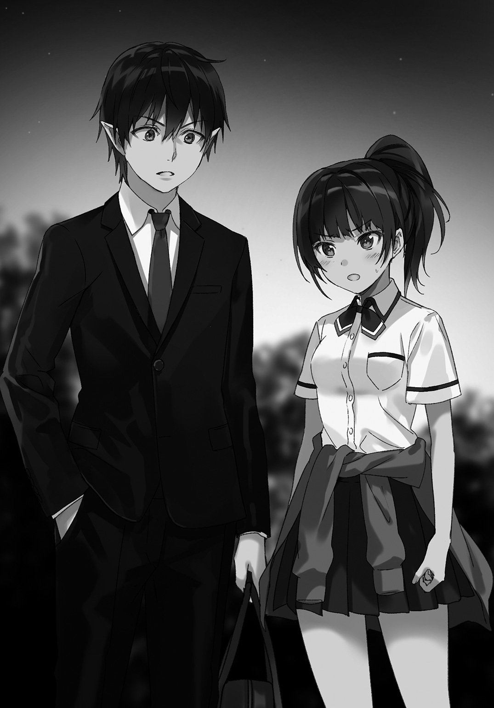
「あんな奴ら、あたし一人で軽くやれたわ」
「だろうね、だから止めた」
ジロリと目をやる。少年の口元にある微笑は相変わらず消えない。
「まさか、あいつらを助けたとか言うんじゃないでしょうね？」
「キミに言われたから言わない」
「ふん、馬鹿じゃないの」
「あ？」
少年の眉が片方、ピクンと動いた。
「あんなゴミみたいな連中は痛い目を見なくちゃわからないの。その機会を潰すなんて、ある意味もったいないことをしたわ」
「馬鹿だなーこのチョウチンアンコウは」
「誰が深海魚だっ!!」
「キミが強くても相手の数が増えればいつかは苦しくなってやり返される。そうならなくてもあんな奴らはキミの周りにいる無関係な人に危害を加えてやり返した気になるんだ。早い話、関わらないのが一番さ」
「ふん、やられたらこっちもやり返すわよ。もう二度と仕返ししようなんて気が起きないくらい徹底的にね」
「野蛮なリンゴだなぁ」
首を横に振りながらやれやれと肩を竦める少年を、朱美はキッと睨みつけながら、
「次ナメたこと言ったら殴り飛ばすから」
〈やれるものならやってみなさいよ身のほど知らず!!〉
どこからともなく突然聞こえたそんな声に朱美は思わず目を見開いた。大きいのに妙に細い女の声にどぎまぎする朱美に少年は、
「ふッ腹話術だよっ!! 今の腹話術なんだーっ！ 最近テレビで腹話術のやり方見たから練習したんだけどどうだったっ!? 驚かせるつもりはなかったんだよごめんねアハハハハ―――!!」
持っていたカバンを腕ごとブンブン振り回し、最後に自分の足に叩きつけた少年の顔は、汗が大量に噴き出しているように見えた。
薄暗くてはっきりと見えないが、しかし、さっきまでこれほど汗をかいていただろうか...？ と疑問に思い、首を傾げる朱美に畳み掛けるように少年は口を開く。
「夜に女の子の一人歩きは危ないから早く帰りなよ！ またさっきみたいな奴らに絡まれちゃうからね！ ていうか帰れ馬の尻尾!!」
「誰が馬の尻尾よ!! あんた、女の子の髪型に文句つけるつもり!?」
「ご、ごめんごめん、そんなつもりじゃないんだ......似合ってるよその赤いポニーテール。すっごく可愛い」
「っ!? か、可愛いとか言うな黒もやし！ 気持ち悪い!!」
〈ー!? 誰が気持ちわる―――〉
「よいしょおッ!!」
カバンに膝蹴りをぶちこむ少年は引き攣った笑みを浮かべたまま捲し立てるように、
「キミみたいな可愛い女の子なんてナンパされて当然なんだから早く帰りなさい！ じゃないと俺がナンパしてワンナイトラブを提供しちゃうよ!?」
「わ、ワンナイト、ラブ......ッ!? ばっ馬鹿なこと言ってんじゃないわよ変態！ 変態変態変態!!」
「大きい声で変態って言わないでくれます!? 通報されたらどうするんだよ！」
「うっさい馬鹿！ 変態！ 何がわ、ワンナイトラブよ気持ち悪い！ 不愉快だからもう帰る!!」
〈帰れ帰れ馬ー!! 馬女ー!!〉
「なんですってェッ」
「いや俺じゃな―――俺だったあごめんねっ!! は、早く帰ろ？ なんだったら俺家まで送ろうか朱美ちゃん!?」
「い、いらないわよ!! ていうか、さりげなく名前で呼ぶな!!」
「あ、おいどこ行くんだ？」
「帰るのよ！ あんたの相手なんてしてられないから!!」
弱々しく笑う少年を一人残し、朱美は足早にその場から去る。
肩を怒らしながら歩く彼女の顔は自分で気づかないのが不思議なくらい赤くなっていた。興奮したせいなのかどうかは、気づいていない朱美がわかるはずもない。
（悩んでたのが馬鹿みたいだわ......結局のところあいつは......）
歯を嚙み締め拳を握り、赤い髪を軽やかに舞わせ、公園を出た朱美は真っ直ぐ家を目指す。
人とすれ違っても気にしないままに、彼女は吐き捨てるように言った。
「ただただムカつく、馬鹿なお人好しってことじゃない......!!」
抱いた感想はそんなものだった。
本質が見えたようで見えておらず、しかしそれも外れている訳じゃない気がする。
つまるところ。
甲条朱美の中での少年の印象は、より複雑にゴチャゴチャしたものになっただけだった。
〇
「.........フゥ」
朱美が立ち去り静まり返った公園内で、小さく息をつく。
ポケットから取り出したハンカチで顔の汗を拭い、危機を脱した安心感からか力ない笑みが零れていた。
そんな口から、
「このお馬鹿」
少年――『真代扇と名乗る人物』は短く吐き出し、手に持つカバンを揺する。すると、カバンの中からぶっきらぼうな調子の言葉が返ってきた。
〈だって我慢出来なかったんだもーん。まおーさまにあんなふざけた言葉遣いなんてしけーだよしけー〉
「アホか」
カバンの隙間からヒョコッと顔を出したのは体長十五センチほどの魔物。緑色のロングの髪に黄色い瞳をした妖精、シュリンである。
〈まおーさま、もっとガツンと言わなきゃ！ 舐められたらダメだよ！〉
「あの子はああいう子なんだろ、まだ数回しか喋ってないけどいい加減わかってきた。とにかく、もういいから落ち着けシュリン」
〈むー......！〉
膨れっ面なシュリンにカバンの中に引っ込むように指示し、視線を広場へ投げる。
「......あれから一年かぁ、綺麗な広場に変わっちゃって」
〈まおーさまがポイントを間違えて空間転移したせいで丘がなくなったんだよねー〉
「言うんじゃありません」
結局、彼もバレなきゃいいの思考の持ち主だった。
「魔界からここまでを空間転移魔法、しかも一発で来たんだから、あれくらいの『ズレ』で済んだ方がラッキーってもんだぞ」
〈その『ズレ』のおかげで丘の中に転移しちゃって、びっくりして慌てて消し飛ばしちゃったんだもんねーまおーさまがー〉
「.........た、たまたまだ。あんな長距離を一発で転移したのなんか初めてなんだから仕方ないでしょ!? 消したのは、まぁ、咄嗟にだけど......」
〈ま、いーんじゃない？ ニュースにはなったけど私たちは怪しまれてないんだから〉
「そうだな。俺たちがやったんじゃないから知らない！ ということでいこう」
扇は回れ右して公園の出口へ向かい歩き出し、立ち去る。元々家に帰る途中だったのだからここに長居する必要もない。
そもそも、長居していたのはチンピラ四人に朱美が絡まれているところをたまたま目撃し、木の陰に隠れて見ていたというだけなのだ。自分が消した丘とかは最初から頭にはなかったのである。
本当に偶然出くわした、それだけだった。
〈ご飯おいしかったねー、個室だから私も気にせずいっぱい食べられたし。あれくらいおいしーりょーりが作れるようになりたいよ〉
「おい、あんまり喋るなよ。バレたら研究所とかテレビとかに引っ張りだこにされちゃうぞ？」
〈ゆーめーじんだね！〉
「楽観的すぎるだろ。ていうか、ああいうお店は使う食材とかもこだわってるからうまいんだよ。安物じゃ限界があると思う」
〈そこを埋めてこそりょーりにんだよ！〉
「何カッコいいこと言ってんだ」
カバンを肩に担ぐようにしてシュリンとの距離を縮めて小声で話す扇。もちろん周囲に人がいないのを確認しながらだ。
〈魔力も『ロック』してるから、黙ってたらバレないよ。見つかったらフィギュアの真似するし〉
「だから喋るなってば......喋るなら【エネア】使え」
まったく自分の存在の価値がわかっていない間抜けな妖精に呆れながら、扇は家路につく。自宅まではもう少しだ。
〈たこ焼き食べたい〉
言っても聞かないお馬鹿妖精をカバン越しからどつき、これは急がないとと微かな不安を感じて足の速度が二倍になった。
〇
「おはよう扇くん」
とある日の朝。登校中に後ろから名前を呼んできたのは赤色の髪をした長身の男子、世界的英雄である勇者パーティーの一人、桐弥っちだった。
あの日以来、まぁ髪の色はそのままだが、ちゃんと制服を着て意味不明なアクセサリーなどはなく、学校指定のカバンを背負っている。しっかり高校生らしい格好になった。
「おーす桐弥っち、おはよーさん」
「おはよう。ねぇ扇くん、昨日出た新刊買った？」
「昨日っていうと......あぁ、あれか？ 買ったけどまだ最初だけしか読んでないよ。昨日はいろいろと忙しくてね」
休日の土日となると、必ずどちらかはシュリンに付き合わされて町の中をひたすら歩き回らされる。今回は日曜で、つまり昨日だ。
普段外出出来ないから俺に隠れてこっそり外に出るしかないシュリンのささやかなお楽しみ。それに付き合わされ、昨日は家に帰った瞬間に爆睡してしまった。ただ歩き回るだけでも疲れるよね。
まぁ、〝先週の外出〟に比べれば歩くくらいの疲労なんてどうってことないんだけど。
「いやーしかし、あれってなんなんだろうね？ ラブコメなのに普通にバトルとかあるしさ。主人公なんて完全に人間じゃないよあれ」
「お酒二種類飲んでパワーアップとかスゲーよな、ていうか主人公未成年だけどあれ大丈夫なのか？」
「いいんじゃない？ どうせフィクションだし」
「それもそうか、早く読まないとな」
「相変わらずバトルやってたよ。また新しいヒロイン出てきたし、どんどんハーレムが広がっていくよ。しかも今度は主人公の――」
「あーあー、ネタバレやめてー」
すっかり取り巻きもいなくなり、自分らしく振る舞って生き生きとしている桐弥っち。話を聞くからにかなりのオタクみたいだから、演技してた時とか結構ストレス溜まってたんだろう。
だが、穏やかになった桐弥っちの周囲は未だビクビクしている生徒たちばかりのようだ。いくら穏やかになっても勇者パーティーという事実は残ってるからな。こればかりは仕方ないんだろうけど。
まぁ横でラノベの話を楽しげにしている桐弥っちを見れば、別に心配することもないか。
「うん？ どうしたの扇くん、僕の顔に何かついてる？」
「いろいろついてるぞ、目とか鼻とか口とか」
「そういうことじゃないよー」
アハハと笑う桐弥っちと並んで歩き、校門に差しかかったその時だった。
ドンッ、と、一人の女子生徒が俺と桐弥っちの間に無理矢理割り込んできた。
彼女は俺をジロリと睨み、プイッと顔を背けてそのまま早足で俺たちの前を歩いていくその少女の髪の毛は、隣にいる桐弥っちと同じ赤色。
「今の、朱美ちゃんだろ？ なんか機嫌悪くなかったか？」
「うん。最近さ、朱美がすっごく機嫌悪いんだ。理由はわからないけど家でもピリピリしてるし......何か悩み事でもあるのかなぁ」
「聞いてないのか？」
「だって怖いし」
「それでもお兄ちゃんかお前は......」
勇者パーティーのくせに妹が怖いという情けない兄に内心呆れてしまう。
「朱美ちゃんの悩みねぇ......まぁだいたい見当はつくだろ」
「え？」
首を傾げる桐弥っちはわからないようで、俺はやれやれと肩を竦め耳の穴に小指を突っ込みながら呆れた調子で言ってやった。
「年頃の女の子の悩みだぜ？ そんなのおっぱいくらいしかないだろ？ おっぱいだよ、おっぱい」
「お.........おっ......ぱい？」
「もう少し大きさが欲しいとか思ってるかもしれないぜ？ 朱美ちゃんの掌に収まるくらいのサイズもいいけど、やっぱり掌から零れるくらいは欲しいよなぁ。朱美ちゃんの胸はちょっと小振りだし、あともう一回り大きかったら―――」
ドドドドドドォ......ッ!! と大きくなってくる音に気づいた時には、
「勝手なこと言ってんじゃないわよボケェェえええええええええええええええええええええッッ！！！！」
「ごっぱすっっ」
朱美ちゃん豪快天晴れ。全身で叩きつけるような強烈すぎる右ストレートが俺の顔面にジャストミート。
今しがた通った校門からダイナミック且つ見事なジャイロ回転で通過した俺はベシャリと地面に落下してズザザーと滑った。
「うごぐぶぅ......」
「......何をしているんだ？ 真代」
仰向けに道路に転がり、顔を押さえて痛みに呻いていると頭上からどことなく冷めた言葉が降ってきた。俺くらいになると姿を見なくても声で誰かわかる、刀野さんだ間違いない。
「あ、刀野さんおはよ..................ブッ!?」
「な、なんだ、どうした？」
「く、黒っ......!!」
不可抗力だ。わざとじゃない。
だけど俺は別にそれを訴えたりはしなかった。だから、刀野さんの制裁も心から受け入れた。
―――だって、最高のアングルから下着が見えたまま顔を踏まれるなんてご褒美でしかないのだからっ！
〇
「聞いてよ田上ちゃーん」
「気持ち悪い呼び方すんな」
ケータイを弄り、目すら向けてくれない田上っち。素っ気なさすぎるんじゃありませんか？
「落ち込んでる親友に気持ち悪いとかよく言えるな田上っち、田上っちには心がないのか!?」
「落ち込んでんのも知らないし、なんでいちいち六組の教室にまで来て俺に話してんだよ。四組の奴に相談したらいいじゃねーか。刀野とか」
「その刀野さんについてなんだよ相談っていうのは。ねぇ聞いてよ田上っち～」
「......あ～はいはいわかりました聞いてやるから揺するな」
さすが田上っち。なんだかんだで頼りになる男だ。
「実は、刀野さんを怒らせちゃってさ。朝からずっと俺と話してくれなくて......おまけに見向きもしてくれなくて......」
「いったい何やらかしたんだ？ お前」
「刀野さんのパンツを見ちゃったんだ」
「お前が悪いなそれは。弁解の余地なく」
「黒だったよ」
「マジか、意外だな」
「わー田上っちがパンツに興奮してる～!!」
「ブッ飛ばされてぇのかテメーッ!!」
胸ぐらを摑み上げてくる田上っちを落ち着かせ、制服を整える。
「で、どうしよう」
「いや知らんし」
「謝ってもずっとそっぽ向かれてるんだよ。土下座くらいした方がよかったのかなぁ」
「やり過ぎると逆効果ってのもあるぞ？」
「だよね～......謝ってから褒めるって手もダメだったし......」
「は？ 褒めるって、何を？」
「刀野さんの下着は大人っぽくてセクシーだよって言ったんだ」
「お前......」
「ビンタされた」
「だろうな」
「はぁ～、どうしよぉ～......」
頭を抱えるしかなかった。
謝ってもダメ。謝ってから褒めるのもダメ。これ以外に他に何か手はないのだろうか......。
「つかお前、思ったことをはっきり言い過ぎなんだよ。もっと考えて喋れ」
「謝罪に偽りを混ぜるっていうのは本当の謝罪とは呼ばないと思うんです」
「どこで馬鹿正直になってんだこいつ......。とにかく、発言に気をつけろ。仕方ない噓ってのもあるんだ。お前だって仕方なく噓ついたことくらいあるだろ」
「うっ......」
それを言われると困る。
「まずは余計なことは言わずに謝れ。んで謝り続けろ、キレられない程度に」
結構難しくね？ それ......。
でもそうだよな、謝るならとことん謝らないと相手に伝わらないってのは確かにあるし......。
「よし、刀野さんにいっぱい謝ってくる！」
「頑張れ」
「でもさ田上っち、キレられたらどうすればいいの？」
「諦めて死ぬしかないんじゃね？」
「雑っ!? ちょっと適当過ぎるよもっと真剣に向き合ってよ田上っち！」
「だって俺関係ないし、正直どうでもいい」
「つ、冷たい！ まるで〝ドライアイ〟みたいな冷たさだ！」
「〝ドライアイス〟だ。誰が目の乾燥訴えてんだよ」
「..................、わざとだよ」
「へぇ」
くっ......！ なんだあの田上っちの顔は。ちょっと間違えただけじゃないか！
「......ん？ おい扇、ちょうど刀野が来たぞ」
「何!?」
まさに顔を向けようとしたそのタイミングだ。離れた所から俺の名前を呼ぶ声が聞こえ、そちらにバッと振り返る。
六組の教室の出入り口であるスライドドア。その前に立っていたのは確かに刀野さんだ。
刀野さんが俺を呼んでいるッ......!!
「何かな刀野さん!? ていうか朝はごめん！」
駆けつけざまに頭を下げて謝罪。あっ、しまった土下座するのを忘れた！
「そのことはもういい。わざとじゃないようだし、こちらこそ踏んづけたり引っ叩いたりしてすまなかった」
「なんのなんの！ 全部俺が悪いんだし、叩かれたりとかはむしろありがとうだよ刀野さん！」
「.........真代、キミは変態なのか？ いや、今まで気づかなかった訳ではないんだが」
「時と場合で変態だったり紳士だったりするかな。基本は紳士さ！」
「そうか、気持ち悪いな」
真っ直ぐ目を見て言われてしまった。ふざけてならいいがマジでそう思われているならこのあたりで否定的発言を挟んでおかないと刀野さんに嫌われちゃう。
「......ご、ごめん、自重するよ。そ、それで刀野さんはなんで六組に？ も、もしかして、わざわざ俺のために......？」
「ああ、キミに客だ」
「ん？ 客？」
小首を傾げる俺に見えるように刀野さんが横へ移動した。
その先にいたのは赤い髪をポニーテールにして、カーディガンを腰に巻いた少女。今朝俺に強烈な右ストレートを叩き込んできた張本人である朱美ちゃんだった。
「朱美ちゃんじゃないか。俺に何か用？」
腕を組み睨みを利かせながら俺を見る朱美ちゃんは、
「...あんた、今日の放課後屋上に来なさい」
素っ気なくというより、冷たい感じで言葉を発した。
それを聞いた直後だった。
俺の背筋に電流のようなものが駆け巡り、ブルッと小さく体を震わせた。
上擦った声でもって返す。
「こっ告白なのかなッ!?」
「はぁ!? な、なんでこのあたしが、あんたに告白すんのよ頭おかしいんじゃないの!?」
違ったー！ てっきり告白だと思ったのにー！
あからさまに肩を落とす俺をさらにきつく睨みつけてくる朱美ちゃん。そんな朱美ちゃんに刀野さんが、
「朱美、キミは一年だろ。先輩相手には敬語を使うのがマナーだぞ？」
「こいつに敬語なんか必要ないのよ燐華ちゃん。だって馬鹿もやしだし」
「誰が馬鹿もやしだこのアマ.........ていうか、二人は知り合いなの？」
「だったら何？ あんたには関係ないじゃない」
こいつッ......！ めっちゃ腹立つんだがッ......!?
「朱美も『勇者パーティー育成施設』に通っていたんだよ。私とは同期なんだ」
「あ、なるほど」
道理で雰囲気が普通の人と違うわけだ。この前のチンピラたちをぶちのめそうとした時のプレッシャーもそれなら頷ける。
「そんな話はいいのよ。あんた、今日の放課後屋上に来なさい、いいわね？」
「朱美、いくらなんでもそんな言い方は......」
「いいんだよ刀野さん」
刀野さんを制止して、俺は一度コホンと咳払いしてから、睨んでくる朱美ちゃんにニコッと笑ってみせて、
「俺は寛大だから敬語は多めに見てやるが、態度が気に入らないのでやり直しを求める。それが嫌なら回れ右して教室に帰れレッドポニー」
「............どこまでもナメ腐ったヤローね、一層腹立たしいわ......」
「何？」
朱美ちゃんは俯き、プルプルと体を小刻みに震わせ始めた。拳を固く握るその様子に、ちょっとばかし警戒心を向ける。
だが、特に何もなかった。何もしてこなかった。何も起きなかった。
ただし、
「放課後に屋上......絶対に来なさいよ!! 真代扇!!」
豪快に吐き捨てて廊下を駆けていく朱美ちゃんの後ろ姿を見ながら頭をかく俺は、見えなくなってからため息をつく。
「放課後ヤだなー、めんどくさいし行きたくないなー......」
「今の、桐弥さんの妹だよな？」
様子を見に来た田上っちはドアから覗くように外を見るが、田上っちが言う桐弥っちの妹はもういない。
「でかい声で何喋ってんのかと聞きに来たがちょっと遅かったな。まぁだいたいの話は聞こえてたけど......そこでだ扇」
「うん？」
「さっきお前があの子に言ってた内容にメチャクチャツッコみたかったんだけど我慢したことがあったんだよ」
「何？」
田上っちの顔を真っ直ぐ見ると、呆れたと言わんばかりの表情で、
「目上の人への態度とか、お前にだけは言われたくないなーってさ」
「よくわかりませんね、なんのことでしょうか」
「自覚あんじゃねーか」
「それで、どうするんだ真代？ 本当に屋上へ行くのか？」
「うーん、どうしようか迷ってるんだよなぁ......」
刀野さんの言葉に曖昧な返事をして腕を組み、数秒考える。
「......行かなきゃどうせ後からまた何か言われるだろうし、ここで行っといた方がいいような気がしてさ」
「ブッ飛ばすのか？」
「田上っちったら野蛮だなー、女の子をブッ飛ばしたりなんかしないよー怖いなー」
「発想が乱暴だぞ田上」
「わ、悪かった、今のはなしだ......」
両手を挙げて訂正した田上っちをニヤニヤしながら見ていると、ギロリと睨まれた。俺は慌てて表情を引き締める。
「と、とりあえず放課後、朱美ちゃんと話してみるよ。どうするかはそれからだね」
「何やらかなり怒っていたが、心当たりはないのか？」
「ん～......朝のことをまだ怒ってるのかなぁ......」
「朝？ 刀野のパンツ見たのとは別で何かあったのか？」
「............」
「ちょっやめてよ田上っち！ 余計なこと言うから刀野さんに睨まれてるじゃんか！ 刀野さんあれはホントごめん！ あれは朱美ちゃんが殴ってきてその勢いで......」
刀野さんの鋭い視線にたまらず頭を下げる俺。やばい、見られるだけで斬れそうなくらい鋭いなあの視線......。
「じゃあなんで殴られたんだ？」
田上っちの質問に、俺は頭をかきながら、
「最近朱美ちゃんが不機嫌なんだーって桐弥っちから聞いたからさ、『おっぱい小さいのを悩んでるんじゃないの？』って言ったら突然殴られちゃった」
「うわ......」
「それは......」
「.........え、あれ!? いやだって、女の子って結構胸の大きさとかにコンプレックスあったりするんでしょ!?」
「あーあ、俺知ーらね」
「同じ女子として言わせてもらうが、もう一度殴られてきた方がいいぞ真代」
「もしかして刀野さんも悩んでるの？ 刀野さんは結構あると思うんだけど」
「なっ」
「ナチュラルにセクハラするな、そのうち捕まるぞお前」
女の子って難しいんだなぁ......なんて呑気に思いながら、仕方なく屋上に行くことを決めた俺だった。
〇
時間というのは無情だ。どれだけ願っても決して止まってはくれない。人の気も知らないで、ただただ進むだけだ。
時は放課後。呼び出しに応じて屋上に来た俺に、赤いポニーテールの朱美ちゃんはぶっきらぼうに口を開く。
「ちゃんと来たわね、もやし野郎」
俺は照りつける日差しを手で防ぎながら、
「用があるなら早くしてもらえると嬉しいな、眩しいし」
「......どこまでも舐めた態度ね」
声音を低くする朱美ちゃん。かなり怒ってるな、やっぱり朝のおっぱい発言がダメだったか......よほど気にしているんだね。
男と女、二人っきりの屋上。シチュエーションだけならドキドキものだがそんな雰囲気など微塵もない。どこまでもピリピリと空気を震わせている。まぁ朱美ちゃんだけなんだけどね、ピリピリしてるのは。
......で、そんな状況を屋上のドアから覗いているのが二人。言わずともわかると思うが、田上っちと刀野さんだ。
心配して見に来てくれた刀野さんと面白そうだとただ見学に来ただけの田上っち。見せ物じゃないんだけどなぁお二人さん......。
（とりあえず外野は置いといて......）
「朱美ちゃん、なんで俺をここに呼んだの？」
恐らく、桐弥っちが言ってた最近朱美ちゃんが不機嫌な理由ってのは俺が原因なんだろう。
ただ、俺が彼女に直接関わったのなんて数える程度しかないけど......もしかしたらその中にあるのかもしれないな。
とりあえずは話し合いだ。面倒事は避けたいっていうのが大半だが、ちょっと厳しいかもしれない。
あそこまで敵意剝き出しだと......。
「......あんたが余計なことをしたからよ」
「余計なこと？ 俺何かしたかな？」
「自覚があろうとなかろうとどうでもいいわ。あんたが原因なのはわかってるんだから、あたしはあんたを許さない」
朱美ちゃんの両拳が突如眩い赤色の光を放った。光る魔力が形成したのは前にも見た五本の指を通し、手首から覆う形状をした紅蓮のグローブを象った【顕現魔装】。
「あんたのせいで、あたしの兄は変わった」
一歩前に左足を出して腰を落とし、拳を肩の高さにまで上げる。一見ボクサーのファイティングポーズみたいな構えを取った朱美ちゃんは、
「その原因であるあんたを丸焼きにしないと、あたしの腹の虫が治まらないのよッ!!」
叫び、地面を蹴って、問答無用で俺に向かって一直線に駆け出してきた。
（やっぱり話し合いすら出来なかったか......）
それじゃあ仕方ない、適当にあしらって強引にでも話し合いに持ち込むか......。
接近してくる朱美ちゃんとのタイミングを合わせ、正面に突き出すように手を上げた―――が、
「ッ!?」
いきなり急加速し、朱美ちゃんは俺の右手の下に潜り込むようにして懐に飛び込んできた。
意表を衝かれてしまったが、即座に反応して身を翻してかわす。だが朱美ちゃんはかわされるのがまるでわかっていたような動きで、体を捻った状態の俺に右の拳の照準を合わせていた。
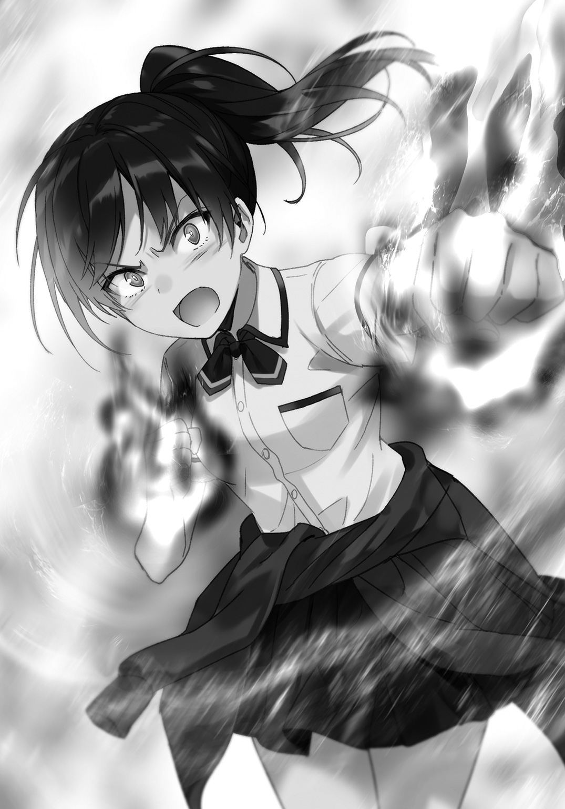
鋭い踏み込み。下半身の力を腰に集め、振りかぶる右拳へと注ぎ込まれる。
全身を見事に使った、洗練されたパンチの打ち方だと見るだけでわかった。
威力が凄まじいのも、当然見抜いた。
（ヤバッ......!!）
瞬時に足に魔力を集中。途端に黒い雷が発生し、それを纏わせて地面を蹴り、放たれた拳をかわし真横へと跳んだ。
「あっぶな――」
「まだよ」
呟きを搔き消すような言葉の直後、朱美ちゃんは俺に向かって真っ直ぐ伸ばした左掌の前に魔力を集中させて真っ赤な球体を生成させた。
空中に浮かぶ俺へ......いいや、その間に浮かぶ赤い球体へ、右ストレートを打ち放つ。
「【レッド・ストライク】!!」
右拳を叩き込まれた赤い球体は、【顕現魔装】に組み込まれた炎属性の上級魔法――『爆炎魔法』の〝勢い〟に乗り、さらには球体自体も爆発して何倍にも巨大になって俺めがけて飛んできた。
俺が着地するよりも俺に着弾する方が早い。しかし焦ることなく、迫る爆発の塊を睨みつけ、魔力を練り上げる。
「ブラック――ッ!?」
魔法を発動しようとした刹那に〝気づく〟が、もう遅かった。空中では動きも取れないし、魔力を放ってしまった。今さらキャンセル出来ない。
「チッ―――【ブラックユーモア】!!」
舌打ちした後に叫び、飛来する爆発物を漆黒に染め上げて、〝盾代わり〟に両手を顔の前でクロスさせる。
当たってもただ砕けるだけのなんの意味もない黒い巨大なボコボコした物体が眼前へと迫った―――その時、黒い物体を跡形もなく吹き飛ばし、俺の体を丸飲みする紅蓮の爆発が起こった。
烈風と熱が辺りを僅かな時間埋めつくす。
魔力を無効化する特殊鉱物で作られた校舎の屋上は焦げて黒ずんでいる。魔力や魔法を無効化しても、それらから起きた二次的な影響までは守備範囲外なのだ。
......とまぁ、呑気に状況解説なんかしているので爆発に飲まれたけど生きているわたくしは、煙の届かない場所へと向けて爆煙から飛び出した。
「あっつぅッ......！ 殺す気なのかあの子は......！」
爆煙で見通しが悪い。魔力の消費は痛いが視界を確保出来ないのはそれ以上に痛いので仕方なく、風系魔法を右掌に発動させ、横に薙ぐようにして放ち邪魔な煙を吹き散らす。
消えていく煙の中に佇んでいた朱美ちゃんは、すでにこちらを見据えていた。
「朱美ちゃんちょっとストップ！ 話し合おうよ！ ね!?」
「嫌」
なんの躊躇いもない却下のお言葉に苦笑いがたまらず零れる。そりゃああんな攻撃してくるんだから今さら話し合いなんかを承諾なんてしないよね......。
頭をかいてため息を吐いた俺は「しゃーなし」と小さく呟いて、首を傾けて骨を鳴らす。
「なら、話し合いを受け入れてもらえるようにしないとね」
「あら、どうやって？」
バチッ、と右腕周辺からそんな音が響く。
「ホントは俺も嫌なんだよ、女の子に乱暴なことはしたくない。キミみたいに可愛い子ならなおさら嫌だよ」
足元に落としていた視線を上げ、朱美ちゃんを見つめる。
―――話し合いが出来ないなら、出来るようにするしかない。
―――聞く耳を持ってくれないのなら、持たせればいい。
多少強引な方法だ。もしかしたら他に何か別の方法で話し合いに発展させられることが出来るのかもしれない。
だけど、
「ちょっと痛いかもしれないけど、許してね」
生憎なことに、『俺』にはその方法が思いつかなかった。
結局は力でものを言わせる。お世辞にも気分のいい話ではない。
だが、俺に残された最善の策は、もうこれくらいしかないのだ。
「やっとやる気になったわね、防戦一方なんてつまんないし」
赤いグローブが赤く輝き、笑う朱美ちゃんの顔を照らす。
「見せてみなさいよ、あたしの兄に喧嘩を売るくらいに自信はあるあんたの強さを」
「喧嘩なんて勝敗はともかく誰にだって売れる。強さなんて関係ないよ、必要なのはハートさ」
「ドヤ顔ウザい、目障りだからやめなさい」
うーわ、今のは結構威力あったなー......。
ふぅ......と小さく息を吐いた後、
「そんじゃあ行くよー」
「来なさい、黒焦げにされに」
両足に魔力を集中。途端に黒い雷が取り巻くように発生し、厳めしい音を立て始める。
それを見て僅かに腰を落とした朱美ちゃんは準備完了のようで、いつでも行っていいようだ。
（さっき「来なさい」って言ってたし―――行くか）
右足を大きく後ろにやり、腰を思いっきり下げて。
ズバンッッ と。
屋上の地面を蹴散らし、前方へと弾け飛ぶ。空気の唸る音、突き破る感触を全身に浴びながら朱美ちゃんめがけて突っ込んでいく。
「―――え......？」
朱美ちゃんの真ん前で急停止し、顔の前に左の掌を翳す。
呆然として立ち尽くす朱美ちゃんに向けて、一言放つ。
「【ブラックアウト】」
闇が、瞬く。
これで終わると思っていた―――が、どうやら俺は朱美ちゃんを甘く見ていたらしい。
黒い光が放たれる寸前で体を地面と水平になるほど真横に大きく倒し、俺の【ブラックアウト】を視界から外したのだ。
恐らく魔法の効果までは読めていなかったのだろうけど、何かしらされると判断しての大きな回避。呆然とした状態から回避に移るこの速度はかなりのものだ。
「いい判断だ」
「ッ――!!」
横に倒した体を一気に跳ね上げ、勢いに乗った右拳を斜め下から打ち放ってくる。それを上体を捻ってかわし、左手を朱美ちゃんの横腹へ添える。
今度は黒魔法ではなく白魔法......そのうちの無系統魔法を発動させ、朱美ちゃんの体をゴムボールのように弾き飛ばした。
「......チィッ！」
ダメージはないはずだ。弾き飛ばしたけど押し出すような〝柔らかい〟イメージで発動させたからね。
空中でなんとかバランスを取り、うまく足から着地した朱美ちゃんはすぐさま次の動きへ移る。
左手を真後ろへ真っ直ぐ伸ばし、掌をめいっぱい広げ、そして一気に握り込ませた。
瞬間、握った拳が爆発。その勢いを利用して凄まじい速度で体を前へと押し出した。
（なるほど、〝さっき〟のはあれで一気に加速して間合いを詰めてきたのか......）
【ブラックユーモア】で黒に染めた〝元〟爆発の塊が爆発したのは、あの加速方法で接近して塊を殴ったから。女の子にしては乱暴で、そしてド派手なアイディアだ。
「さすが、『勇者パーティー育成施設』に通っていただけはあるね」
急接近してきた朱美ちゃんの豪快な裏拳をサイドへ移動しながらかわす。爆発の勢いに乗ったまま通過してしまうが、朱美ちゃんはすぐに拳を爆発させて跳ね返るように戻ってきた。
今度は地面に両足をつけての右ストレート。それを体を傾ける程度で避け、続けざまの左フックもかわす。
俺が下がりながら避けて、朱美ちゃんが進みながら攻撃してくる。一発一発全力で、それでも後の攻撃に繫がる〝綺麗な流れ〟に感心しつつも俺は距離を取るべく後方へ跳び下がった。
「チッ、すばしっこい奴ね。あんたも男なら殴り返してきなさいよ！」
「あとから『女を殴るなんてサイテー！』とか言われたくないからねー。まず女の子に暴力振るうとか男としてどうかと思うし」
「いつまでもそんなふうに、余裕ぶってられると思うんじゃないわよォ!!」
両手を後ろに構え、朱美ちゃんは開いた掌を握って爆発させて突っ込んでくる。
あのグローブに組み込まれた爆炎魔法がある以上、掠りさえすれば大爆発して丸焼きにされてしまうし、近づかないのが一番か......。
遠距離から攻撃して、隙を見て距離を詰めて【ブラックアウト】で意識を奪う......よし、んじゃあこんな感じで―――
「【レッド・シェル】!!」
「ッ!?」
ゴバァッッ と、突き出された左拳から放たれた紅蓮の球体にギョッと目を剝く。
パンチの速度と同じ速さで空気を熱する巨大な爆弾は瞬く間に迫り、思考の途中で不意を衝かれるが即座に右手の人差し指と中指を揃えて球体へ突きつける。
正確には、球体の少し上に。
「【ブラックダウン】ッ！」
その指を真下へ振り下ろし、球体の上から黒い魔力が一気にのしかかる。
負荷がかかった直後に爆発するが構わず―――俺は紅蓮の中へと飛び込んだ。
干上がるような熱を貫き、抜けた先には爆発の向こう側に位置していた朱美ちゃんの姿が。
「【ブラックユーモア】」
両手に装着された【顕現魔装】に魔力をぶつけ、魔法の効力を漆黒に染め上げて消失させた。これで一瞬の間だけ、彼女は無防備になった。
あとは、と右の掌を朱美ちゃんの眼前に伸ばし、目一杯開く。
これでチェックメイトだ。
「【ブラックアウ―――」
「ァッ」
ガゴォッッ と、【顕現魔装】の消失などお構いなしに、鈍い音を響かせて朱美ちゃんの拳が顔面に直撃。
ただの女の子の腕力だけの話ではない。全身を活かし、さらには肉体強化魔法で跳ね上がったその威力は、高校生の男子を吹き飛ばすなど易々とやってのける。
背後に立ち昇る熱の残った煙を突き抜け、屋上を囲う安全のために設置された鉄製のフェンスへと叩きつけられた。
メギィッ！ と激突の際に大きく凹み、歪んでしまったフェンスは屋上から投げ出されるのを防いでくれた。
「くっ......モロに貰っちまった。あんの赤頭―――」
――眼前を埋め尽くす、赤熱。
「大丈夫、死にはしないから」
そんな言葉が聞こえた時には。
確認を取るよりも先に、爆発の塊が熱を撒き散らして鼻先にまで迫ってきていた。
回避など間に合う訳がなかった。
着弾――からの大爆発が起きた。
背後にあった鉄製のフェンスを派手に吹き飛ばし、俺の全身を余すことなく包み込み、燃え盛る。
「回復魔法が得意な知り合いがいるから心配しなくていいわ。だから安心して焼かれなさい」
そして、と爆音の余波が残る屋上に朱美ちゃんの言葉が続く。
「後悔することね。あたしの兄に、あんたみたいな馬鹿が関わってしまったことを」
全身が焼けるように熱い。ていうか焼けているんだから当然か......。息を吸うだけで高熱のせいで喉まで痛い。
「あたしの兄にもう関わらないと言うならここまでにしておいてあげるわ。どうする？」
「.........」
「あれ、気絶しちゃった？ なら保健室にでも運ん――」
「おい」
ボゥッ！ と発動した風魔法で周囲の邪魔な煙を散らし、片膝をついていた体勢から立ち上がる。
「いくらなんでもやり過ぎだ。俺のことは別にいいけど、学校の物を壊したりするのはやめろ」
「......ハッ、まだそんなこと言える余裕があるんだ。想像以上にやるみたい――」
「笑ってんじゃねぇよ」
ビクッと肩を震わせたように見えた。驚きの色を顔に浮かべている朱美ちゃんを細めた目で見据えながら、
「痛い目見ることになるとは言ってたけど、本当はそんなことするつもりはなかった。だけど気が変わった」
指の骨がパキパキと音を立てる。
魔力で回収していたフェンスの残骸を集め、復元魔法で元通りに戻してから朱美ちゃんに向き直る。
「多少は痛い思いをしてもらうよ。キミは物事を軽く見てるみたいだからね」
「......やっと、まともにやる気になったって訳？」
「そういうことかな。だからまぁ―――」
足の周りに黒い雷を纏わせ、その足でもって地面を蹴る。
たった一歩。
一度の跳躍。
それだけで、朱美ちゃんとの距離を一瞬にして埋める。
「―――今まで以上に気合いを入れろ」
握り固めた拳を、真上から落とす。ズドンッ と拳は着弾したが、狙った目標を捉えた訳ではなかった。
「ぐゥッ......!?」
朱美ちゃんは腕をクロスして頭上に掲げ、盾にして受け止めていた。今の速度に反応したのは、素直に感心する。
「ふッ！」
鋭く息を吐き出し【顕現魔装】を両手に装着した朱美ちゃんは俺の拳を弾き、すぐさま攻撃へ転じた。空気を引き裂く右のロングフックが繰り出される。
拳を受け止めると爆発するからガードは出来ない。
しかしガードは出来なくとも、パンチを止めることは出来る。
【顕現魔装】で覆われていない腕の部分を左手で摑み取り、ストップをかけることで。
「!?」
「横腹ががら空きだ」
指摘して、容赦なく。
ゴッ！ と、朱美ちゃんの右の横腹に裏拳をめり込ませた。
「うあっ......!?」
空気を吐き出す朱美ちゃんなどお構いなしに、摑んでいた右腕を引っ張り朱美ちゃんの体の内側に体を滑り込ませ、背負い投げの要領で遠くへ投げ飛ばす。
「く、ゥアアッ!!」
強引に体を捻り、朱美ちゃんは拳を振るう。その勢いによって放たれた紅蓮の球体を目にし、左の人差し指と中指を腕ごと一直線に上げ―――そして振り下ろす。
「【ブラックダウン】」
さっきと同様に押し潰すように爆発の球体の上に放つ―――のではなく、球体の向こうにいる、空中に浮いた状態の朱美ちゃんへと魔法の照準を合わせ、放つ。
ガドンッッ と地面に背中から叩きつけられた朱美ちゃんが見えたところで、紅蓮の球体が着弾して爆発する。
今日何度目かの大爆発。これだけ派手な音を立ててたら問題になりそうだなぁとか呑気に考えてみたり。
「がッ......あぐゥッ......!!」
落とした瞬間に魔法の効果は消した。だから朱美ちゃんはもう自由だが、ダメージのせいですぐに動くことが出来ない様子だ。
「ちょうどいい、もう魔力も少ないし、さっさと気絶して俺の勝ちを認めてもらうとしようかな」
「......あ、あんた............ッッ」
まだ横たわったままの朱美ちゃんは俺を見るなりギョッと目を丸くし驚きを露にした。
「どうした？」
口の動きに合わせ、パキパキと黒い破片が散らばっていく。顔、そして制服を覆っていた黒い膜が次々に剝がれ落ちていく。
顔半分......目から上を闇に染めて笑いながら、俺は首を傾げて彼女へ尋ねる。
「キミは一体何に〝怯えてるんだ？〟」
「ッ！ .........だ、誰が......!!」
上体を起こしたと思った直後、両手を握り爆発させ、朱美ちゃんは真上に飛び上がった。
「誰があんたなんかにビビるッてのよォッ!!」
小さな爆発を連続させてブーストに使い、遥か上空に浮上した朱美ちゃんは屋上に立つ俺を敵意剝き出しの目で見下ろし、両手の【顕現魔装】を消した。
.........いや、違う。消したんじゃない。
（新しい魔装を形成するつもりか......？）
カッッ!! と眩い深紅の閃光が瞬いた。閃光の発生地点は朱美ちゃんの右腕で、そこには今までとは違う【顕現魔装】が装着されていた。
先ほどまでの手首から指先だけのグローブではない。指先から肘までを包んだ魔装はグローブなどではない......あれは言うならもう『鎧』と表現する方が正しいか。
分厚い装甲、眩い赤、圧縮された膨大な魔力。
それらを纏った右腕を真っ直ぐ真下にいる俺へ伸ばし、狙いを定めた。
圧縮された魔力の量だけでもあれのヤバさが伝わってくる。回避は出来たとしても、あれほどの魔力が爆炎魔法で放たれたら......しかも広範囲となるのなら余計ヤバい。
魔力無効の鉱物『キャンセルマテリアル』で出来た校舎でも、爆発の余波を受けて大変なことになりかねない。
チラッと屋上の出入り口に目を向ける。あそこで見ているであろう彼らを逃がすのには遅いし、朱美ちゃんを説得して止めるのも手遅れっぽい。
校舎の損害をゼロにし、田上っちや刀野さんたちに被害がないよう朱美ちゃんの一撃を止める。
（【ブラックユーモア】じゃ消し切れないな、あれは）
思案しながらも俺は体を覆っていた魔力全てを体内に戻し、集中力を高め魔力を練り上げる。
準備も途中。まぁ待ってくれないのは知っていたが、
「【レッドォォ―――!!」
紅蓮に包まれた右腕を振り上げ、拳ではなく掌底の形の手に膨大な魔力が集められている。
それを目にし、俺も動く。
右手を胸の前くらいに上げ、朱美ちゃんを見上げたまま五指を伸ばし、掌を開く。
刹那―――純黒の円が全身を包み、広がった。
広さは直径一〇メートルほど。俺の残りの魔力じゃこれが限界だが、やるしかない。
朱美ちゃんも俺の魔力に気づいたみたいだが、止まる気はないようだった。
「―――ニルバーナァアアアアアアアッッッ！！！！】」
深紅の巨大な光が、落ちる。
魔法の大きさは思ったほど大きくなかったが、それでも威力はありそうだった。
放たれた瞬間熱が打ちつけられ、触れずとも蒸発しそうな高温の光はまさにレーザーのようだった。
......多分、これは朱美ちゃんのフルパワーなんだろう。
ならやっぱり、真正面から受けてやらないとダメな気がするんだよな。
―――胸の前にあった右手をグッと握る。
それに合わせ、周囲へ広がっていた黒い光が一点へ凝縮される。
右の手。その中へと。
降り注ぐ眩い赤を見上げて、右手を頭上へ一直線に伸ばして。
握った手を、一気に開く。
凝縮された力を解き放つように―――。
「―――【ブラックフィナーレ】」
闇が、終わりを告げる。
赤と黒。
互いに似た放出系の魔法。
ズレなどない、正真正銘、真正面から、二人の最後が激突する。
「―――どれほどの威力があろうとも」
赤と黒が接触した瞬間、激しい衝突音を発する―――ことなく、黒が赤を飲み込み、染め上げ、消し去る。
止まらないまま突き上がる黒は、あっという間に少女の前にまでやってくる。
「―――闇は全てを喰い尽くす」
そして。
ヴォウッッ...！！！！ と唸るような音とともに、少女の体を飲み干し、漆黒は天へと昇る。
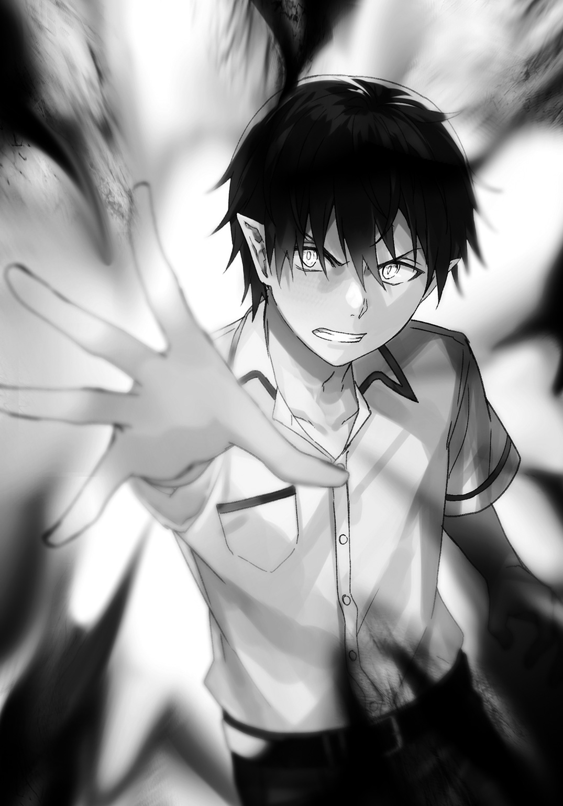
掌から放出されていた黒い光は、エネルギーである魔力が尽きたことによって強制終了された。
「......ふっ」
長く深い息をつき、右腕を下ろす。ただし下にではなく体の前辺りまでで、左手も同じ位置まで上げる。
そのままの体勢で待つこと数秒。
赤い髪の女の子が腕の上に落ちてきた。
「おーい起きろ～、スカート捲れてパンツ丸見えだぞ～」
「.........う......うぅっ......？」
魔法をモロに食らったが朱美ちゃんは無傷。
それも当然だ、俺が放った魔法に設定した対象物は朱美ちゃんの魔法のみ。朱美ちゃんが放った魔法と右腕の【顕現魔装】にのみ作用するようにしておいたのだ。
きっと消し飛ばされると思ったんだろう、朱美ちゃんは黒魔法に飲まれた直後に半分意識を失い、今では朦朧としてしまっている。
「うんっ......あれ、あたし......」
「安心していいよ。キミの体はなんともないからね」
朱美ちゃんを地面に立たせる。まだ状況を理解出来ていない様子の朱美ちゃんだったが、ゆっくりと実感が湧いてきたように表情に力が戻ってきた。
悔しげな顔で呟く。
「......あたし、負けたのね」
「そういうことにしてくれると助かる」
「わかってはいたんだけどね、どこかでは」
悔しげだが、どこかスッキリとした感じを見せる朱美ちゃん。
「あんたからはあたしなんかとは違う空気を感じてた。兄さんと同じ.........ううん、兄さんと似ていてまったく違う空気を感じてた」
「そんな空気を出してるつもりはないけどなぁ」
「今は感じないわよ、馬鹿っぽい空気しか」
「おい」
クスッと笑った朱美ちゃんだったが、すぐに真剣な顔になった。
彼女は尋ねてくる。
「黒魔法が使えて、ただ者じゃない雰囲気を纏ってるあんたは......いったい何者なの？」
「ただの一般人さ、黒魔法が使えるってだけの、どこにでもいる高校生だよ」
間髪をいれずに答えた。
はっきりと、真面目に、噓をつく。
「...............あっそ」
きっと噓をついていることはバレているんだろう。だけど聞いてこないあたり、そういう気遣いも出来るみたいだ。
「じゃあ今度は俺が質問する番だ。答えてもらおうかな、なんで俺に勝負を持ちかけたのか」
その目を真っ直ぐ見つめて尋ねると、朱美ちゃんはゆっくりと視線を斜め下へと泳がせた。
「.........理由は、二つ。あんたが兄さんに関わったことで、兄さんがオタクに戻ったから」
「......あー、『変えた』ってそういうことか。でもそれ、キミの我が儘だよね？」
「......そうね、自分勝手な、我が儘」
「昔は地味だったそうじゃないか。でも勇者パーティーに選ばれて、英雄になって、桐弥っちは変わった。地味な自分を捨てて派手で、強そうで、カッコいい兄になった。キミはそれが嬉しかったんだね？」
キュッと自身の腕を摑むのが見えた。どうやら当たりらしい。
「...あたしの誇りだった。憧れで、自慢だった。あたしの兄はすごい人で、強くてカッコいい、まさにヒーローみたいな人になった。あたしはそれがたまらなく嬉しかったの。......でもあんたと揉めたあの日以来、兄さんはまたオタクに戻っちゃった。てっきりやめたと思ってたけど、違った......」
「オタクはそう簡単にやめられない、一種の呪いだからねー」
「ちょっと前の兄さんは家でもそんな素振りは見せなかったけど、あの日から堂々とするようになったの。アニメとかゲームとかフィギュアとかを普通に楽しむようになった。あたしは、それが嫌だった......」
オタクと非オタクの相容れない現実に直面してしまい口元の筋肉が硬直する。
この溝は一朝一夕で埋まるものじゃないからなぁ......非オタクの人が興味を持ってくれれば話は早いけど、毛嫌いしてる人に受け入れてもらうのは至難の業だ。
「まぁ、わかるよ。キミの気持ちは」
「じゃあ、あんたからも説得してよ！ アニメやゲームから卒業してって！」
「無理だね」
「ど、どうして......!?」
「キミの気持ちもわかるけど、桐弥っちの気持ちもわかるんだよ。オタクにアニメやゲームを捨てろなんて、食事と睡眠をするなと言ってるようなものなんだから」
「......意味わかんない」
「つまり、大好きな趣味をそう簡単には捨てられないってことだよ。それくらいはキミもわかるだろ？」
「.........」
「キミは理想を押しつけすぎなんだよ。桐弥っちは桐弥っちなんだから、桐弥っちのやりたいようにやるのが普通だろ？」
沈黙してしまった朱美ちゃんに笑ってみせながら続ける。
「兄貴が自慢ならありのままを自慢しろよ、『私の兄はオタクだけど、勇者パーティーに選ばれたカッコいい兄なんだ』ってね。ありのままの桐弥っちを受け入れてやらないと、桐弥っちが可哀想だろ？」
「.........」
「言うだけのことは言った。それでもわからないんなら、一度桐弥っちと話してみるといい。〝ちょうど聞いてるみたいだし〟」
「え......？」
俺が指を差す先は屋上の出入り口。僅かに開いたドアの隙間は、やがて押し開かれた。
「.........兄さん......!?」
出てきたのは桐弥っち。その後ろに刀野さんと田上っちが続いて出てきた。
桐弥っちに気づいたのは朱美ちゃんと戦ってる最中。俺がマジな反撃を始める前くらいだった。
加減してたとはいえ妹が殴られたら出てくるかとも思ったが、どうやら抑えてくれていたみたいだな。
「......兄さん、その......」
「.........」
朱美ちゃんはすっかり元気がなくなってしまった様子。そんな朱美ちゃんの赤い頭に桐弥っちはチョップを一発落とした。
「あたっ!?」
「まったく、お前は昔からムチャクチャするよな」
呆れた小さな笑みを浮かべる桐弥っち。だが怒っているようには見えず、目の色もどこか優しかった。
「朱美の気持ちはわかった。まっ、その辺の話は家に帰ってゆっくりしよう。扇くんに言われたことが伝わらないお前じゃないだろ？」
「.........」
顔を赤らめて俯く朱美ちゃん。なるほど、兄貴の前だとここまでしおらしくなるのか......。
「扇くん、ごめん。僕の妹が酷いことをした......責任は兄の僕が取るよ」
「ほぉ、いい心がけだ桐弥っち」
「なっ、兄さんは関係ないじゃない！ あたしが全部悪いんだから、あたしが責任を取るわ！」
「じゃあ二人に取ってもらおうかな。俺もこの通りボロボロだし、火傷とかめちゃめちゃしてるしね」
顎の下に手を置き数秒考える。
「......よし、決まった」
「なんでも言ってよ扇くん、覚悟は出来てる」
「あたしも、覚悟はいいわ。なんでも言いなさい」
二人ともいい姿勢だ。フッフッフ、なら遠慮なく言わせてもらおうかな。
「桐弥っちは今度晩ご飯奢ること。朱美ちゃんはスリーサイズを教えること。これで許してやる」
「はああっ!?」
「ぼ、僕はそれでいいっていうか、そんなのでいいの？ っていうか.........でも、朱美はちょっと......」
「冗談だよ桐弥っち、朱美ちゃんのは冗談。ただし桐弥っちは晩ご飯奢れよ？」
「...............」
「う、うん。そんなのお安いご用だ、任せてよ！」
「よーし、それで決まりだ。朱美ちゃんの方はもうちょい考える。心配すんな桐弥っち、変なことは言わないから」
「...............」
「助かるよ扇くん......じゃあいつにしようか？ 晩ご飯」
「そうだなぁ、まぁいつでもいいんだけど......」
「...............上等よ......」
「ん？」
「上等よォ！ あんたがそう言うなら教えてやるわ！ こんなのであんたが満足してくれるなら躊躇ってなんかいられないってのよ!!」
「ちょ......ちょっと、朱美ちゃん？」
「兄さんがしてあたしがしない訳にはいかないわ！ だからあたしはあんたの命令に従う！ よく聞きなさいよ!! う......上からぁ......」
「おわーストップストップ!! ストップだ朱美ちゃ――ん」
慌てて朱美ちゃんの口を手で塞ぎ黙らせる。冗談なのになに本気になってるの......いや知りたくないのかと言われたらメッチャ知りたいですけどね!?
「朱美ちゃんのはまた今度言うから！ さっきのは冗談だし、言わなくていいよっ」
「ん......」
落ち着きを取り戻した朱美ちゃんの口元から手を離して一息つく。
「疲れた......凄まじいまでに疲れた......」
「お疲れ様、真代。ケガは大丈夫なのか？」
「刀野さん、田上っちも.........ケガは問題ないよ、時間が経てばすぐ治るから」
「爆発に巻き込まれたケガがすぐ治るのか......？ しっかしすげーなお前。マジで何者なんだよ？」
「だぁから別になんでもないってば。普通普通。どこにでもいる平凡な高校生さ」
「俺の知ってる平凡と違うんだが？」
魔王視点からの平凡ってことならいいのかな？
......ん？ ていうか魔王視点の平凡ってなんだ？
「でも、信じられないわよそんなの。黒魔法だけでも普通じゃないのにあの無駄のない戦い方......あんたもしかして、軍人か何かなんじゃないの？」
「軍人......その設定カッコいいな」
「あ、違うのね......」
「とにかく今日はもう帰ろう！ 疲れた！ 体痛い！ お腹減った！」
騒ぎ立ててようやく話題を逸らし、質問攻めを回避する。これじゃあ魔王以外に何かそれっぽい言い訳とかも考えとかないとダメな気がするなぁ......。
俺の訴えも通り、みんな帰る流れに。なくなってた魔力もすっかり回復してきたし、家に帰ったらちゃっちゃと体のケガを治さないとシュリンに心配されちゃう。
「ねぇ、保健室......行かなくていいの？」
朱美ちゃんが心配してそう言葉をかけてきた。ぎこちなさが伺えるあたり、ちゃんと申し訳なく感じているようだった。
「大丈夫だよ。それより朱美ちゃんは大丈夫？ 殴ったり叩きつけたりしたけど、どこか痛かったりする？」
「あんたが加減したんでしょ、痛い所なんかないわよ」
「まぁ、念のためにね。でもそっか、よかったよ」
「っ......！」
プイッと、突然顔を反対側に背けた朱美ちゃんに首を傾げる。
「......あ、思い出した」
「......何？」
「いや、さっき言ってた俺に戦いを挑んだ理由。あれ二つあるって言ってたじゃん？ もう一つってなんなの？」
「........................、言いたくない」
「え、なんで？」
「......なんでも」
俺は目を細め、背けたままの朱美ちゃんの顔を見るために回り込むがしかし、また反対に顔を向けてしまった。
「.........そーいえば、さっきなんでも言うこと聞くって言ってたよなぁ？ 責任は取るとか」
「！」
「命じよう！ 俺の質問に答えるんだ！」
「ぬっ、この...！」
「ええ～？ もしかして口だけだったの～？ 朱美ちゃんはボコボコにした相手に申し訳ないとか思わない冷たい子なの～？」
「うぐぐぅ！ わ、わかったわよっ......！」
アハッハー！
「も、もう一つは............その......」
ニヤニヤしながら見ていると、朱美ちゃんの顔がどんどん赤くなっていく。耳まで赤くなり、髪の色と同じくらいになりそうな勢いで変わっていく。
「............ぁ」
「あ？」
「......あんたのこと......もっと知りたかった、から......」
「え？............朱美ちゃん、それって......」
「..................」
ごくりと喉を鳴らし、抑えきれずに叫んでしまった。
「おっおお俺のこと好きだったのぉ!?」
「っっっっ！！！？？」
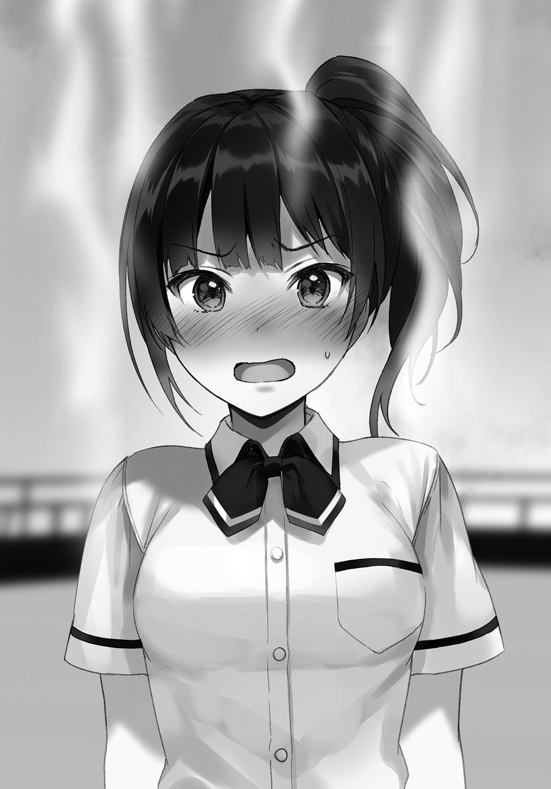
ボカンッ!! と朱美ちゃんの首から上が限界まで赤く染まって煙を噴いた。
そして俺は高まる鼓動を抑えようと必死に腹式呼吸。
「そっっ......」
小さく呻いたと思った刹那、朱美ちゃんの右手が紅の輝きを放った。どういう訳かの【顕現魔装】に目が点になる。
そんな俺へ。
グルグル回った目の真っ赤な少女は吠えて―――、
「そそそっそんな訳ッッあるかぁぁあああああああああああああああああああああああああああああああああああああああああああああああああああっっっ！！！！！！」
「ちょっっ――」
腰の回転が決まった右ストレートが放たれて。
ドガアアアアアンッッ！！！！ という腹の底まで震わせそうな綺麗な爆音と。
ギャアアアアアアアア！！！！ とかいう情けない絶叫が、夏の青い空の下で響き渡り、儚く消失していくのだった......。
最終章 密かに魔王は人間界にて
―――あの日以来、桐弥っちと朱美ちゃんの兄妹仲はよくなったみたいだ。
まぁ元々不仲だった訳ではないから、朱美ちゃんが一方的に置いていた『桐弥っちとの距離』が縮まった、元に戻ったって表現が正しいかもしれない。
やはり兄妹っていうのは......いや、兄妹に限らず、そういう肉親関係ってのは仲がいいのに限る。友達よりも近い、より深く通じ合えるのは兄とか姉、弟や妹だろうと俺は思う。勝手な想像だけど。
とにかく、仲がいいのは良いことだ。
俺も今の自分自身の力具合をおおよそだけど把握出来たいい機会だった。しばらくは人間界にいるとして、何事もないとは限らない。いざという時、自分の戦力が把握出来てないとなると酷い目に遭うのは間違いないからな。
と言っても、魔王が死んだってことで平和になった世界だ。何かあったとしても人間たちがなんとかするし、ヤバくなったら世界の英雄である勇者サマご一行が解決してくれるだろ。
（俺は俺でおとなしく、目立たないように端っこにいればいいか。この学校には勇者パーティーの桐弥っちがいるんだし）
そういやその桐弥っちが、まだアニメやゲームをすんなり受け入れられない朱美ちゃんに、一般受けしているようなものから慣らしていくとか言っていたな......。
「理想は隠れオタクになるくらい馴染ませたい」とかほざいていたから、それは蹴りを入れて止めておいたが......大丈夫かなあの勇者パーティー......。
「では、授業を始めます」
チャイムが鳴って教室に入ってきたのはマイビーナス、福吉先生。でも今からの授業は世界史だ。福吉先生の担当は魔法技のはずじゃ......？
「歴史の先生がお休みだから、今日は私が担当します。まぁ授業のペースはだいぶ進んでいるみたいなので自習でいいとの連絡がありましたので自習してください。質問などあったら遠慮せずにしてくださいね」
......ということらしい。よーし、福吉先生にいっぱい質問してやるぞ～。関係ないこととか聞いても怒られないかな？ 怒られるよね。
自習との指示が出て、各々必要と思う勉強を始めた。違う科目の予習だったりしてなかった宿題を片付けたり、中には読書まで始める人までいたり。
そんでもって俺は、特にやることもないので世界史の教科書をペラペラと流し読みすることにした。
ちなみに俺は、この世界史は結構好きだったりする。
人間の歴史が、まぁざっくりとではあるものの学べる。先生の解説もあったりで、俺の『人間たちのことをよく知る』という目的には打ってつけの教科だからだ。
片肘をついたままページを読んでは捲って読んでは捲ってを繰り返していた時、ふとある単語が目に止まった。
『ルベルディーゼの災日』。
一九七〇年に起きた世界的大災害と記され、その時の世界をイメージしたデッサンや実際の写真が記載されていた。
ルベルディーゼという単語は俺も知っている。
―――初代魔王、その名前だ。
初めて魔物たちの王となり、世界に名を轟かせ支配した諸悪の根源のような存在。
どんな奴かは俺も知らない。もうとっくの昔にくたばってるが、人間たちが知る魔王の名前なんてこれくらいしかないのだろう。俺の名前は公表してないからね。
まさに世界が終わるとさえ思えた日なんだろう、そうじゃないとこんな名称はついたりしないはずだ。
しかし、単語も気になったがもう一つ気になるのが、これが起きた年だ。
（一九七〇年......人間と魔界じゃ年の数え方が違うからなぁ、魔界でも何かあったっけ？ 〝結構最近な気がするんだけど......〟）
腕を組み思い出そうとするが、思い当たるものはない。.........まぁ気にしなくていいか。
という訳でペラペラとまたページを捲り、読み進んでいく。
「........................、ッ」
ある一ページ。そこを開いた瞬間に目に飛び込んできたものに目を剝き、即座に教科書を閉じた。
バンッ!! とかいう大きな音を立ててしまい、すぐさま謝るが、周りの目も気にせず深呼吸する。
（不意打ちすぎるだろ......教科書に載ってて当たり前なんだろうけど、何かしら教えといてくれよ、『この次あいつが出るよ！ 気をつけて！』みたいなさぁ......）
クッソ～、完全に油断してたからショックがでかい......あの面を見ただけで虫酸が走ったぞぉ。
......俺がここまで拒否反応を起こす生物なんてこの世に一つしかありはしない。あの忌々しい、目に突き刺さるような『白色』を思い出すだけでお腹が痛くなりそうだ。
ヤベッ、なんか変な汗まで出てきたし......。
（.........それにしても、あれから一年か......）
まるで昨日のことのように思い出せる。
目を瞑ればあの時の情景が寸分違わず浮かんでくるほどに脳内に刻み込まれてしまっている。
―――白い髪に白い鎧。そして手にするは世界に四本しかないと言われる宝剣の一つ。金色に輝く聖剣・ミアリナード。
あらゆる魔を切り裂く力を宿した最強の剣を持つ者。
『なるほど、お前が勇者か』
『そういうあなたは、魔王ですね』
.....................、嫌な思い出だ。
だけど、あの日があったから俺はこうして人間たちのことを学ぶ機会を手に入れることが出来た。
人間と魔物の対立が長く続いてきたこの世界を変えるのには必要だったのかもしれない。
許せないことだってある。
今あいつと会うと確実に自分を抑えられなくなる。それだけは確かだ。
......でも、いつまでもそのままじゃダメだというのも確かなことだ。
いつか、いつか必ずこの気持ちにケリをつけなくちゃならない。
―――魔王と勇者。相反する二人が互いを意識し、どちらも生きていられるいざこざのない世界。
たとえ夢物語と笑われようが知ったことじゃない。笑うなら笑えばいい。
こんなやられたらやり返すようなうんざりするほど面倒で息苦しい世界をひっくり返して、魔物も人間も平和に暮らせる世界を作りたい。
いや、作ってみせる。
俺は魔王だ。
魔王でも、平和を求めてたっていいじゃないか。実現しようと頑張ってもいいじゃないか。
納得しないならさせるだけ。
邪魔する奴がいるのなら、蹴散らすのみだ。
（そのためにも、たくさん人間のことを勉強していかないとな......）
「真代くん？」
「っ！ うわぉ!?」
「あっ、ごめんなさい、ビックリした？」
「あ......は、はい、まぁ......福吉先生のおっぱいが目の前にあったので......」
「なっ」
「しまった言っちゃった！」
「ま、ままま真代くん!! 何を言ってるのあなたは!?」
「ひぃっ！ す、すいません！ つい本音が！」
「罰として廊下に立ってなさいっ!!」
「そ、そんなぁっ!!」
廊下に立たされた俺はしっかりと嚙み締める。
この青春に満ち溢れた学舎にいられる喜びとか、今ある世界の平和とか―――ではない。
（......福吉先生、水色の下着なんて可愛いじゃないですかぁ！）
あ と が き
『俺は魔王で思春期男子！』をお手に取っていただきまして、誠にありがとうございます。
初めまして、作者の横山采紅です。
小説投稿サイト『エブリスタ』で長らく書いてきて、まさかこんなことになるとは夢にも思っていませんでした。
私が『エブリスタ』で小説を書くきっかけは今でも覚えています。
「小説書いてみたら？」
友人のその言葉こそが全ての始まり。友人の名前はここでは伏せさせていただきます。
で、その加藤くんが私に言ったんです。「書いてみたら？」と。当時の小説投稿サイトの存在を私が知ったのも彼に教えられてでした。
試しに書いてみようと軽い気持ちでスタートしました。数は少なくとも、小説を、言葉や漢字もろくに知らないくせに長々と楽しく書いておりました。
そしたらまさかのこんな事態に............本当に大丈夫なのかと不安でいっぱいでしたが、とりあえず......、
やったぜ加藤!!
はい。喜びの言葉だけであとがきが埋まりそうなので、そろそろ本作についてのお話に。
勇者と魔王―――まさにファンタジーって感じですね。
ＲＰＧゲームみたいに敵を倒しながら旅をして最後に魔王を倒してめでたしめでたし......というのはやめて、あえてその『めでたしめでたし』の後、魔王視点でのお話になっております。
人間に興味を持った魔王が人間になりすまして憧れだった学校に通う、青春するべく奮闘する。
もちろん、主軸となるのはファンタジーらしくバトルです。漫画と違って小説は文字でバトルシーンを伝えなければならないので、なかなか難しかったです。少しでもイメージ出来る内容になっていれば幸いでございます。
もう一つの主軸となる青春。それに必要なのはやはり、ヒロインの存在ですね。
実は『エブリスタ』の方では明確なヒロインは存在しません。いや、ヒロインはいますね。正しくは主人公に最も近く、ストーリーに必要不可欠なメインヒロインが出ていないのです。
書籍化の際にヒロインをどうしようと思って真剣に悩みました。結果、個性も強くアクションも映えるツンデレ後輩、朱美に決まりました。
ヒロインだけでなく本作の内容もサイトのとはかなり違っていますので、サイトも読んでくれた人はその違いも楽しんでもらえればいいなぁと。逆もまたしかりです。
それでは、このあたりで締めの言葉にさせていただきます。
書籍化していただいたダッシュエックス文庫さま。並びに編集担当の日比生さまには多大な感謝を。わからないこと、悩んだことがあった時は助けていただき本当にありがとうございました。
素晴らしい表紙、イラストを描いていただいたフカヒレさまにも感謝を。本当に素晴らしいです。素晴らしすぎて素晴らしいとしか言えません。いや本当頭が上がりません。ありがとうございました。
小説を書くという環境を提供してくれたエブリスタさま。担当の川崎さまにも感謝を。本当にありがたい機会を頂きました。ありがとうございました。
不慣れなことを陰ながら支えてくれた家族、親友たちにも感謝を。感謝感謝で感謝だらけです。
そして今、この本を手に取っているあなたにも―――心から感謝を。
関わってくれた全ての皆様へ、全身全霊で御礼申し上げます。
重ね重ね、ありがとうございました!!
横山采紅
著者紹介
横山采紅 よこやま さいく
小説投稿サイト『Ｅ★エブリスタ』にて執筆中。
暇潰しにでもなってくれれば幸いですので、よければぜひ。
illustration
フカヒレ
作業部屋にエアコンがないので、冬は電気毛布と着る毛布のダブル装備で絵を描いています。
ダッシュエックス文庫DIGITAL
俺は魔王で思春期男子！
著者 横山采紅
© SAIKU YOKOYAMA 2017
２０１７年１月31日発行
この電子書籍は、ダッシュエックス文庫「俺は魔王で思春期男子！」
２０１７年１月30日発行の第１刷を底本としています。
発行者 鈴木晴彦
発行所 株式会社 集英社
〒１０１－８０５０
東京都千代田区一ツ橋２丁目５番10号
０３－３２３０－６０８０（読者係）
制作所 株式会社ＩＣＥ
本作品の全部また一部を無断で複製、転載、改竄、インターネット上に掲載すること、および有償無償に関わらず、本データを第三者に譲渡することを禁じます。なお個人利用の目的であっても、コピーガードを解除しての複製は、法律で禁じられています。